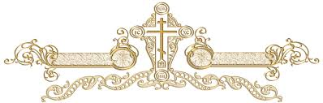

<!DOCTYPE html>
<html lang="sr">
<head>
    <meta charset="UTF-8">
    <meta name="viewport" content="width=device-width, initial-scale=1.0">
    <meta name="apple-mobile-web-app-capable" content="yes">
    <meta name="apple-mobile-web-app-status-bar-style" content="black-translucent">
    <title>ОХРИДСКИ ПРОЛОГ</title>

    <style>
        body {
            margin: 0;
            background-image: url("papir.png");
            background-size: cover;
            background-attachment: fixed; /* Pozadina se ne pomera dok skroluješ tekst */
            font-family: "Times New Roman", serif;
            color: #4A3728;
            text-align: center;
        }

        .container {
            max-width: 700px;
            margin: auto;
            padding: 20px;
            padding-top: 60px; /* Razmak da naslov ne udara u vrh ekrana */
            background: rgba(252, 245, 229, 0.6); /* Blaga providnost da se tekst bolje vidi preko papira */
            min-height: 100vh;
        }
        
  /* 1. КОНТЕЈНЕР ЗА БРОЈЕВЕ (Да држи три колоне на окупу) */
.sadrzaj {
    display: grid;
    grid-template-columns: repeat(6, 1fr); /* ТРИ КОЛОНЕ */
    gap: 10px;
    margin: 20px auto 50px auto;
    padding: 10px;
    max-width: 600px; /* КЉУЧНО: Ово спречава да се рашире преко десктопа! */
}

/* 2. ПОЈЕДИНАЧНО ДУГМЕ (Мало и елегантно) */
.katizma-link {
    padding: 8px 5px;      /* Мањи простор унутар дугмета */
    background: rgba(242, 230, 201, 0.9);
    border: 1px solid #8b6f47;
    border-radius: 8px;
    text-decoration: none;
    color: #4A3728;
    font-weight: bold;
    font-size: 16px;       /* Довољно велико да се види, а мало за око */
    box-shadow: 0 3px 6px rgba(0,0,0,0.1);
    transition: 0.3s;
}

.sadrzaj {
    text-align: justify;
    line-height: 1.6;
    font-size: 22px;
    padding: 20px;
    background: rgba(255, 255, 255, 0.2);
    border-radius: 10px;
    border-bottom: 2px solid #8b6f47; /* Tvoja tanja linija */
    margin-bottom: 30px;
}

.tekst-sekcija {
    text-align: left;
    line-height: 1.6;
    font-size: 21px; /* Malo krupnija slova za lakše čitanje */
    padding: 20px;
   
    border-radius: 10px;
    border-bottom: 3px solid #8b6f47; /* Deblja linija na dnu katizme */
    margin-bottom: 50px;
 text-align: justify;
}


        .katizma-naslov {
            text-align: center;
            color: #8b0000; /* Crvena boja za naslove katizmi */
            font-variant: small-caps;
            border-top: 1px solid #8b6f47;
            padding-top: 20px;
        }

        .home-dugme {
            position: fixed; top: 15px; left: 15px;
            background: rgba(242, 230, 201, 0.9);
            padding: 10px 15px; border-radius: 8px;
            border: 1px solid #8b6f47; text-decoration: none; color: #4A3728;
            font-size: 20px; z-index: 100;
        }

.nazad-dugme {
    font-size: 26px; /* Veća strelica na dnu */
    padding: 15px 30px;
}

 h1 { 
    margin-top: 20px; 
    font-size: 32px; 
    color: #8b0000; 
    margin-bottom: 20px;
}
b { color: #8b0000; } /* Crveni brojevi psalama */
        /* Da se lepše skroluje kad klikneš na link */
        html { scroll-behavior: smooth; }


     .dan-box {
        background: rgba(255, 255, 255, 0.2); /* Tvoja prozirna bež */
        
        border-radius: 15px;
        padding: 25px;
        margin-bottom: 40px;
        text-align: justify; /* Da izgleda kao prava knjiga */
}

 .datum-naslov {
    display: inline-block; /* КЉУЧНО: Дугме ће бити широко само колико и текст */
    width: auto;           /* Поништавамо оних 85% */
    min-width: 100px;      /* Да не буде баш премало */
    background: rgba(242, 230, 201, 0.5); /* Иста светла боја */
    padding: 8px 20px;
    border-radius: 10px;
    color: #8b0000;
    font-weight: bold;
    margin: 0 auto 15px auto; /* Центрира га и одваја од текста испод */
}

    .tekst-podnaslov {
         font-size: 21px;
        line-height: 1.6;
        margin-top: 10px;
        font-style: italic;
    }

    .sekcija-naslov {
        color: #8b0000;
        font-weight: bold;
        display: block;
        margin-top: 15px;
        border-left: 3px solid #8b0000;
        padding-left: 10px;
    }

    .tekst-prologa {
        font-size: 21px;
        line-height: 1.6;
        margin-top: 10px;
        text-align: justify;
    }


.fiksni-vrh {
    position: fixed;
    bottom: 25px; /* Malo iznad dna da je palac lakše dohvati */
    right: 20px;
    background: rgba(242, 230, 201, 0.95); /* Tvoja bež, skoro neprovidna */
    border: 1px solid #8b6f47;            /* Tvoj zlatno-braon okvir */
    border-radius: 50%;                   /* Savršen krug */
    width: 50px;
    height: 50px;
    display: flex;
    align-items: center;
    justify-content: center;
    text-decoration: none;
    color: #8b6f47;
    box-shadow: 0 4px 12px rgba(0,0,0,0.4); /* Malo jača senka da "lebdi" iznad papira */
    z-index: 9999;
    transition: 0.3s;
}

.fiksni-vrh:hover {
    transform: scale(1.1); /* Blago se poveća kad se klikne */
}


 .knjiga-meseca {
        width: 95%;
        max-width: 700px;
        margin: 20px auto;
    }


/* Ovo važi za sve uređaje */
.vrh-link {
    display: inline-block;
    text-decoration: none;
    font-size: 24px;
    padding: 10px;
    color: #8b6f47;
    font-weight: bold;
    margin-top: 20px;
}

/* Ovo se aktivira SAMO na telefonima */
@media (max-width: 480px) {
    .vrh-link {
        font-size: 32px; /* Još veća strelica za palac */
        padding: 20px;   /* Veći prostor za klik */
        display: block;  /* Da bude na sredini ekrana */
    }
}


    </style>
</head>
<body>
<div class='column-right-outer'>
<div class='column-right-inner'>
<aside>
<div class='sidebar section' id='sidebar-right-1'><div class='widget Translate' data-version='1' id='Translate1'>
<h2 class='title'>Translate</h2>
<div id='google_translate_element'></div>
<script>
    function googleTranslateElementInit() {
      new google.translate.TranslateElement({
        pageLanguage: 'sr',
        autoDisplay: 'true',
        layout: google.translate.TranslateElement.InlineLayout.VERTICAL
      }, 'google_translate_element');
    }


  
  </script>
<script src='//translate.google.com/translate_a/element.js?cb=googleTranslateElementInit'></script>
<div class='clear'></div>
    <a href="index.html" class="home-dugme">🏠</a>

      <div class="container">
        <h1>ОХРИДСКИ ПРОЛОГ</h1>
        <p><i></i></p>        
         <!-- za tekst -->
        <!-- SADRŽAJ -->
<div class="sadrzaj" style="grid-template-columns: repeat(6, 1fr);"> <!-- Tri kolone za dane -->

<a href="#maj1" class="katizma-link">1. мај</a>
<a href="#maj2" class="katizma-link">2. мај</a>
<a href="#maj3" class="katizma-link">3. мај</a>
<a href="#maj4" class="katizma-link">4. мај</a>
<a href="#maj5" class="katizma-link">5. мај</a>
<a href="#maj6" class="katizma-link">6. мај</a>
<a href="#maj7" class="katizma-link">7. мај</a>
<a href="#maj8" class="katizma-link">8. мај</a>
<a href="#majl9" class="katizma-link">9. мај</a>
<a href="#maj10" class="katizma-link">10. мај</a>
<a href="#maj11" class="katizma-link">11. мај</a>
<a href="#maj12" class="katizma-link">12. мај</a>
<a href="#maj13" class="katizma-link">13. мај</a>
<a href="#maj14" class="katizma-link">14. мај</a>
<a href="#maj15" class="katizma-link">15. мај</a>
<a href="#maj16" class="katizma-link">16. мај</a>
<a href="#maj17" class="katizma-link">17. мај</a>
<a href="#maj18" class="katizma-link">18. мај</a>
<a href="#maj19" class="katizma-link">19. мај</a>
<a href="#maj20" class="katizma-link">20. мај</a>
<a href="#maj21" class="katizma-link">21. мај</a>
<a href="#maj22" class="katizma-link">22. мај</a>
<a href="#maj23" class="katizma-link">23. мај</a>
<a href="#maj24" class="katizma-link">24. мај</a>
<a href="#maj25" class="katizma-link">25. мај</a>
<a href="#maj26" class="katizma-link">26. мај</a>
<a href="#maj27" class="katizma-link">27. мај</a>
<a href="#maj28" class="katizma-link">28. мај</a>
<a href="#maj29" class="katizma-link">29. мај</a>
<a href="#maj30" class="katizma-link">30. мај</a>      
<a href="#maj31" class="katizma-link">31. мај</a> 
        </div>


<!-- PRIMER KAKO KUCAŠ U NOTEPADU -->


<div class="dan-box" id="maj1"> <!-- 1. Главна кутија се отвара -->
    <div class="datum-naslov">1. МАЈ</div>
<span class="sekcija-naslov">МАЈ</span>
    <div class="svetac-ime"></div>

 
    <div class="tekst-prologa">
1. Свети пророк Јеремија. Рођен на шест стотина година пре Христа у селу 
Анатоту, недалеко од Јерусалима. Почео пророковати у петнаестој својој 
години у време цара Јосије. Пророковао покајање цару и великашима и лажним 
пророцима и свештеницима; и у време тога цара Јосије једва спасе живот свој 
од убиствене руке огорчених великаша. Цару Јоакиму прорече, да ће његов 
погреб бити као погреб магарца, тј. избациће се мртав ван Јерусалима и 
тело ће му се дуго повлачити по земљи без погреба. Због тога би Јеремија 
бачен у тамницу. Не могавши писати у тамници, Јеремија призва Варуха, 
који стаде код прозорчића тамнице, а он му диктираше. Када цару би 
прочитано ово пророчанство, гневан цар дохвати хартију и баци је у огањ. 
Промисао Божји спасе Јеремију из тамнице, а на Јоакиму се испуни реч пророчка. 
Цару Јехонији прорече, да ће бити одведен у Вавилон са целом породицом 
својом и да ће тамо умрети, што се све ускоро и зби. Под царем Седекијом 
метну Јеремија јарам на свој врат и хођаше кроз Јерусалим, проричући пад 
Јерусалима и ропство у јарму Вавилоњана. Писао је робљу јеврејском у Вавилон, 
да се не надају повратку у Јерусалим, јер ће остати у Вавилону седамдесет 
година, што се и догоди. У долини Тотеф, под Јерусалимом, где су Јевреји 
приносили идолима децу на жртву, Јеремија узе здрав лонац у руке и разби 
га пред народом, проричући скоро сокрушење царства Јудејскога. Ускоро 
Вавилонци заузму Јерусалим, цара Седекију убију, град опљачкају и разоре, 
а огроман број Јевреја посеку у долини Тотеф, на месту где су деца клана 
на жртву идолима и где је пророк разбио овај ланац. Јеремија са левитима 
узме кивот из храма и однесе на брдо Нават, где је Мојсеј умро, и ту га 
скрије у једну пештеру. Огањ пак из храма скрије у један дубок бунар. 
Приморан буде од неких Јевреја да иде с њима у Мисир, где проживи четири 
године и тада буде од својих сaнародника камењем убијен. Мисирцима прорекао 
сокрушење њихових идола и долазак у Мисир Дјеве са Младенцем. Постоји предање, 
да је сам цар Александар Велики посетио гроб пророка Јеремије. По наредби цара 
Александра тело Јеремијино пренето и сахрањено у Александрији.

2. Преподобни мученик Акакије Папучар. Из села Неохора код Солуна. 
Бијен много од свог мајстора у Серезу, он се потурчи. Потом као 
покајник и монах живео у Хиландару. Његова сиромашна, но христољубива 
мајка посаветује му: „Као што си се добровољно одрекао Господа, 
тако сад мораш добровољно и храбро примити мучеништво за слаткога Исуса“. 
Син послуша мајку и, с благословом Светогорских отаца, оде у Цариград, 
где буде посечен од Турака 1. маја 1816. године. Глава му се чува у манастиру 
Пантелејмону.

3. Преподобни Пафнутије Боровски. Син татарског великаша, који доцније 
прими веру хришћанску. У својој двадесетој години замонаши се Пафнутије и 
проживи у манастиру до своје деведесет четврте године, када се упокоји у 
Господу. Био је девственик и подвижник, због чега и велики чудотворац и 
прозорљивац. Скончао 1478. године.

Јеремија девственик и пророк. –
Божју вољу он људима јавља
Кад у греху људи угнилише
И законе Божје погазише.
Виче пророк, и плаче, и прети,
Речи су му као пламен живи,
Грешне пали, праведнима светли;
Сузе су му као сузе мајке
Над породом својим умирућим.
Казна једна, пророк је провиђа,
Казна једна сто пут заслужена.
Милост Божја у правду сe мења.
Виче пророк, и плаче, и прети,
Народ грешни зове покајању.
Народ слуша што главари кажу,
A главари пророку се смеју,
И речи му за лаж проглашују!
Но пророк се не да заморити:
Своје речи мукама печати;
Злобни људи пророка убише,
Те га гласним навек учинише.
Реч пророка свака испуни се –
Царство паде, пророк прослави се.</div>
            
<span class="sekcija-naslov">РАСУЂИВАЊЕ</span>
    <div class="tekst-prologa">Преп. Пафнутије Боровски говорио је 
својим ученицима, да се човекова душа и дела његова скривена могу 
познати по погледу очију. Ученицима је то изгледало невероватно, 
све док овај Божји човек није то потврдио у ствари, и то y више махова. 
Прозирући у туђе судбе Пафнутије је прозрео и у своју. На недељу дана, 
будући још здрав, он je прорекао, да ћe y идући четвртак разлучити се 
од овога света. A када је овај четвртак освануо, он је радосно узвикнуо: 
„Ево дана Господњега, веселите се људи; ево дође дан очекивани!“ – 
Ето тако дочекује смрт човек који је целога века мислио o растанку 
са овим светом и o сусрету c Богом.
</div>

    
    <span class="sekcija-naslov">СОЗЕРЦАЊЕ</span>
    <div class="tekst-prologa">Да созерцавам вазнесење Господа Исуса и то:
1. како се два ангела јављају ученицима док ови још гледају за вазнесеним Господом,
2. како ангели објављују, да ће Господ доћи онако као што Га ученици видеше да одлази у небо.</div>

<span class="sekcija-naslov">БЕСЕДА</span>
<div class="tekst-prologa">о сили речи Господње</div>
<div class="tekst-podnaslov">Није ли ријеч моја као огањ, говори Господ, и као маљ који разбија камен? (Јерем. 23, 29)</div>
    
    <div class="tekst-sekcija">
      

Јесте, Господе, реч је Твоја заиста као огањ који загрева праведника, а жеже неправедника. И реч је Твоја заиста као маљ који мекша камениту тврдину срца покајника, а разбија у прашину срца непокајаних грешника.
Не гораше ли наше срце у нама кад нам говораше (Лк. 24, 32)? питаху се апостоли после разговора са васкрслим Господом. Кад је срце у човеку право, оно гори од речи Господње, и топи се од милине, и шири се од љубави. А кад је срце у човеку неправо и од греха окамењено, онда се оно од речи Господње пече и још више отврдњава. И отврдну срце фараоново. (II Мојс. 7, 13)
Залуд се грешници утврђују у тврђаве своје од камена, у тврђаве своје од железа, у тврђаве своје од сребра и злата, и одбацују оклоп правде Божје. Као силан и неодољив маљ каква је реч Господња, кад Он изрекне осуду тих камених утврђења, у која се грешници утврђују.
Залуд неверник утврђује дом свој тврдим каменом, и државник државу окамењеном мудрошћу земаљском, не уздајући се у Бога живога. Реч Господња пада као маљ на све што је сазидано мимо Бога, или против Бога, као силан и неодољив маљ.
О браћо, не уздајмо се у творевине своје од камења, ни од мермерног нити од златног нити од сребрног камења, нити од безбожног камења сопствених мисли својих. Све је то слабије пред силом Божјом, неголи прах пред силом ветра.
О Господе свесилни, помози нам да примимо реч Твоју и да на њој зидамо сав живот свој и у овом и у оном свету. Теби слава и хвала вавек. Амин.
         </div>

 </div>

<hr style="opacity: 0.2; margin: 40px 0;"> <!-- Ово је танка линија између два дана -->


<div class="dan-box" id="maj2">
 <div class="datum-naslov">2. МАЈ</div>
<span class="sekcija-naslov">МАЈ</span>
   
 
    <div class="tekst-prologa">1. Свети мученици Еспер, Зоа, Кириак и Теодул. У време цара Адријана (117-138) неки Катал незнабожац купи као робове Еспера, жену му Зоу и синове њихове Кириака и Теодула. Како ови беху убеђени хришћани, то не хтедоше ништа окушати од идолских жртава, него оно што им се даваше они бацаху псима, а сами гладоваху и трпљаху. Сазнавши за ово Катал, разгневи се веома, па поче тешко истјазавати све своје робове. Најпре мучаше децу, но деца осташе непоколебљива у вери и, шта више, тражаху од мучитеља теже муке. Најзад сви четворо буду бачени у огњену пећ, где после благодарне молитве предаду дух свој Господу. Тела њихова остану читава и неопаљена од огња.

2. Свети Атанасије Велики, архиепископ александријски. У данашњи дан празнује се пренос његових моштију и чудеса од истих. А живот и рад овога великог светитеља описан је под 18. јануаром.

3. Свети мученици Борис и Гљеб. Синови великога кнеза Владимира, покрститеља руског народа. До свога крштења Владимир имаше много жена, и од њих децу. Борис и Гљеб беху браћа од једне мајке. Пред смрт Владимир раздели државу на све своје синове. Но Свјатополк, најстарији му син, кнез кијевски, пожели да узме и делове намењене Борису и Гљебу. Зато посла људе те на једном месту уби Бориса, а на другом Гљеба. Беху ова два брата необично побожна и у свему богоугодна, и сретоше смрт са молитвом и уздизањем свога срца ка Богу. Њихова тела остану нетљена и благоухана, и буду сахрањена у граду Вишгороду, где до дана данашњега исходи из њих благодатна сила, која исцељује људе од разних болести и мука.

4. Свети Михаил (Борис), цар Бугарски. Рођен и васпитан као незнабожац. Борис се покрсти под упливом свога стрица Бојана и сестре своје. На крштењу добије име Михаил. Патријарх Фотије пошаље му свештенике, који постепено крсте сав бугарски народ. Многи великаши у Бугарској противили су се новој вери, али је нова вера победила и крст се заблистао на многим храмовима, што их подиже благочестиви цар Михаил. Веру међу Бугарима, као и међу Србима, утврдише нарочито Петочисленици Охридски, ученици светих Кирила и Методија, који су народу проповедали на народном, словенском језику, науку Христову. Михаил се замонаши у старости и повуче у манастир. Но кад његов син Владимир поче кварити дело очево и сузбијати Хришћанство, Михаил се обуче поново у војводско одело, припаса мач, скиде Владимира с престола, па постави млађег сина Симеона. Потом поново обуче монашку ризу, повуче се у тишину и, у подвигу и молитви, мирно сконча земни живот „у благој вери, у правом исповедању Господа нашега Исуса Христа, велик, чесан и благоверан“, и пресели се у небески живот 2. маја 906. године.

Михаил Бугарски крстом народ крсти,
У Христово стадо пагане уврсти.
И примером својим људска срца косну,
Да заволе људи веру спасоносну.
Па построји цркве, безбоштво истреби,
И Божијег Духа прослави у себи.
Још напусти славу и сујете луде,
Истини и правди он научи људе.
Нe пожали себе рад Божјег имена
И ради спасења бугарског племена.
Венчан би на земљи венцем царовања.
A на небу венцем вечног радовања. </div>

    <span class="sekcija-naslov">РАСУЂИВАЊЕ</span>
    <div class="tekst-prologa">Блажени Максим, Христа ради јуродиви, ходио је зими наг московским улицама. На савете људи да се обуче и заштити од зиме, он је одговарао: „Јесте зима љута, али је сладак Рај!“ И још је говорио: „За терпенiе дастъ Богъ спасенiе“. Кад Христос Господ није жалио Себе предати на муке и на смрт, зашто бисмо ми жалили сами себе ради самих нас. Он нам је преписао један рецепт, једну дијету за духовно оздрављење наше, и то је Он назвао лаким јармом. Много је тежи јарам који ми сами на себе товаримо, јер нас тај јарам обара у све тежу и тежу духовну болест. Земља од нас тражи много веће жртве, не обећавајући нам никакву награду после смрти. Земља тражи да жртвујемо њој и Бога и душу и савест и ум и сведостојанство човечанско и божанско, и зато нам показује мрачан и смрадан гроб, као крај свему и плату за све. Христос тражи да жртвујемо само земљу, и животињство наше, и грех, и порок, и свако неваљалство, и зато нам обећава васкрсење и бесмртан живот у рају. Јесте зима љута, али је сладак Рај!
</div>

  <span class="sekcija-naslov">СОЗЕРЦАЊЕ</span>
    <div class="tekst-prologa">Да созерцавам вазнесење Господа Исуса и то:
1. како My ce ученици поклонише,
2. како се враћају у Јерусалим c великом радошћу.</div>

    <span class="sekcija-naslov">БЕСЕДА</span>
    

<div class="tekst-prologa">о извору живе воде и о сухом бунару</div>
<div class="tekst-podnaslov">Чудите се томе, небеса… вели Господ, јер два зла учини мој народ: оставише мене, извор живе воде, и ископаше себи бунаре, бунаре испроваљиване, који не могу да држе воду. (Јерем. 2, 12-13)</div>
<div class="tekst-sekcija">
       Је ли ово речено само за онда, или и за данас? Извесно, и за данас. Је ли ово речено само за народ јеврејски, или и за наш народ? Извесно, и за наш народ. Као што је речено: не убиј, не укради, не сведочи лажно, не само за оно време него и за сва времена, и не само за јеврејски народ него за све народе, тако и ово. И ово важи и данас и увек, за сваки народ и за сваког човека, који год окреће леђа извору воде живе у дворишту своме и копа бунар, да из њега пије кишницу.
Извор живе воде је сам Господ, непресушан, обилат и сладак. Бунар је сваки посао људски, који се ради насупрот Бога и Божјег закона, и од кога људи очекују напредак и срећу и утољење своје глади и жеђи. Такав је бунар безбоштво, и среброљубље, и прождрљивост, и разврат, и властољубље, и сујета, и поклоњење идолима, и гатарство, и све остало што има ђавола за саветника, грех за копача, а лажну наду за водоношу. Чудите се томе, небеса, и згрозите се и упропастите се! вели Господ (Јеремија 2, 12), како се избезуми човек, и поче да оставља живу воду и да копа бунар у врелом угљевљу, које му још више распаљује жеђ!
О браћо, и наш народ учини два зла, јер заборави Господа као извор свакога добра, и јер пође да тражи себи добра у злу и кроз зло. Може ли се наћи вода у огњу? и пшеница у песку? Не може, не може, браћо. Још мање се може наћи мира, и среће, и задовољства, и радости, и живота, и ма каквог добра, у бунарима греха и безбоштва.
О Господе, бесмртни изворе свакога добра што срце људско може пожелети и што ум људски може замислити, смилуј се нама грешним и недостојним. Одврати нас моћном десницом Твојом од безбожних и узалудних послова наших, и напој нас слатком и живом водом Твојом. Теби слава и хвала вавек. Амин.
    </div>

 </div>

<hr style="opacity: 0.2; margin: 40px 0;"> <!-- Ово је танка линија између два дана -->


<div class="dan-box" id="maj3"> <!-- 1. Главна кутија се отвара -->   
 <div class="datum-naslov">3. МАЈ</div>
<span class="sekcija-naslov">МАЈ</span>

 
    <div class="tekst-prologa">1. Свети мученици Тимотије и Мавра. Чудна је судба ових дивних мученика, женика и невесте! На двадесет дана по њиховом венчању, беху изведени на суд због вере хришћанске, пред тиваидског намесника Ариана, у време цара Диоклецијана. Тимотеј беше чтец цркве у своме месту. Ко си ти? упита га намесник. Одговори Тимотије: Хришћанин сам и чтец цркве Божје. Рече му онај даље: зар не видиш ти око тебе приготовљена оруђа за мучење? Одговори Тимотеј: „И ти не видиш ангеле Божје који ме крепе“. Тада намесник нареди те му железном шипком уши прободоше тако, да му од бола, зенице очне искочише. Мавра најпре би уплашена од мука, но кад је муж охрабри, и она исповеди своју непоколебљиву веру пред намесником. Овај нареди те јој најпре сву косу почупаше, а потом и прсте на рукама одсекоше. После многих других мука, којима би убрзо подлегли, да их није крепила благодат Божја, они бише обоје распети на крст, једно према другом. И тако висећи на крсту, осташе у животу пуних девет дана, саветујући и храбрећи једно друго у трпљењу. Десетога дана предаду дух свој Господу, за кога претрпеше крсну смрт, и тако се Царства Његовог удостојише. Чесно пострадаше за Христа 286. године.

2. Преподобни Теодосије Кијево-Печерски. Од најраније младости избегаваше смех и весеље и предаваше се богомислију и молитви. Због тога је често био бијен од мајке, а нарочито још кад му мајка, једнога дана, смотри железни појас око нага тела, од чега му кошуља беше крвава. Прочитавши једном у Јеванђељу речи Спаситељеве: „Ко љуби оца или матер већма него мене, није мене достојан“, он напусти дом родитељски и одбеже у Кијевску пештеру преподобном Антонију. Овај га прими и ускоро замонаши. Када га мајка пронађе и почне звати кући, он посаветова мајку, те се и она замонаши у једном женском манастиру. Својим подвигом, кротошћу и добротом Теодосије убрзо превазиђе све монахе и постаде врло мио Антонију, који га постави за игумана манастира. За време његово богатство се у манастиру јако умножи, цркве и келије сазидаше и устав Студитски уведе у потпуности. Бог обдари Теодосија великом благодаћу, због његове девствене чистоте, превеликог труда молитвеног и љубави према ближњим, те имађаше овај Божји човек велику моћ над дусима нечистим, и исцељиваше болести, и прозираше у судбине људи. Са светим Антонијем, Теодосије се сматра оснивачем и уређивачем монаштва у Русији. Упокојио се мирно 1074. године. Мошти његове целебне почивају поред моштију Антонијевих.

Тимотеј и Мавра, распети и бледи,
Кроз Господа Христа једно друго гледи,
И духом се виде боље но очима,
Болом узвишени над свима стварима.
Па Тимотеј збори: Мавро, сестро моја,
Ти си женска страна, – већа мука твоја!
Но не клони, сестро, молитвом се крепи,
Све помисли своје уз Христа прилепи.
– Одговара Мавра: брате Тимотеје,
Дух Божји осећам, у души ми веје;
Он ме држи бодру, немоћну ме снажи,
A Исус сладчајши муке моје блажи,
Ho за тебе бринем, мој поносе дични,
Какви боли могу твојим бити слични?
Ho joш мало, мало, мој слађани брате,
Па ће руже c трња мука да процвате,
Свој небесној војсци ти ћеш бити дика,
Само трпи, трпи, без гласа и крика.
Бодрствујмо, брале, сном да не заспимо,
Може Господ, доћи, – да с’ не постидимо.
Ево сва небеса видим отворена,
Невиђена блага нама припремљена. –
Тад Тимотеј Маври: o дивна сестрице,
Христова невесто, славна мученице,
Прославимо Бога за милост My красну,
Што попусти на нас смрт овакву часну.
O слава Ти, Спасе, што за нас пострада:
Дух у Твоје руке предајемо сада. </div>

    <span class="sekcija-naslov">РАСУЂИВАЊЕ</span>
    <div class="tekst-prologa">Авва Јован Колов упита монахе: „Ко је продао Јосифа?“ Један одговори: „Браћа његова.“ Ha то ћe старац: „He браћа, него смирење његово. Јосиф је могао објавити да је он брат њихов и успротивити се продаји; но он je то прећутао. Смирење га је, дакле, продало; но то исто смирење после га је учинило господарем Мисира.“
Ми се и сувише бранимо од спољних непријатности предајући се вољи Божјој, зато и губимо добре плодове, који се жању на крају непријатности, поднетих са смирењем. Авва Пимен је говорио мудро: „Ми смо оставили лак јарам, тј. самоукорење, a натоварили смо тежак тј. самооправдање.“
Хришћанин прима сваку непријатност као заслужену садашњим или прошлим гресима својим, испитујући у свему вољу Божју c вером и чекајући крај c надом.</div>

  <span class="sekcija-naslov">СОЗЕРЦАЊЕ</span>
    <div class="tekst-prologa">Да созерцавам вознесеног Господа Исуса и то:
1. како је Он почео Свој спасоносни посао на земљи као прост и смирен трудбеник,
2. како је завршио Свој спасоносни посао чудесним и славним вазнесењем Својим у небо.</div>

    <span class="sekcija-naslov">БЕСЕДА</span>
<div class="tekst-prologa">о томе како ће се посрамити идолопоклоници</div>
<div class="tekst-podnaslov">Посрамиће се они … који говоре дрвету: ти си отац мој;
и камену: ти си ме родио. Јер мени окренуше леђа а не лице;
а кад су у невољи говоре: устани и избави нас! (Јерем. 2, 26-27)</div> 

    <div class="tekst-sekcija">
      

Ваистину, посрамиће се сви они, браћо, који не виде даље од дрвета и камена, и који у безумљу своме говоре: човек је сав од биља и минерала, и са њим бива оно исто што и с биљем и минералима. Окренути леђима Творцу, они и не могу да виде друго до створења, и заборављајући Творца, они створења оглашују Творцем. Природа је, веле, човека и створила и родила; зато је човек мањи од природе, нижи од природе, слуга у крилу природе, роб на ланцу природе, мртвац у гробу природе. Посрамиће се они који тако говоре када падну у невољу, и завикаће к Богу: устани и избави нас!
Зашто вичу Богу: Устани? – као да Бог лежи! Не лежи Бог него стоји, стоји и чека да услужи свакога ко с вером и смирењем иште услугу од Њега. Но они који су се љубили с дрветом и каменом, док су се уздали у своју силу – они су Га оборили у животу своме, и избацили Га из живота свога. Зато, кад их притисне невоља, вичу му: устани!
А Господ је кротак, и устаје, и ходи у помоћ сваком покајнику. Нека се грешник покаје истински, и одбацивши грешну своју љубав, нека се врати љубави к Богу, па ће му Бог помоћи. Нека окрене леђа мртвом дрвету и камену, а лице к Богу живом, и Бог ће га избавити. Јер Свемогући није злопамтљив и осветљив. Нити је Он створио људе за смрт, него за живот.
О браћо, не тражимо помоћи у беспомоћних, нити живота у беживотних. Окренимо се лицем ка живоме Створитељу нашем, који нам је и дао лице сјајније од лица сваке земаљске твари. Вратимо се од западне странпутице ка источноме путу, јер је на овоме путу спасење. Само пожуримо, док наш последњи дан на земљи није утонуо у мрак запада.
О Господе вазнесени, вазнеси ум наш на небо. Очисти га од таме и олакшај га од земље, светлоносни Створитељу наш. Теби слава и хвала вавек. Амин. </div>

 </div>

<hr style="opacity: 0.2; margin: 40px 0;"> <!-- Ово је танка линија између два дана -->

<div class="dan-box" id="maj4"> <!-- 1. Главна кутија се отвара -->    
 <div class="datum-naslov">4. МАЈ</div>
<span class="sekcija-naslov">МАЈ</span>
   

  
    <div class="tekst-prologa">1. Света мученица Пелагија Тарсанка. Рођена у граду Тарсу, од родитеља незнабожних, но знаменитих и богатих. Чувши од хришћана за Христа и за спасење душе, она се разгори љубављу према Спаситељу и у души беше сва хришћанка. У то време беше страшно гоњење хришћана. Догоди се, да се сам цар Диоклецијан заустави у Тарсу и, да се за време његовог бављења у том граду, његов син, царевић, заљуби смртно у Пелагију и хтеде је узети за жену. Одговори Пелагија преко своје зле мајке, да се она већ обрекла своме небесном Женику, Христу Господу. Бежећи од сквернога царевића и од своје зле мајке, Пелагија потражи и нађе епископа Клинона, човека знаменита због своје светости. Он је поучи у вери хришћанској и крсти. Тада Пелагија раздаде своје раскошне хаљине и много богатства, врати се дому и исповеди мајци, да је она већ крштена. Чувши за ово царев син и, изгубивши сваку наду, да ће моћи добити ову свету девицу за жену, прободе самога себе мачем и умре. Тада зла мајка сама оптужи цару своју ћерку и предаде му је на суд. Цар се задиви лепоти девице и, заборавивши свога сина, распали се нечистом страшћу на њу. Но како Пелагија оста непоколебљива у вери својој, осуди је цар на сажежење у металном волу, усијаном од огња. Када је мучитељи обнажише, света Пелагија се прекрсти крстом и, с благодарном молитвом Богу на уснама својим, сама уђе у усијаног вола, где се у трен ока сва растопи као восак. Пострада чесно 287. године. Преостатак њених костију добави епископ Клинон и сахрани на брду под један камен. У време цара Константина Копронима (741-775) на томе месту би саграђена красна црква у част свете девице и мученице Пелагије, која се жртвова за Христа, да вечито царује са Христом.

2. Свештеномученик Силуан, епископ гаски. Био најпре у војничкој служби, но доцније, гоњен силином вере своје, пређе у духовну службу. Оптужен да обраћа незнабошце у хришћане, он буде најпре љуто истјазаван, а потом посечен са четрдесет других војника 311. године; и тако сви посташе грађани небески.

3. Преподобни Никифор. Био најпре римокатолик, па потом прешао у Православље. Подвизавао се као монах у Светој Гори са мудрим Теолиптом. Био је учитељ славноме Григорију Палами и написао је дело о умној молитви. Представио се мирно Господу у XIV веку. Он је учио: „Сабери ум свој, и принуди га да уђе у срце, и тамо остане. Када се ум твој утврди у срцу, не треба да стоји празан, но непрестано нека чини молитву: Господе Исусе Христе, Сине Божји, помилуј ме! И никад да не умукне. Кроз то ће се уселити у тебе цео низ врлина: љубав, радост, мир, и остало, због којих ће после тога свака твоја прозба у Бога бити испуњена“.

Пелагија као ангел светла
Предста цару на суд и осуду;
Зверовидни цар joj говораше:
– Венцем ћу те овенчати царским,
Буди моја жена међ женама!
Пелагија смело одговара:
– Ја се гнушам брака c незнабошцем,
Никад, царе, твоја бити нећу,
Шта ли нудиш? Венац од прашине!
Ја три венца имам у Господа,
У Исуса мог вечног Женика:
Први венац – јер веру одржах,
Други венац – јер девство сачувах.
Трећи венац – венац мучеништва.
Нe оклевај, царе нечестиви.
Дроби ово тело од прашине,
Дроби, сеци, гори, и самељи.
Да пре душа иде на венчање.
Да пре станем уз Женика свога.
Спаситеља Бога бесмртнога. </div>

    <span class="sekcija-naslov">РАСУЂИВАЊЕ</span>
    <div class="tekst-prologa">Млад и неискусан у духовној борби човек подвлачи свако своје добро дело са самопохвалом. Но опитни војник, усред окршаја са страстима и демонима, омаловажава свако своје дело и појачава молитву своју за помоћ Божју. Авва Матеј говорио је: „Што се човек више приближује Богу, то види себе више грешним.“ И још је говорио: „Кад сам ја био млад, мислио сам, да можда неко добро чиним; a сад кад сам остарео, видим да немам ниједног доброг дела.“
Није ли сам Господ рекао: нико није добар осим једнога Бога? Ако је, дакле, само једини Бог добар и извор свакога добра, како се онда може догодити неко добро дело, да није од Бога? И како неко, ко учини добро дело, може приписати га себи a не Богу? Па кад је тако, чиме се онда може похвалити смртан човек? Ничим, осим Богом и добротом Божјом. </div>

  <span class="sekcija-naslov">СОЗЕРЦАЊЕ</span>
    <div class="tekst-prologa">Да созерцавам вазнесеног Господа Исуса и то:
1. како Он Својим вазнесењем доказује Своју божанску природу и Своју божанску моћ,
2. како Он Својим вазнесењем у небо показује људима да постоји један бољи, узвишенији свет и живот – свет и живот небески.</div>

    <span class="sekcija-naslov">БЕСЕДА</span>

<div class="tekst-prologa">о идолопоклонству као прељуби</div>
<div class="tekst-podnaslov">Јуда као и Израиљ оскврни земљу јер чињаше прељубу с каменом и с дрветом. (Јерем. 3, 9)</div>    

<div class="tekst-sekcija">
       Каква је то прељуба, коју учинише Израиљ и Јуда (тј. народ израиљски и јудејски) с каменом и дрветом? То је поклоњење идолима од камена и дрвета. Но, пре овога греха, они учинише један други, наиме: одвратише се од поклоњења Богу правоме, Богу живоме и јединоме. Зашто се њихово идолопоклонство назива прељубом? Зато што су они били везани првом љубави за Бога правога, за Бога живога и јединога, па су после изневерили ту љубав и предали се срцем туђим идолима од камена и дрвета. Зато Господ назива њихово идолопоклонство прељубом.
Да ли је овај укор Божји био заслужен само у оно старо време, а не и у наше, и само од Израиља и Јуде, а не и од хришћана? Нажалост, овај укор Божји потпуно је заслужен и данас од многих хришћана. У коме је год охладнела љубав према Богу правоме, Богу живоме и јединоме, и разгорела се ниска љубав према стварима од камена и од дрвета, према трулежним стварима и смртним створењима, тај прељубу чини, и тај навлачи онај укор Божји на себе. Тада је онај укор Божји и данас уместан као и некад, јер онда грешаху људи не познавајући Христа, а сада греше познавајући Христа.
О браћо, докле ће се вући ово мрачно идолопоклонство по земљи? Докле ће заударати земља од људске прељубе са идолима од камена и дрвета, од сребра и злата, од тела и крви? Није ли свемоћни Христос сакрушио све идоле у прашину и пепео? Зашто се сада неки сагињу и од те прашине поново праве себи богове? Због ђаволске лажи и своје сопствене самообмане.
О Господе вазнесени у врховно небо, одбрани нас од ђаволске лажи и наше сопствене самообмане. Сачувај нас од срамне прељубе са сакрушеним идолима – Крстом Твојим чесним. Помози нам, Господе, да се непрестано поклањамо само Теби Богу правоме, Богу живоме и јединоме. Теби слава и хвала вавек. Амин.
        </div>


 </div>

 <!-- Ово је танка линија између два дана -->

<div class="dan-box" id="maj5"> <!-- 1. Главна кутија се отвара -->  
 <div class="datum-naslov">5. МАЈ</div>
<span class="sekcija-naslov">МАЈ</span>
   
    
    <div class="tekst-prologa">1. Света великомученица Ирина. Живела у времена апостолска на Балкану, у некоме граду Магедону, где њен отац Ликиније беше малим царем. Неки мисле да је била Словенкиња. Рођена као незнабошка, од родитеља незнабожаца. Пенелопа – тако јој беше име незнабожачко – поучи се вери хришћанској од учитеља јој Апелијана. Свети Тимотеј, ученик апостола Павла, крсти њу и њене дворкиње, и доносе јој посланице апостола Павла на читање. Одрицањем да се уда, она разгневи свога оца, и отац је хтеде мучити, али чудесним начином она обрати свога оца у Хришћанство. Још од четири цара, осим њенога оца, стављена на разне муке, но Бог је преко својих ангела спасаваше. Цар Седекија закопа је до главе у јендек напуњен змијама и скорпијама. Но ангел Божји умртви отровне гадове и сачува свету девицу неповређену. Тада исти цар покуша да је преструже тестером, но тестера се одбијаше од тела њенога као од камена. Потом опет исти цар веза је за точак под воденицом и пусти воду, да је тако умори. Но вода не хтеде тећи него стајаше, и девица оста здрава и жива. Цар Савах, син Седекијин, поткова је ексерима, натовари на њу врећу песка, и заузда је, па нареди те је вођаху као скота далеко изван града. „Заиста сам као скот пред Тобом, Господе!“ говораше света мученица трчећи зауздана за својим мучитељима. Но ангел Божји потресе земљу, и земља се отвори и прогута мучитеље њене. Преживевши све муке, кроз које обрати огроман број незнабожаца у хришћанство, Ирина пређе у град Калипољ, где проповедаше веру у Христа. Цар тамошњи Нумеријан хтеде је уморити на тај начин што је бацаше у три усијана метална вола једно за другим. Но девица би спасена и остаде жива. И многи видеше и вероваху. Епарх Ваводин, одведе је у град Константину, где је умисли убити на тај начин, што је стави на усијане решетке. Но то не нашкоди светој Ирини, а многе приведе правој вери. Најзад дође Ирина у град Месемврију, где је умртви цар Саворије, но Бог је оживе. А цар са многим народом видећи то, поверова у Христа и крсти се. И тако света Ирина својим страдањем и чудесима приведе у веру Христову преко сто хиљада незнабожаца. Најзад сама леже у гроб и нареди Апелијану да гроб затвори. После четири дана, кад гроб отворише, ње не беше у гробу. Тако прослави Бог занавек девицу и мученицу Ирину, која све жртвова и све претрпе, да се Бог што више прослави међу људима.

2. Свети Мартин и Ираклије. Словени. Беху гоњени од јеретика, аријеваца, у Илирији. Послани у изгнанство ови витези Православља скончаше земни живот у IV веку, и преселише се ка Господу.

Пенелопа кћи царева на чардаку беше,
Кад joj тице, три по реду, хитро долетеше.
Прво голуб, бел ко млеко, c маслиновом граном,
По том op’o c венцем цветним у кљуну кошчаном.
Најзад гавран c гујом љутом слете и улете.
Пенелопа слуге пита, могу л’ да се сете?
Слуге ћуте. Нико не зна. Свак се чудом чуди.
Апелијан старац рече: сви смо смртни људи,
Но чуј мене, Пенелопо, чуј ме чедо красно,
Дух Божији кроз те знаке прориче ти јасно:
Голуб значи тихост твоју, зваћеш се Ирина,
Благодат на теби Божју – то значи маслина.
Op’o значи победника – победићеш страсти,
Венац цветни значи славу и небеске сласти;
Гавран c гујом то је демон c пакостима својим,
Но ти ћеш га победити терпјенијем твојим.
To Ирина све саслуша, срцем устрепери,
И реши се сва се дати спасоносној вери.
Што решила, то свршила, и Бог joj поможе.
Молитвама њеним светим спаси и нас, Боже.</div>

    <span class="sekcija-naslov">РАСУЂИВАЊЕ</span>
    <div class="tekst-prologa">Нe помаже молитва речима, ако срце не учествује у молитви. 
Само усрдну молитву слуша Бог. Авва Ксој Тивејски враћао се једанпут са Синајске горе, па сретне монаха који му се пожали како у манастиру много страдају од суше. Рекне му Ксој: зашто се не молите и не просите од Бога? Одговори монах: и молимо се и просимо, но кише нема. Нa то ћe Kcoj: очигледно, ви се не молите усрдно. Хоћеш ли да се увериш да је то тако? И рекавши то уздиже старац руке к небу и помоли се. И киша обилата спусти се на земљу. Видевши ово, удивљени монах падне на земљу пред старцем и поклони му се, но старац, бојећи се славе људске, хитно побегне од њега. – Просите и даће вам се, рекао је сам Господ. Но залуд су уста пуна молитве, ако је срце празно: Бог не стоји и не слуша на устима него у срцу. Нека се срце испуни молитвом, ма уста и ћутала. Бог ћe молитву чути и примити. Јер само усрдну молитву слуша Бог.</div>

  <span class="sekcija-naslov">СОЗЕРЦАЊЕ</span>
    <div class="tekst-prologa">Да созерцавам вазнесеног Господа Исуса и то:
1. како Својим вазнесењем Он означава победни свршетак целокупног деловања Свог на земљи у току неких 33 године,
2. како Својим вазнесењем Он учи нас, да к небу, a не к земљи, управљамо сва стремљења своја.</div>

    <span class="sekcija-naslov">БЕСЕДА</span>
   
<div class="tekst-prologa">о божанском браку душе људске</div>
<div class="tekst-podnaslov">Обратите се, синови одметници, вели Господ, јер сам ја муж ваш. (Јерем. 3, 14)</div>    

    <div class="tekst-sekcija">
       Душа је људска невеста, а Господ живи и свесилни муж је душе људске. Своју невесту, душу, Господ одева у сјај и храни је благодаћу Својом. А душа од Бога мужа рађа добру децу, и децу многу, у виду многих и красних добродетељи. Ниједну добродетељ не може душа сама од себе родити. Само оплођена Богом, душа рађа добродетељи. Оплођена пак светом, душа или остаје јалова или рађа грех и порок. Зато Господ и говори људима: ја сам муж ваш. Да би душа људска знала, за кога је обручена и с ким је венчана, те да не би лутала и прељубом себе умртвљавала и у пепео претварала!
Бог је веран муж душе људске. Он никад невесту душу не изневерава. Његова љубав према души никад не хладни, све док душа не окрене се од Бога и не учини прељубу. Но и тада Бог не напушта душу одједанпут, но иде за њом и враћа је с пута погибељи. Обратите се, говори тада Господ душама људским. Покајте се, и опростићу вам. Обратите се, и примићу вас. Покајници би знали рећи, колика је милост Божја. Они би могли потврдити, како је истрајна љубав Божја и према грешницима, све до последњег часа. Бог је веран у љубави Својој, и није брз на освету души прељубници. Он се стара непрестано да поврати души прељубној изгубљени стид. А стид рађа покајање, а покајање води обновљењу, а обновљење води првобитној љубави и верности.
О Господе свесилни, помози нам, да од Твоје вечне љубави душе наше роде род добар и изобилан. Теби слава и хвала вавек. Амин.

     </div>

 </div>

<!-- Ово је танка линија између два дана -->

<div class="dan-box" id="maj6"> <!-- 1. Главна кутија се отвара -->    
 <div class="datum-naslov">6. МАЈ</div>
<span class="sekcija-naslov">МАЈ</span>
   

    
    <div class="tekst-prologa">1. Свети праведни и многострадални Јов. Беше Јов потомак Исава, унука Аврамова, и живљаше у Арабији око две хиљаде година пре Христа. Оцу му беше име Зарет а матери Восора; његово пак пуно име беше Јовав. Беше он човек чесан и богобојажљив и веома богат. Но у седамдесет деветој години његовог живота попусти Бог на њ искушења тешка кроз сатану, као што је све потанко описано у Књизи Јова. И у један дан изгуби Јов све огромно имање своје, и синове своје, и кћери своје. По том нападе на њ тешка болест, од које му се цело тело покри ранама од темена до табана, и лежаше Јов на ђубришту изван града, и комадом црепа отираше гној са рана својих. Но Јов не заропта на Бога, него стрпљиво поднесе све муке до краја. Зато му Бог поврати здравље, и даде му богатство много веће него што је пре имао, и родише му се опет седам синова и три кћери, колико је и пре имао. И поживе Јов свега две стотине четрдесет осам година, све славећи и хвалећи Бога. Јов се сматра узором трпељивог подношења сваког страдања, које Бог на нас шаље, и праобразом страдајућег Господа Исуса.

2. Свети мученик Варвар. Беше Варвар војник у време Јулијана Одступника. Када царев војвода Вакх поведе римску војску против Франака, у тој војсци беше и Варвар, потајни хришћанин. На бојишту појави се неки јунак од стране Франака, сличан древном Голијату, и зачикаваше Римљане, да би му неко од њих изашао на мегдан. Војвода Вакх посаветова Варвара да он изађе. Варвар се помоли у срцу живоме Господу, изађе и победи онога дива. Од тога се смете војска франачка и побеже. Тада војвода направи весеље големо, и нареди да се идолима принесу жртве. Но при том жртвоприношењу војвода сазна да се Варвар држи по страни. Када га упита о томе, Варвар изјави да је он хришћанин. Војвода јави цару, а цар нареди, да се Варвар стави на најтеже муке. Но Варвар све поднесе са ретком храброшћу и присебношћу. При његовом мучењу показаше се многа чудеса, и многи војници видећи то, примише веру Христову. Међу овима беше и сам војвода Вакх са Калимахом и Дионисијем. Сва тројица њих беху посечени за име Христово, а за њима и Варвар, 362. године. Душе њихове преселише се у царство Христа Цара бесмртнога.

3. Свети Варвар разбојник. После многих злочинстава покајао се и осудио сам себе, прво, да три године иде четвороношке и једе са псима, и друго, да дванаест година живи у шуми, без одела, без крова, и без икакве хране осим траве и лишћа. Доби извешће од ангела, да су му греси опроштени. Путоваху трговци кроз шуму, па видевши издалека Варвара, помислише да је звер, а не човек, наперише стреле и устрелише га. Умирући он их замоли, да јаве оближњем свештенику о њему. Свештеник дође и чесно га сахрани. И из његовог тела потече целебно миро, које је исцељивало разне болести и муке на људима.

Кажи, брате, шта поднети можеш,
Па ћy рећи, колико си човек.
Јов праведни, богат и преславан
Би сатаном бачен на ђубриште,
И обложен гнојем и ранама –
Страшилиште псима и људима!
Што имаде за дан му пропаде
Осим вере и осим стрпљења.
Нo c оружјем вере и стрпљења
Jов победи страшнога сатану.
Бог гледаше борбу неједнаку,
Праведнику победу додели,
Са победом сва остала блага,
A посрами завидљивог врага.</div>

    <span class="sekcija-naslov">РАСУЂИВАЊЕ</span>
    <div class="tekst-prologa">Авва Исаија рекао o себи: „Видим себе сличног коњу лутајућем без јахача. Ко год га нађе, седа на њега и језди на њему до миле воље. Када један јахач остави коња, други га узјаше и поступа тако исто, па и трећи итд.“ Овај велики подвижник, за кога су сви c дивљењем говорили да је достигао савршенство, рекао је то o себи или из смирења или из сећања на доба свога несавршенства. Главно је, да је ова реч истинита у односу на свакога хришћанина, који ходи духовно распојасан и необуздан. Тек што је једна страст c њега сјахала, друга га је узјахала. Тек што га је једна заморила и оставила у очајању, друга га је узјахала c обманљивом надом, да ће га она усрећити. Такав човек нема јахача који би га управио правим путем, без скретања ни лево ни десно. Једини пријатељски јахач, кога треба поздравити добродошлицом, јесте свети и моћни дух хришћански.</div>

  <span class="sekcija-naslov">СОЗЕРЦАЊЕ</span>
    <div class="tekst-prologa">Да созерцавам вазнесење Господа Исуса и то:
1. како је Он прво васкрсао телесно, па се онда вазнео телесно,
2. како се душе праведних људи по смрти прво вазносе на небо, док тела чекају опште васкрсење, опште преображење, и опште вазнесење.</div>

    <span class="sekcija-naslov">БЕСЕДА</span>
    

<div class="tekst-prologa">о сили коју Бог даде речима пророчким</div>
<div class="tekst-podnaslov">Ево ја ћу учинити да ријечи моје у устима твојим буду као огањ, а овај народ дрва, те ће их спалити. (Јерем. 5, 14)</div>    

<div class="tekst-sekcija">
      Видите, браћо, да је дејство речи Божје различито како према коме! Реч је Божја као огањ, коме се радује праведник, озебао у хладноћи овога света; и реч је Божја као огањ, који спаљује неправедника, кога је овај свет материјални сувише загрејао. Искусни духовници оставили су нам сведочанство, да само име Исус, које верним доноси силу, радост и освежење, – да то име пали зле духове као живи огањ. Тако је са сваком речју Божјом. Код једних она ствара утеху, код других раздражење, код једних утишава гнев, код других појачава; код једних изазива страхопоштовање, код других подсмех. Здравима је мед, а болеснима је мед пелен.
Но зашто народ да буде као дрва, која ће се спалити? Зар је народ крив, ако га безбожне старешине и лажни пророци заводе странпутицом? Није крив народ у оноликој мери као његове старешине и лажни пророци, али је ипак крив у извесној мери. Јер и народу је Бог дао да зна прави пут и кроз савест и кроз проповед Божје речи, те народ не би требало да слепо следује својим слепим вођама, када га ови воде путевима лажним и удаљују од Бога и Божјег закона. Бог је, браћо, праведан, и Он зна меру свачије кривице, и неће дати, да неук и мален пострада колико учен и велик.
Господе Свевидећи, спаси нас, да не будемо ни слепе вође нити слепо вођени. Укрепи нам срце, да и као вође и као вођени будемо вазда слуге Твоје, и само Твоје слуге. Теби слава и хвала вавек. Амин.
    </div>

</div> <!-- 2. ОВО ЈЕ КЉУЧ - само овај један затвара цео дан! -->
<hr style="opacity: 0.1; margin: 40px 0;"> <!-- Ово је танка линија између два дана -->

<div class="dan-box" id="maj7"> <!-- 1. Главна кутија се отвара --> 
    <div class="datum-naslov">7. МАЈ</div>
<span class="sekcija-naslov">МАЈ</span>
    <div class="svetac-ime"></div>

    
<div class="tekst-prologa">1. Спомен појаве Часног Крста у Јерусалиму. У време цара Констанса, сина светог Константина, и патријарха јерусалимског Кирила, појави се изјутра у девет сати Часни Крст над Голготом, простирући се до изнад Горе Маслинске. Беше тај Крст светлији од сунца и краснији од најлепше дуге. Сав народ, и верни и неверни, оставише своје послове и у страху и дивљењу посматраху то небеско знамење. Многи неверници обратише се вери Христовој, а тако исто и многи јеретици аријани оставише своју злобну јерес и вратише се Православљу. О овоме знамењу написа патријарх Кирил писмо цару Констансу, који и сам нагињаше аријанству. То се догодило 7. маја 357. године. Тако се и овом приликом показа, да вера хришћанска није у мудровањима светским, по чулном разуму људском, него у сили Божјој, показаној кроз чудеса и знамења безбројна.

2. Свети мученик Акакије. Овај светитељ беше официр римски у време цара Максимијана. Одговарајући на суду за своју веру у Христа, он рече да је наследио веру благочестиву од својих родитеља, и да се у њој утврдио видећи многа чудесна исцељења од моштију хришћанских светитеља. После великих мука претрпљених храбро у тракијском граду Пиринту, Акакије би преведен у Византију, где издржа нове муке, док најзад не би мачем посечен. Чесно пострада и пресели се у царство вечне радости 303. године.

3. Преподобни оци грузијски. У VI веку, а на двесто година после тога како је света Нина проповедала Јеванђеље у Грузији, јави се Пресвета Богоматер Јовану, подвижнику Антиохијском, и нареди му да избере дванаест својих ученика и оде у Грузију, да утврди веру православну. Јован тако и учини. Приспевши у Грузију, ових дванаест мисионара буду свечано дочекани од кнеза те земље и католикоса Евлалија, и одмах с ревношћу отпочну свој посао. Народ се стицао око њих у гомилама, и они су га утврђивали у вери великом мудрошћу и чудесима многим. Началник свих ових христољубивих мисионара био је свети Јован Зедазнијски. А имена су њихова: Авид, Антоније, Давид, Зинон, Тадеј, Иса, Издериос, Јосиф, Михаил, Пир, Стефан и Шијо. С апостолском ревношћу сви они утврђиваху веру Христову у Грузији, основаше многе манастире, и после себе оставише многе ученике. Тако се удостојише славе на небесима и силе на земљи.

Акакије, војин вишњег Цара,
Акакије за смрт се готови,
Душу кади тамјаном молитве;
А пита га судија безбожни:
Зашто Христос не избавља верне?
Што не казни ваше мучитеље,
Кад га зовеш Богом свемогућим?
Мученик му кротко одговара: –
Господ Христос велик је милошћу,
И милошћу и дугим трпљењем,
Од грешника чека покајање,
A од верних трпљиво страдање.
Кад би грешне Он одмах кажњав’о
Милост Своју како би јављао?
A праведни кад не би страдали,
Силу Божју чим би показали?
И пред светом чим би засијали?
Реч речена – глава посечена,
У Рај Божји душа узнесена. </div>

    <span class="sekcija-naslov">РАСУЂИВАЊЕ</span>
    <div class="tekst-prologa">„Признајем, да сам ја био више дужан, и да ми је више опроштено: од судских и јавних послова ја сам позват на свештенство, па зато се бојим да се не покажем неблагодаран, ако будем мање љубио него што ми је опроштено.“ Ово су речи светог Амвросија, који је изненадно био Богом позват да промени звање и да од светског судије постане архијереј цркве Христове. Овим речима светитељ показује, како је свештеничко звање више од световног, како се до истог долази Божјим призвањем, и како онај који је призват, дугује благодарност Богу. Дуг благодарности Богу сви светитељи сматрали су својим главним дугом. Без благодарности Богу не може бити напредовања у духовном животу. Непрестана благодарност Богу јесте благородно семе, из кога, ако се залевало буде сузама непрестаног покајања, израста прекрасни плод – љубав према Богу. </div>

  <span class="sekcija-naslov">СОЗЕРЦАЊЕ</span>
    <div class="tekst-prologa">Да созерцавам силазак Бога Духа Светога на свете апостоле и то:
1. како апостоли свети стоје сви једнодушно на молитви,
2. како наједанпут постаје хука c неба као дување силнога ветра.</div>

    <span class="sekcija-naslov">БЕСЕДА</span>
 
 <div class="tekst-prologa">о томе како се гресима одбија добро од људи</div>
<div class="tekst-podnaslov">Гријеси ваши одбијају добро од вас. (Јеремија 5, 25)</div>   

<div class="tekst-sekcija">
      Ако немаш у изобиљу добра, народе, значи да имаш греха у изобиљу. Греси твоји одбијају добро твоје од тебе. Ако желиш добра себи, народе, одбаци грехе и не греши више, и пропутићеш добру, и добро ће доћи теби и неће се одвајати од тебе.
Ако немаш добра, човече, значи да греха имаш. Не може добро становати у истој кући са грехом, као што светлост и тама не могу бити истовремено на истом месту. Кад се светлост удаљи, тама настане; и кад се тама удаљи, светлост засија. Тако грех и добро могу се смењивати, но заједно обитавати не могу.
Гријеси наши одбијају добро од нас, о браћо моја. Ове речи није рекао само један пророк, само једном народу, него је сваки прави пророк говорио ове речи своме народу. Лажни пророци ласкају гресима народа свога, и тако помажу још више одбијати добро од народа свога. А прави пророци иду на супрот гресима народним, јер они са добром иду, и вичу против греха да би могли унети добро што је од Бога у душе народа свога. Ако се кошница засмрди, хоће ли медоносне пчеле ући у њу и истоварити мед свој у њу? Не! Па кад бесловесне пчеле неће да уђу у смрадну и димљиву кошницу, како ће тек словесни Дух Божји ући у душу смрадну и димљиву од греха? А Дух Божји је поседник и дародавац свих добрих дарова.
Господе Душе Свети, помози силом Твојом неодољивом људима Твојим, да одагнају грех из душе своје, те да би Ти могао ступити унутра са даровима Твојим животворним. Теби слава и хвала са Оцем и Сином вавек. Амин.
    </div>

</div> <!-- 2. ОВО ЈЕ КЉУЧ - само овај један затвара цео дан! -->
<hr style="opacity: 0.2; margin: 40px 0;"> <!-- Ово је танка линија између два дана -->


<div class="dan-box" id="majapril8"> <!-- 1. Главна кутија се отвара --> 
    <div class="datum-naslov">8. МАЈ</div>
<span class="sekcija-naslov">МАЈ</span>
    <div class="svetac-ime"></div>

    
    <div class="tekst-prologa">1. Свети апостол и јеванђелист Јован. Спомен овог великог апостола и јеванђелиста празнује се 26. септембра. Но 8. маја спомиње се чудо пројављено од гроба његова. Када, наиме, Јовану беше више од сто година, он узе седам својих ученика, изиђе из Ефеса и нареди ученицима да ископају гроб у виду крста. Потом сиђе старац жив у тај гроб, и би погребен. Када доцније отворише верни гроб Јованов, не нађоше тела у гробу. А 8. маја сваке године дизаше се нека прашина од гроба његова, од које се исцељиваху болесници од разних болести.

2. Преподобни Арсеније Велики. Овај славни светитељ родом би од једне патрицијске фамилије у Риму, и добро школован, како у светским наукама и философији тако и у духовној мудрости. Оставивши сву сујету светску, он се предаде цркви на службу, и би ђаконом велике цркве у Риму. Неожењен, повучен, ћутљив, молитвен, Арсеније мишљаше тако проживети цео живот свој. Но Промисао Божја управи његов животни пут друкчије. Цар Теодосије га узе за васпитача и учитеља својих синова: Аркадија и Хонорија, и постави га за сенатора, окруживши га великим богатством, и почастима, и раскоши. Но све ово више притискиваше срце Арсенијево, него што га задовољаваше. Деси се једанпут, да Аркадије учини неку кривицу, и Арсеније га зато казни. Увређени Аркадије смишљаше тешку освету своме учитељу, за коју кад сазна Арсеније, преобуче се у одело просјачко, оде на обалу морску, седе у лађу и отплови у Мисир. Када стиже у славни Скит, постаде ученик славнога Јована Колова, и предаде се подвигу. Сматраше себе мртвим; и кад му неко јави, да му је један богати сродник умро и њему завештао све имање, он одговори: „Па ја сам пре њега умро, како му, дакле, ја могу бити наследником?“ Повучен у једну пустињску келију, као у гробницу, он је поваздан плео котарице од палминог лишћа, а ноћу се Богу молио. Избегавао је људе и сваки разговор с људима. Само празничним данима излазио је из келије и долазио у цркву на причешће. Да се не би олењио, он је себи често постављао питање: „Арсеније, зашто си дошао у пустињу?“ Провео је педесет пет година као пустиножитељ, и за све то време био је углед монасима, и слава монаштва уопште. Свега је поживео сто година, и скончао је мирно после дуговременог труда и добровољно наложеног на себе мучеништва 448. године. Пресели се у царство Христа Господа, кога љубљаше свим срцем својим и свом душом својом.

3. Света Емилија. Мати светог Василија Великог. У младости желела остати доживотном девојком, но буде принуђена у брак. Родила деветоро деце, и тако их надахнула духом Христовим, да су петоро од њих постали светитељи хришћански, и то: Василије Велики, Григорије, епископ ниски, Петар, епископ севастијски, Макрина и Теозвија. У старости устројила манастир где је живела са својом ћерком Макрином, и где се упокојила у Господу 8. маја 375. године.

4. Преподобни Арсеније Трудољубиви. Монах кијевски. Никад себи није одмора давао, но непрекидно се трудио. Храну је узимао само једном дневно, по заласку сунца. Подвизавао се и упокојио у XIV веку.

Apсeнијe славни, кога свет слављаше.
Бежећи од славе, себи говораше:
– Сматрај ceбe мртвим за свет и за људе.
Нe говори речи ни мудре ни луде.
За реч сам се каткад у животу кај’о,
За ћутање никад нисам се покај’о.
Ако срце своје не вежем за Бога,
Нe могу c’ отрести живота страснога.
Ако мисли моје само Бога славе,
Спољашње ћe страсти мене да оставе,
Молитвом и трудом време испуњавај,
Труди се што више, a што мање спавај.
Арсеније грешни, та што си застао,
За што с’ у пустињу, питам те, дошао?
Рад спасења душе, не рад’ ленствовања,
Ради покајања, a не рад’ спавања.
Журно себе лечи, и душу оживљуј:
Господи помилуј! прости и помилуј!</div>

    <span class="sekcija-naslov">РАСУЂИВАЊЕ</span>
    <div class="tekst-prologa">Неки монах жалио се светом Арсенију, како при читању Светог писма не осећа ни силу речи прочитаних, нити умилења у срцу. На то ћe му велики светитељ одговорити:
„Чедо, ти само читај! Чуо сам да чаробници змија, кад обајавају змије, изговарају речи, које они сами не разумеју, али змије чувши изговорене речи, осећају силу њихову и бивају укроћене. Тако и ми, кад непрестано држимо у устима својим речи Св. Писма, па ма силу њихову ми и не осећали, зли духови чувши, страше се и беже, јер не могу да поднесу речи Духа Светога.“
Чедо, ти само читај! Дух Свети, који је преко надахнутих људи написао речи божанствене, чуће и разумеће и похитаће ти у помоћ: и разумеће и осетиће демони, и побећи ћe од тебе. To јест, разумећe Онај кога призиваш у помоћ, и разумеће они које желиш да отераш од себе. И оба циља биће постигнута.</div>

  <span class="sekcija-naslov">СОЗЕРЦАЊЕ</span>
    <div class="tekst-prologa">Да созерцавам силазак Бога Духа Светога на апостоле и то:
1. како се показују огњени језици над апостолима, по један на сваком од њих,
2. како се апостоли испуњавају Духа Светога и почињу говорити 
разним језицима, како им сам Дух Свети даје да говоре.

</div>

    <span class="sekcija-naslov">БЕСЕДА</span>
<div class="tekst-prologa">о злу као плоду мисли људских</div> 
<div class="tekst-podnaslov">Чуј, земљо, ево ја ћу пустити зло на овај народ, плод мисли њиховијех, јер не пазе на моје ријечи, и одбацише закон мој. (Јерем. 6, 19)</div>  
<div class="tekst-sekcija">
    Видите ли, браћо, где расте и где сазрева зло? Не у крилима Божјим него у мислима људским. У мисли људске зло бива посејано од силе демонске, или од страсти телесних. У мислима људским зло расте, и грана се, и размножава се, и цвета, и листа, и најзад плодове показује. Благовремено Бог опомиње људе, да се тргну од злих мисли својих, како зло не би сазрело у души људској и донело горке и смртоносне плодове своје. Благовремено опомену Бог Каина, но Каин не хте чути опомену, него пусти да зла помисао на брата донесе зао плод, братоубиство.
Које су мисли зле? Све оне које иду насупрот закону Божјем, речи Божјој. Зле мисли су самовољни закон човечји, који човек самоме себи прописује мимо и насупрот закону Божјем. Ако ли је пак човек одлучно решен да се држи закона Божјег, зле мисли су тада немоћне као сенке, које се брзо појављују, но исто тако брзо и ишчезавају. Тада је човек господар над мислима својим, јер осећа Бога као господара над собом. Тада је закон Божји закон, а зле мисли људске ништа.
Ево, ја ћу пустити зло на овај народ, говори Господ. Какво зло? Плод мисли њиховијех. То јест: ја ћу допустити само да пожњу оно што су посејали и однеговали; јер зло нити је Моје семе, нити Моја жетва. Зло које ћу ја пустити на безаконе људе, јесте плод мисли њихових. По мислима својим требало је они да цене, какво ће их зло снаћи, као што сејач по семену цени, шта ће имати да жање.
О Господе кротки и незлобни, спаси нас од нашег сопственог зла, које смо сами у себи однеговали. Отклони зле плодове злога усева, молимо Ти се. И помози нам почупати зло семе из душе своје. Теби слава и хвала вавек. Амин.
    </div>

</div> <!-- 2. ОВО ЈЕ КЉУЧ - само овај један затвара цео дан! -->
 <!-- Ово је танка линија између два дана --> <!-- Ово је танка линија између два дана -->

<div class="dan-box" id="maj9"> <!-- 1. Главна кутија се отвара --> 
    <div class="datum-naslov">9. МАЈ</div>
<span class="sekcija-naslov">МАЈ</span>
    <div class="svetac-ime"></div>

    
    <div class="tekst-prologa">1. Свети пророк Исаија. Овај велики пророк беше од царскога рода. Рођен у Јерусалиму од оца Амоса, брата Амасије, цара јудејског. По великој благодати Божјој, која је била у њему, Исаија се удостоји видети Господа Саваота на престолу небеском, окруженог шестокрилним серафимима, који непрестано певају: „Свјат, Свјат, Свјат, Господ Саваот“. Исаија је пророковао много ствари, како појединим људима, тако и народима. Једанпут је три дана ходио сасвим наг по улицама Јерусалима, проричући скори пад Јерусалима под асирског цара Сенахерима, и опомињући цара и главаре народне, да се не уздају у помоћ Мисираца и Етиопљана, пошто ће и ови ускоро бити покорени од истога Сенахерима, него да се уздају у помоћ Бога Свевишњега. И ово пророчанство, као и сва остала, дословце се испунило. Али, најважнија су му пророчанства о ваплоћењу Бога, о зачећу Пресвете Дјеве, о Јовану Претечи, и о многим догађајима из живота Христова. Овај видовити муж беше, због чистоте срца свога и због ревности према Богу, примио свише још и дар чудотворства. Тако, када опседнути Јерусалим страдаше од жеђи, он се помоли Богу, и вода потекне испод горе Сиона. Та вода прозвана је Силоам (послата); и на ту воду упутио је доцније Господ слепорођеног да се умије, да би прогледао. У време цара Манасије, када Исаија грмљаше против незнабожачких обичаја цара и главара, сравњујући тадањи нараштај са Содомом и Гомором, диже се против овога великог пророка гнев главара и народа, и он би ухваћен, изведен ван Јерусалима и тестером преструган. Живео и пророковао на седам стотина година пре Христа. (Видети, Књигу пророка Исаије у Старом Завету)

2. Свети Николај Чудотворац Мирликијски. Пренос моштију. У време цара Алексија Комнена и патријарха Николе Граматика, 1087. године, буде тело овога светитеља пренето из Мира Ликијскога у град Бари, у Италији. То се десило због навале муслимана на Ликију. Светитељ се на сну јавио некоме чесном свештенику у Барију и наредио да му се мошти пренесу у тај град. У то време град Бари био је православни и под православним патријархом. При преносу светитељских моштију догоде се многа чудеса, како од додира моштију, тако и од мира, које се изобилно точило из моштију. Још се у овај дан спомиње чудо светог Николаја над Стефаном Дечанским, краљем српским; наиме, како је светитељ Николај повратио вид слепоме краљу Стефану (в. 6. децембар).

3. Свети мученик Христифор. Велики чудотворац. Нарочито поштован у Шпанији. Њему се народ моли највише против заразних болести и великог помора. Намучен за Христа и прослављен од Христа 249. године.

Слепи Стефан спава на Овчијем пољу
И у сну без мира подноси невољу.
Крваве му очи, дрхтаво му тело,
Смрт спрам таквог жића боља је зацело.
У том човек неки на сну му се јави,
У небеском блеску, у небеској слави.
– Николај сам, рече, од Ликијског Мира,
A ти си од оних што Бог изабира.
Моју десну руку погледај, Стефане,
Гле у њој су очи твоје сачуване!
Ти си без очију, очи су у мене,
Даћу ти их онда када Господ хтедне.
Пет година прође, a Стефан у мраку
Има наду крепку, има веру јаку:
– Николај ће к мени још једанпут доћи,
C Божијом помоћи он ћe ми помоћи.
Тако Стефан једном у цркви мишљаше,
И c плачем умилним свецу се мољаше.
Па он у сан паде док у столу стаја,
Ал’ ево му опет светог Николаја!
Два краљева ока на десном му длану:
– Ево, рече, краље, дан и теби свану!
У име Господа што вид слепим дава
Прогледај и викни: Богу нек је слава!
Па очију слепих светац се дотаче
И мрак сe c очију к’о завеса смаче! </div>

    <span class="sekcija-naslov">РАСУЂИВАЊЕ</span>
    <div class="tekst-prologa">Мучеништво за веру може сваки хришћанин примити на себе, како у време гоњења вере тако и у време мира. Авва Атанасије рече: „Буди мучен савешћу, умри греху, умртви уде земаљске, и бићеш мученик по жељи својој. Они су се борили c царевима и кнежевима, – имаш и ти цара греха, ђавола, и кнежеве демонске. Пре су били кумири, капишта и идоложртвеници. И сад постоје они у души мислено. Ко је роб блуда, тај се клања идолу Афродите. Ко се гневи и јари, тај се клања идолу Ареја. Ko je среброљубив и затворен према муци и беди суседа свога, тај се клања идолу Хермеса. Ако се уздржиш од свега овога, и сачуваш себе од страсти, победио си кумире, одрекао си се зловерија, и постао си мученик за веру.“ И тако, дакле, не мора човек нарочито чезнути за гоњењем и мучеништвом. Може свак и у свако време трпети мучеништво ради Христа и Његовог Јеванђеља. </div>

  <span class="sekcija-naslov">СОЗЕРЦАЊЕ</span>
    <div class="tekst-prologa">Да созерцавам силазак Бога Духа Светога на апостоле и то:
1. како се сви људи диве и чуде слушајући апостоле где говоре разним језицима,
2. како се неки подсмевају говорећи: накитили су се вина!</div>

    <span class="sekcija-naslov">БЕСЕДА</span>
 <div class="tekst-prologa">о проклетству човека који се узда у човека </div> 
<div class="tekst-podnaslov">Овако вели Господ: да је проклет човјек који се узда у човјека и који ставља тијело себи за мишицу, а од Господа одступа срце његово. (Јерем. 17, 5) </div>

    <div class="tekst-sekcija">
       Кад човек одступи срцем од Господа, онда се он обично узда у људе и у себе – јер у кога би се иначе могао уздати, кад је већ одрешио свој чун од лађе Божје. Кад је већ одрешио свој чун од лађе Божје, не остаје му ништа друго него да се узда у свој чун и у чунове својих суседа. Слабо уздање но – другога му нема! Плачевно уздање над бездном пропасти но – другога нема!
Но, о небо и земљо, зашто одреши човек свој чун од лађе Божје? Шта би човеку да бежи од своје сигурности? Какав рачун прорачуна кад нађе да ће му бити боље осамљену на бурним таласима него ли у дому Божјем и покрај скута Божјег! С ким направи савез кад раскиде савез с Богом? Да ли с неким јачим од Бога? Безумље, безумље, безумље!
Да је проклет човјек који се узда у човјека! Ово је Бог рекао једанпут, а људи хиљаде пута. Разочарани у своме уздању у људе, људи су хиљаде пута проклињали онога ко се узда у човека. Бог је рекао само оно што су људи и сувише добро искусили и искуством својим утврдили, на име: како је заиста проклет човек који се узда у човека!
Зато да се у Бога уздамо, браћо моја, у Бога, који је тврда лађа на бури, и не изневерава. Уздајмо се само у Њега, јер свако друго уздање је ђаволска обмана. У Тебе се уздамо, о Господе, тврђо наша и уточиште наше. Ти нас вежи уза Се и не дај нам одрешити се, ако ми, по безумљу и проклетству, покушамо одрешити се од Тебе. Теби слава и хвала вавек. Амин.
    </div>

</div> <!-- 2. ОВО ЈЕ КЉУЧ - само овај један затвара цео дан! -->
 <!-- Ово је танка линија између два дана -->

<div class="dan-box" id="maj10"> <!-- 1. Главна кутија се отвара --> 
    <div class="datum-naslov">10. МАЈ</div>
<span class="sekcija-naslov">МАЈ</span>
    <div class="svetac-ime"></div>
    
    <div class="tekst-prologa">1. Свети апостол Симон Зилот. Један од дванаест великих апостола. Родом би из Кане Галилејске. На свадбу му дође Господ Исус са Матером и с ученицима. Када нестаде вина Господ претвори воду у вино. Видећи ово чудо, Симон младожења остави кућу, и родитеље и невесту, па пође за Христом. Зилот значи ревнитељ. А Ревнитељем Симон је назват због своје велике и огњене ревности према Спаситељу и Његовом Јеванђељу. По пријему Светога Духа, Симон је отишао на проповед Јеванђеља у Мавританију, у Африци. Пошто је успео да многе обрати вери Христовој, буде намучен и најзад на крсту распет као и његов Господ, који му је припремио венац славе у царству бесмртном.

2. Свети мученици Алфеј, Филаделф и Кирин. Браћа рођена, синови некога кнеза Виталија у јужној Италији. Дивни у благородству, силни у вери. Суђени због вере своје у Христа; вођени од једног судије до другог, од једног мучитеља до другог. Преведени у Сицилију, и тамо убијени, у време цара Ликинија. Алфеју језик одсечен. Од излива крви Алфеј умре. Филаделф сажежен на гвозденој леси, а Кирин у огњу. Њихове нетљене мошти пронађене 1517. године. Ова три брата јавили се светој Евталији. (в. 2. март)

3. Преподобна Исидора Јуродива. Живела у IV веку, и била монахиња у женском манастиру у Тавенисиоту. Правила се луда, да би скрила своју врлину и свој подвиг. Радила је најпрљавије послове, хранила се сплачинама од судова, услуживала је све и свакога, и била презирана од свију и свакога. У то време открије ангел Божји великом подвижнику Питириму тајну о Исидори. Питирим дође у женски манастир, и кад види Исидору, он јој се до земље поклони. Тако и она њему. Тада сестре кажу Питириму, да је она луда. „Ви сте луде“, одговори Питирим, „а ова је већа пред Господом и од мене и од вас; ја само молим Бога, да мени да оно што је њој намењено на Суду Страшном!“ Тада се сестре застидеше и умолише и Питирима и Исидору за опроштај. Од тада сви почеше указивати Исидори почаст. А она да би избегла почаст од људи, одбеже из манастира, и умре незнано где, око 365. године.

4. Блажена Тајса. Беше Тајса богата девојка, хришћанка, у Мисиру. И реши се не ступати у брак, а имање раздаваше пустињским монасима. Када све имање потроши, она се преда развратном животу. Чувши за ово, пустињаци умоле авву Јована Колова, те овај дође у Александрију и почне плакати пред Тајсом. Када она чу да старац плаче због грехова њених, намах се покаја, остави и кућу и све, и пође у пустињу за светитељем. Једном ноћу, када она спаваше, а Јован на молитви стајаше, виде Јован где ангели са великом светлошћу сиђоше и узеше душу Тајсину. И сазнаде Јован да њено тренутно, но топло, покајање беше Богу угодније од дугогодишњег спољашњег покајања многих пустињака.

У пустињи подвижник Питирим
Бога моли, и сам ceбe пита:
Да ли у свет има њему равна?
Тад се ангел Божји појавио,
Питирима благо укорео:
– У мислима величаш се старче,
К’о да бољег у свем свету нема!
Хајде пођи, старче Питириме,
Хајде пођи да старицу видиш,
Исидору мниму јуродиву,
Да је видиш пa да се задивиш:
Она срце од Бога не дели,
Своје мисли све за Бога веже,
A не ка’ ти што си овде телом
A мислима у крајеве света!
Па да видиш све подвиге њене,
Да се стидом застидиш од жене!
И да мудрост Божију прославиш,
Што негује у корову руже! </div>

    <span class="sekcija-naslov">РАСУЂИВАЊЕ</span>
    <div class="tekst-prologa">У једној својој молитви обраћа се свети Јефрем Сирин Богу овим речима: „У онај страшни и ужасни дан рећи ћеш ти нама грешнима, Господе: ви људи добро знате шта сам ja претрпео за вас… Шта сте ви претрпели за мене? – Шта ћу на ово рећи ја, окајани, лукави, грешни, скверни? Мученици ће тада указати на ране своје, на мучења, на одсечене делове тела свога, и на трпљење своје до краја. Подвижници ће указати на своје подвижништво, на дуги пост, на бдења, на несреброљубље, на сузе и на трпљење своје до краја. A ja, лењиви, грешни, безакони, на што ћy ja указати? … Поштеди, Господе! Поштеди, милостиви! Поштеди, човекољупче!“ </div>

  <span class="sekcija-naslov">СОЗЕРЦАЊЕ</span>
    <div class="tekst-prologa">Да созерцавам дејство Бога Духа Светога на апостоле и то:
1. како Бог Дух Свети од малих чини велике,
2. како Он од страшљивих чини неустрашиве.</div>

    <span class="sekcija-naslov">БЕСЕДА</span>
 <div class="tekst-prologa">о томе како праведник трпи поругу због речи Господњих </div>
<div class="tekst-podnaslov">Ријеч ми је Господња на поругу и на подсмијех сваки дан. (Јерем. 20, 8) </div>
    <div class="tekst-sekcija">
       Ко се то руга пророку Божјем, носиоцу речи Божје, носиоцу силе и мудрости? Руга му се народ његов, и говори му: стрменит нам пут ти проповедаш; ако је и од Бога, ми не можемо ићи њиме, јер нам је сувише стрменит.
Ко се то руга трубачу гласа Господњега, када он труби на узбуну због пожара, који се пуши у даљини и приближава се граду? Ругају му се старешине народне, и говоре му: што не затвориш уста, било би и теби топлије и нама ведрије? То није пожар, што ти се чини, но магла од росе планинске!
Ко се то још руга н подсмева човеку Божјем, када он од Бога долази и вољу Божју објављује? Руга му се његова жена, и подсмевају му се његова браћа. Веле му: остављаш свој посао, који те храни, и идеш за туђим послом, који те понижава.
Ријеч ми је Господња на поругу и на подсмијех сваки дан. Тако је могао рећи пророк, тако апостол, тако мученик, тако сваки ревнитељ речи Господње и закона Господњега. Но ни поруга, ни подсмех никога од њих нису уплашили, нити од сведочења одвратили, нити с пута на странпутицу завели. Сав свет споља ругао им се и заједао их; но Господ их је крепио и веселио изнутра. И одоле Господ свету; и одолеше стога светитељи Божји ругачима својим и подсмевачима.
Господе свеблаги, укрепи и нас изнутра у срцу нашем, да нас не збуни поруга, и не смете подсмех света, имена Твојега ради. Теби слава и хвала вавек. Амин. </div>

</div> <!-- 2. ОВО ЈЕ КЉУЧ - само овај један затвара цео дан! -->
<hr style="opacity: 0.2; margin: 40px 0;"> <!-- Ово је танка линија између два дана -->

<div class="dan-box" id="maj11"> <!-- 1. Главна кутија се отвара --> 
    <div class="datum-naslov">11. МАЈ</div>
<span class="sekcija-naslov">МАЈ</span>
    <div class="svetac-ime"></div>
    
    <div class="tekst-prologa">1. Свети Кирил и Методије Равноапостолни. Браћа рођена, родом из Солуна, од родитеља знаменитих и богатих, Лава и Марије. Старији брат Методије као официр проведе десет година међу Словенима (македонским) и тако научи словенски језик. По том се Методије удаљи у гору Олимп и предаде монашком подвигу. Ту му се придружи доцније и Кирил (Константин). Но када хазарски цар Каган потражи од цара Михаила проповеднике вере Христове, тада, по заповести царевој, ова два брата буду пронађени и послати међу Хазаре. Убедивши Кагана у веру Христову, они га крстише са великим бројем његових доглавника и још већим бројем народа. После извесног времена они се врате у Цариград, где саставе азбуку словенску од тридесет осам слова, и почну преводити црквене књиге с грчког на словенски. На позив кнеза Растислава оду у Моравску, где веру благочестиву распростреше и утврдише, а књиге умножише и дадоше их свештеницима, да уче омладину. На позив папе оду у Рим, где се Кирил разболе и умре 14. фебруара 869. године. Тада се Методије врати у Моравску и потруди се до смрти на утврђењу вере Христове међу Словенима. По његовој смрти – а он се упокоји у Господу 6. априла 885. године – ученици његови, петочисленици, са светим Климентом као епископом на челу, пређоше Дунав и спустише се на југ, у Македонију, где, из Охрида, продужише међу Словенима посао, започети Кирилом и Методијем на северу.

2. Свештеномученик Мокије. Римљанин по рођењу, и свештеник у Амфипољу, граду македонском. Пострадао за време Диоклецијана. Молитвом сокрушио кип бога Диониса, чиме неке од незнабожаца огорчи против себе, а неке опет приведе к вери. Посечен за Христа 295. године.

3. Свети Никодим, архиепископ пећки. Овај велики јерарх беше Србин по рођењу. Подвизавао се у Светој Гори, и био игуман Хиландара. По смрти Саве III буде изабран за архиепископа „всеја сербскија и поморскија земљи“ 1317. године. Он је крунисао краља Милутина 1321. године. Превео је Јерусалимски типик на српски. У предговору ове књиге он каже: „Свемогући Бог, који зна немоћ нашу, даће нам моћ духовну, но ако ми прво труд покажемо“. Искрено је волео подвижнички живот, и трудио се на искорењивању богумилске јереси и утврђивању вере православне. Упокојио се у Господу 1325. године. Чудотворне мошти почивају му у манастиру у Пећи.

Муслимански вођи питали Кирила:
Каква би то лица три у Богу била?
Ако је Бог један, откуда три лица?
Наш је Бог једини, ваша су тројица!
Одговара Кирил: није тако, није,
Но ко сјајно сунце што у подне грије,
Па светлост, топлоту, и круг свој имаде,
To je бледа слика божанске Тријаде.
Три божанска лица a једна суштина
Кроз Христа је ова јављена истина.
Никад смртан човек ово не докучи,
Ово сам Бoг јави, ово Црква учи.</div>

    <span class="sekcija-naslov">РАСУЂИВАЊЕ</span>
    <div class="tekst-prologa">У табору сараценском упитају св. Кирила: „Како хришћани могу ратовати и опет одржати заповест Христову o мољењу Богу за непријатеље њихове?“ На то св. Кирил одговори: ,,Ако су у једном закону написане две заповести и дате људима на извршење, који ћe човек бити бољи извршитељ закона: онај који испуни једну заповест или онај који испуни обе?“ На то му Сарацени одговоре: „Несумњиво онај који испуни обе заповести.“ Продужи св. Кирил: „Христос Бог наш, заповеди нам да се молимо Богу за оне који нас гоне, и да чинимо добро и њима; но Он исти нам је још рекао: већу љубав нико не може јавити у овом животу, него ако ко душу своју положи за другове своје. И зато ми подносимо увреде, које непријатељи чине нама појединачно, и молимо се Богу за њих; но као друштво, ми се заступамо један за другог и полажемо душе своје, да не би како ви, пленећи браћу нашу, не запленили c телима и душе њихове и не погубили их и телом и душом.“ </div>

  <span class="sekcija-naslov">СОЗЕРЦАЊЕ</span>
    <div class="tekst-prologa">Да созерцавам дејство Бога Духа Светога на апостоле и то:
1. како од простих прави мудре,
2. како од немуштих прави речите. </div>

    <span class="sekcija-naslov">БЕСЕДА</span>
 <div class="tekst-prologa">о неодољивости воље Божје</div>
 <div class="tekst-podnaslov">И рекох: не ћу га више помињати нити 
ћу више говорити у име његово; али би у срцу мом као огањ разгорео, 
затворен у костима мојим, и уморих се задржавајући га, и не 
могох више. (Јерем. 20, 9)</div>
    <div class="tekst-sekcija">
     Ако још неко сумња, да је Бог говорио кроз пророке, нека прочита ову исповест великог пророка Јеремије, и нека више не сумња. Пророк исповеда, да је се био решио, да више не говори у име Господње. Зашто? Зато што је мало ко обраћао пажњу речи његовој, а ако је неко и обраћао пажњу, пророк је од тога трпео поругу и подсмијех сваки дан. Па кад се решио да ћути, да ли је уистини заћутао? Не, није могао:уморих се задржавајући, и не могох више! С неодољивом силом Дух Божји је навалио био на њ да говори, и он је морао да говори. Није, дакле, ствар пророка ни хоће ли говорити, ни шта ће говорити: то је ствар Духа Божјег Свесилног. А пророк је само изабрано оруђе Духа Божјег Свесилног. Тако је написано цело Свето Писмо – не по вољи човека, но по вољи Бога, и не по уму човековом, но по уму Божјем.
Како се пак осећа реч Божја, кад уђе у пророка од Духа Божјега, то објашњава велики Јеремија из свог личног доживљаја: би у срцу мом као огањ разгорео, затворен у костима мојим. То значи надахнуће од Духа Божјега Свесилнога. Под таквим неодољивим унутрашњим притиском – као под притиском огња затвореног у костима – писали су свети Божји људи. И многи од њих узвикнуо је: уморих се задржавајући га, и не могох више! Ко ће се противити Духу Божјем без казне и погибли? Ко ће Му одолети кад Он хоће нешто да каже или учини?
О браћо моја, неодољиво је дејство Бога Духа Светога!
О Душе Божји Свесилни, управи нас неодољиво на пут спасења. Теби слава и хвала вавек. Амин.
    </div>

</div> <!-- 2. ОВО ЈЕ КЉУЧ - само овај један затвара цео дан! -->
<hr style="opacity: 0.2; margin: 40px 0;"> <!-- Ово је танка линија између два дана -->

<div class="dan-box" id="maj12"> <!-- 1. Главна кутија се отвара --> 
    <div class="datum-naslov">12. МАЈ</div>
<span class="sekcija-naslov">МАЈ</span>
    <div class="svetac-ime"></div>

    
    <div class="tekst-prologa">1. Свети Епифаније, епископ кипарски. Рођен као Јеврејин, но увидевши силу вере Христове, крстио се заједно са својом сестром Калитропијом. У двадесет шестој години својој замонашио се у манастиру светог Илариона. Доцније оснује засебан манастир, где се прочуо по целој Палестини и по Мисиру, због свог подвижништва, духовне мудрости, и чудотворства. Бежећи од славе људске, удаљи се у Мисир. На путу се сретне са великим Пафнутијем, који му прорече, да ће бити архијереј на острву Кипру. И заиста, после више година, Провиђењем Божјим дође Епифаније на Кипар, где буде изненадно изабран за епископа. У шездесетој години постане епископом у граду Саламини, и као епископ управљао је црквом Божјом педесет пет година. Свега је живео на земљи сто петнаест година, и упокоји се од овога живота да вечно живи у царству Христовом. Пред смрт буде позван у Цариград, од цара Аркадија и жене му Евдоксије, на сабор епископа, који је требало, по жељи царевој и царичиној, да осуди светог Јована Златоуста. Приспевши у Цариград, он оде у двор царев, где га цар и царица дуже задрже, наговарајући га да се изјасни против Златоуста. Чују грађани, чује и Златоуст, као да се Епифаније сагласио с царем против Златоуста. Зато му Златоуст написа писмо: „Брате Епифаније, чух да си саветовао цара, да се ја прогнам; знај да и ти више нећеш видети престола твога“. На то му Епифаније отписа: „Страдалниче Јоване, одолевај увредама; знај да и ти нећеш стићи до места, у које те прогоне“. – И оба ова светитељска пророчанства збише се убрзо: не хотећи се сагласити нипошто с царем на прогонство Златоуста, Епифаније тајом седе у лађу и пође за Кипар, но на лађи умре; а Златоуста отера цар у прогонство, у Јерменију; но светитељ овај успут умре. Упокоји се свети Епифаније 403. године. Од многих дела светог Епифанија, најпознатије је Ковчежић, по грчки: Панарион, у којем је изложено и побијено осамдесет јереси.

2. Свети Герман, патријарх цариградски. Син првог царског сенатора, кога уби цар Константин Погонат. Исти овај зли цар ушкопи сенаторовог сина, овога Германа, и силом га одагна у манастир. Као монах, Герман засветли као звезда својим животом добродетељним. Због тога буде изабран прво за епископа кизичког, а потом, када се зацари Анастасије II, и за патријарха цариградског. Као патријарх, крстио је злогласног Копронима, који у време крштења упрља воду нечистотом. И прорече тада патријарх, да ће то дете, кад постане царем, унети у Свету Цркву некакву нечисту јерес. То се и зби. Када Копроним поста царем, обнови јерес иконоборачку. Лав Исаврјанин, отац Копронимов, отпоче гоњење икона, а кад му се патријарх Герман успротиви, осорни Лав узвикну: „Ја сам цар и свештеник!“, па збаци Германа с престола и отера у манастир, где овај светитељ проживе још десет година, док га Господ не позва к Себи у Царство небеско 740. године.

3. Свети мученик Панкратије. Из Фригије дошао беше у Рим, где као четрнаестогодишњи дечак би намучен и убијен за Христа 304. године. Овај светитељ много се штује на Западу. У Риму постоји црква његовог имена, и у тој цркви почивају свете мошти његове.

Следбеник Христов Епифаније
Хлебом се храни и воду пије,
Христовом силом он чуда ствара,
Kao громовник јерес обара,
Војник Истине, стуб Православља.
На смрти завет ‘ваки оставља:
– Жеђ новца подлу ви угасите,
Богатом никад не завидите,
И не мрзите, не клеветајте,
A јерес сваку избегавајте,
Гон’те ко змије помисли скверне
Оне од верних чине неверне.
Трезвен ум држ’те за Бога везан,
Плен је ђавола човек нетрезан.
За мене грешна Бога молите,
Животом целим Бога славите!</div>

    <span class="sekcija-naslov">РАСУЂИВАЊЕ</span>
    <div class="tekst-prologa">Свети Климент Александријски наводи један страшан обичај код варвара. Када заробе, вели, непријатеља, они га жива привежу за лешину мртва човека, и тако их оба оставе да, и жив и мртав, заједно иструну. Кам’ да се може рећи: хвала Богу, те је тај варварски обичај прошао! У ствари, он није прошао, него и данас царује у пуној сили. Сваки онај ко свој живи дух везује за тело умртвљено страстима, варварин је исто тако као и онај ко везује жива човека за лешину и оставља да обоје иструну.

 </div>

  <span class="sekcija-naslov">СОЗЕРЦАЊЕ</span>
    <div class="tekst-prologa">Да созерцавам дејство Бога Духа Светога на апостоле и то:
1. како од ловаца рибе чини ловце људи за Царство Божје,
2. како од пастира бесловесног стада чини пастире стада словеснога.</div>

    <span class="sekcija-naslov">БЕСЕДА</span>
 <div class="tekst-prologa">о томе како људи у срећи не слушају закон Божји </div>
<div class="tekst-podnaslov">Говорих ти у срећи твојој, а ти рече: нећу да слушам. (Јерем. 22, 21) </div>
    <div class="tekst-sekcija">
Ову жалбу подиже Господ над војскама против Јоакима цара Јудиног и против народа јудејског. Но зар нису ове речи у пуној сили и данас, кад се искажу у лице нашег народа и безмало сваког од нас појединачно? Кад се осетимо срећни, ми остављамо Бога у сенци, и речи Његове предајемо забораву; но чим нас несрећа окружи својим тамним крилима, ми се окрећемо к Богу и вапијемо за помоћ. У несрећи заповести Господње чине нам се слатке као мед, а у срећи горке као лек. Није ли онда боља несрећа од среће? Није ли спасоноснија несрећа, у којој тражимо Бога, него срећа, у којој заборављамо Бога?
О земљо, земљо, земљо! Чуј реч Господњу!, вапије истинити пророк Божји. Човек је земља, реч је Господња живот усађен у ту земљу. Хоће ли земља радије да остане без животног усева, и да буде проклета, или ће да негује поверени јој усев, и да буде благословена? О како је ружна гола, вододерна, и јалова њива, а како је лепа њива обрађена и богатим усевом покривена! И једна и друга њива ти си, човече. Бирај: смрт или живот! Ниједан домаћин не цени земљу ништа, ако на њој не роди никакав усев. Зар ће Бог бити непаметнији од обичних домаћина, и ценити нешто њиву, која изјалови свако семе што се на њу баци?
Шта ће бити од човека, који у срећи својој не слуша речи Божје? Погребом магарећим погрепшће се. Тако рече пророк цару Јоакиму, и реч се његова зби. Када Халдејци заузеше Јерусалим, убише Јоакима, вукоше га испод зидина градских, и оставише псима. И би с царем непослушним што бива и с магарцима. О човече, о земљо! Чуј благовремено реч Господњу, да се не излије на тебе гнев домаћина као на јалову њиву, и да крај твој не буде исти као и крај магарца.
Господе дуготрпељиви, спаси нас окамењености срца и помрачености ума, од ове две љуте болести, злехудих последица оних часова живота, које људи називају срећним. Спаси и помилуј, Господе над војскама! Теби слава и хвала вавек. Амин.  </div>

</div> <!-- 2. ОВО ЈЕ КЉУЧ - само овај један затвара цео дан! -->
<hr style="opacity: 0.2; margin: 40px 0;"> <!-- Ово је танка линија између два дана -->

<div class="dan-box" id="maj13"> <!-- 1. Главна кутија се отвара --> 
    <div class="datum-naslov">13. МАЈ</div>
<span class="sekcija-naslov">МАЈ</span>
    <div class="svetac-ime"></div>

    
    <div class="tekst-prologa">1. Света мученица Гликерија. Кћи некога гувернера Рима. Осиротевши по смрти очевој, настани се Гликерија у Трајанопољу, у Тракији. У време нечестивог цара Антонина би Гликерија изведена да принесе жртву идолу Дијевом. Она нацрта крст на своме челу; па кад је намесник царски упита, где је њена лампада (јер сви ношаху лампаде у рукама), Гликерија показа крст на челу и рече: „Ово је моја лампада“. По њеној молитви гром удари у идола и разби га у комаде. Разгњеви се намесник и нареди те је бише и у тамницу вргоше. И запечати намесник тамнична врата, решен да умори девицу глађу. Но ангел Божји јављаше се Гликерији и даваше јој небесну храну. После извесног времена, када намесник мишљаше да је мученица морала скончати од глади, отвори тамницу и зачуди се, кад је виде здраву, светлу и веселу. Тамничар Лаодикије, видевши то чудо, и сам исповеди Христа Господа, и одмах би посечен. По том Гликерија би бачена у пећ огњену, но оста неповређена од огња. Стојећи усред огња, она хваљаше Господа, спомињући чудо над три отрока у пећи вавилонској. Најзад би бачена пред лавове, и помоливши се Богу, ова света дева предаде душу своју Господу, за кога је јуначки претрпела многе муке. Чесно пострада 177. године. Из њених моштију потекло је целебно миро, којим се лечаху болесници од најтежих болести.

2. Свети мученик Александар. Словен. Осамнаестогодишњи војник у војсци цара Максимилијана. Одрече да, по царевој наредби, ода почаст идолима римским, због чега би дат капетану Тиверијану, да га или усаветује, да се одрекне Христа, или пак да га мучи и погуби. Пошто сви савети беху узалудни, узе га Тиверијан собом и поведе преко Македоније у Цариград, куда и сам мораде по дужности ићи. У сваком месту млади Александар беше љуто мучен; но у сваком месту излажаху преда њ хришћани, молећи га за благослов и храбрећи га у подвигу. За њим следоваше мајка његова Пименија. У току овога путовања, Александру се више пута јављао ангел Божји, блажећи муке његове и храбрећи га. На једном месту, званом Карасура, мученик створи чудо молитвом; наиме, када жеђ досади и њему и војницима, који га праћаху, он изведе извор хладне воде у месту суху. На обали реке Ергине нареди Тиверијан да џелат посече Александра и тело му баци у воду. Када џелат замахну над главом мучениковом, виде светле ангеле Божје унаоколо, и уплаши се, и клону му рука. Упита га Александар, зашто му клону рука, а он рече, да види неке светле младиће около њега. Жељан смрти и сједињења с Господом, Александар се помоли Богу, да одступе ангели, те да се џелат не плаши. И тако џелат сврши свој посао 298. године. Пименија извади тело свога сина и чесно га погребе. Беху многа исцељења на гробу мучениковом. По смрти јави се мученик својој мајци и навести јој њен скори прелазак у други свет.

3. Преподобни Јован, Јевтимије Георгије и Гаврил Иверски. Оснивачи знаменитог Иверског (Грузинског) манастира у Светој Гори. Свети Јован подвизавао се најпре у Атанасијевој лаври, потом основао свој манастир, Ивер. Упокојио се 998. године. Јефтимије и Георгије превели су Свето Писмо на грузијски језик. Јевтимије се упокојио 1028., а Георгије 1066. године. Гаврил се удостојио прихватити икону чудотворне Божје Матере, која је морем дошла у манастир.

– Гликеријо, жртвуј боговима!
Наређује безумни судија,
Ил’ у огњу сагорети мораш.
Гликерија судији се руга:
– Бог је један. „богови“ су беси,
Који но ти памет помућују.
Какве жртве безумни човече?
Жртва једна не би л’ на Голготи,
Жртва страшна, божанска крвава,
Што укиде све крваве жртве?
Једну жртву после он жртве,
Једну жртву Господ од нас тражи:
Чисто срце, олтар молитвени,
Чисте руке, дела милосрђа,
Веру, наду. љубав, благочешће.
Такву жртву трудим се принети
Живом Богу, Створитељу моме:
Бог Пресвети такву хоће жртву,
Нe лешину крваву и мртву. </div>

    <span class="sekcija-naslov">РАСУЂИВАЊЕ</span>
    <div class="tekst-prologa">O сили смрти и крста Христова пише свети Атанасије: „Чија је смрт икада изгонила демоне? И чије су се смрти икада бојали демони тако као смрти Христове? Где се само произноси име Спаситељево, тамо се изгони сваки демон. Ко је у таквој мери укротио у људима душевне страсти, да и блудници живе целомудрено, и човекоубице не служе се више мачем, и бојажљиви постају мужествени? Нe вера ли Христова? Нe крсно ли знамење? И ко је други уверио људе тако у бесмрће као крст Христов и васкрсење тела Христова?“
Смрт безгрешника и крст човекољупца однели су већу и трајнију победу него ли сви цареви земаљски са многомилионим војскама. Јер која је војска икада могла победити једног јединог демона? Међутим, сам спомен имена Распетога на крсту, нагони у бекство војске демонске. O кад би сви хришћани знали, какво богатство имају у имену Христовом, и какво оружје у крсту Христовом!</div>

    <span class="sekcija-naslov">СОЗЕРЦАЊЕ</span>
    <div class="tekst-prologa">Да созерцавам дејство Бога Духа Светога на апостоле и то:
1. како апостоли вођени Духом Светим путују по целоме свету без средстава и без пријатеља,
2. како обраћају вери Христовој богаташе и сиромахе само речју, животом и чудесима. </div>

    <span class="sekcija-naslov">БЕСЕДА</span>
    
<div class="tekst-prologa">о томе како се Бог служи неверним да би казнио верне</div>
<div class="tekst-podnaslov">Навуходоносор, цар Вавилонски, слуга мој, вели Господ. (Јерем. 25, 9)</div> 

<div class="tekst-sekcija">
Није ли ова реч тврда? Ко се може њом нахранити? Цара незнабожачког, цара идолопоклоничког, назива Господ слугом Својим! Ако је слуга Божји онај ко зна за правога Бога и ко се држи закона Божјег, како може бити слуга Божји онај ко не зна за правог Бога и ко се не држи закона Божјег? Заиста, прави је слуга Божји онај ко зна за правог Бога и ко се држи закона Божјег, али кад онај коме је Бог дао знање о Себи, дао закон Свој, преврати знање у незнање и закон у безакоње, онда Господ узима за слугу Свога онога незналицу, да би казнио одступника. Јер, одступник од Бога гори је од незнабошца, и одступник од закона Божјег нижи од рођеног идолопоклоника.
Зато, кад Израиљ, као стара црква Божја, одступи од Бога и закона Божјег, избра Бог Навуходоносора за слугу Свога, да казни Израиља одступника.
Зато, кад хришћански народи у Азији и Африци, кроз многобројне јереси, одступише од Бога, узе Бог за слугу Свога Арапе, да казни хришћане, да би их уразумио.
И кад хришћански народи на Балкану одступише од Бога и Божјег закона, призва Бог Турке за слуге Своје, да казни одступнике, да би их казном уразумио.
Кад год верни одступају од Бога, Бог плете бич од неверних, да уразуми верне. Па као што верни свесно и хотимично одступају од Бога, тако неверни несвесно и нехотично постају слуге Божје, бич Божји.
Но неверне узима Господ само тренутно у службу против верних. Јер за земљу Навуходоносорову, вели исти Господ, да ће је походити за њена безакоња и обратићу је у пустош вечну. Тада ће се наћи слуга против слуге. Јер није Бог узео Вавилонце за слугу због њихове доброте и вере, него због израиљске злоће и неверства.
Господе праведни, помози нам Духом Твојим свевишњим држати се увек Тебе јединога истинитога Бога и Твога закона, јединог спасоносног. Теби слава и хвала вавек. Амин. 
    </div>

</div> <!-- 2. ОВО ЈЕ КЉУЧ - само овај један затвара цео дан! -->
<hr style="opacity: 0.2; margin: 40px 0;"> <!-- Ово је танка линија између два дана -->


<div class="dan-box" id="maj14"> <!-- 1. Главна кутија се отвара --> 
    <div class="datum-naslov">14. МАЈ</div>
<span class="sekcija-naslov">МАЈ</span>
    <div class="svetac-ime"></div>

    
    <div class="tekst-prologa">1. Свети мученик Исидор. У време царовања Декијева овај Исидор беше узет са острва Хиоса силом у војску. Он се одмалена држаше вере Христове и живот свој провођаше у посту, молитви и добрим делима. Па кад се у војсци проказа као хришћанин, узе га војвода на одговор и саветоваше му да се одрекне Христа и принесе жртве идолима. Одговори светитељ: „Ако ми и убијеш тело, над душом мојом немаш власти. Ја имам истинитог и живог Бога Исуса Христа, који и сад у мени живи и по смрти мојој биће са мном; и ја сам у Њему, и остаћу у Њему, и нећу престати да исповедам Његово свето име докле је дух у телу моме“. Нареди војвода, те најпре бише Исидора воловским жилама, а потом одсекоше му језик. Но и без језика Исидор Духом Божјим говораше и исповедаше име Христово. Међутим, војводу постиже казна Божја, и он на једанпут занеми. Нем војвода даде најзад знак да посеку Исидора. А Исидор се обрадова тој пресуди, па хвалећи Бога, изађе на губилиште, где му глава би одсечена 251. године. Његов друг Амоније погребе тело његово, но зато и сам пострада и прими венац мученички.

2. Преподобни Серапион Синдонит. Синдон значи крпа платна. Синдонитом назван би овај светитељ, јер своју телесну наготу скриваше само једном крпом платна. У руци носаше Јеванђеље. Живљаше Серапион као птица без крова и без бриге, прелазећи с једног места на друго. Свој синдон даде једном беднику, који дрхташе на мразу, а он оста сасвим наг. Кад га неко упита: „Серапионе, ко те обнажи?“, он показа на Јеванђеље и рече: „Ово!“ Но потом и Јеванђеље даде за откуп некога дужнога човека, кога поверилац му гоњаше у тамницу за дуг. Једном у Атини четири дана не једе ништа, јер немаде, и поче викати од глади. Кад га упиташе философи атински, зашто виче, он одговори: „Тројици бејах дужан; двојицу подмирих, а трећи ме још мучи. Први зајмодавац јесте телесна похот, која ме мучаше од младости; други среброљубље, а трећи трбух. Она двојица ме оставише, још ме овај трећи мучи“. Дадоше му философи златник да купи хлеба. Он оде хлебару, узе један хлеб само, остави цео златник, и оде. У старости представио се мирно Господу, у V веку.

3. Блажени Исидор Јуродиви, Христа ради. Немац пореклом. Дошавши у Ростов заволи веру православну, па не само да постаде члан Православне цркве, него узе на се тешки подвиг јуродства. Ноћиваше у једној колиби од грања, што сам беше направио у неком блатишту. Велика и страшна чудеса показа овај светитељ и за живота и по смрти. Једноме трговцу, који беше избачен из лађе и дављаше се у мору, јави се Исидор идући по води и изведе га на обалу. У књаза Ростовског пресушише одједном сви судови с вином, када слуге његове отераше Исидора испред врата и не дадоше му ни поискану чашу воде. Када умре, 1484. године маја 14. у својој колиби, сав Ростов замириса неким дивним мирисом. Онај трговац, кога Блажени спасе на мору, подиже му цркву на оном месту где му беше колиба.

Исидор блажени са собом се рво
Док бестрастан поста као сухо дрво,
Но и сухо дрво пчеле медом пуне,
И из сухе стене каткад извор груне.
Тело блаженога Духом напуњено
Медом благодати срце заслађено.
Извор Божје силе у сулуду телу,
Скривено богатство у бедну оделу,
Исидор чудесни на ђубришту лежа,
По улицам’ вика, и скака, и бежа,
Без крова и крува и без пријатеља,
Нo под оком будним свога Створитеља
Он поука беше сујетним људима
И укор – за земљу скотски везанима:
Он животом својим к’о да хтеде peћи:
– Људи, бриге ваше одводе несрећи.
Срећан није онај ко Божије краде,
Но ко Бога самог к’о благо имаде. </div>

    <span class="sekcija-naslov">РАСУЂИВАЊЕ</span>
    <div class="tekst-prologa">Грех који служи другима на саблазан, двојни је грех. Благоразуман човек пашти се, да својим греховним примером не саблазни ма кога и нe наведе на грех. Св. Амвросије похваљује такву благоразумност рано упокојеног цара Валентинијана, наводећи ове примере из његовог живота: „Чувши цар да се говори по Риму o њему као страсном ловцу и љубитељу зверова – што он у ствари није био – и као да та страст одвлачи цара од државних послова. Он одмах нареди, да се побију сви зверови у његовој башти. Чувши опет како неки злобници шире глас o њему, као да рано ручава (хотећи тиме да га представе прождрљивим), он наложи на себе врло тврд пост и тајно и јавно. При јавним обедима ретко се виђао да неки залогај метне у своја уста. Кад су се опет сестре његове спориле c неким човеком око неког имања, цар, и ако је имао права да он спор пресуди, упути тај предмет јавном суду, да му се не би пребацила пристрасност.“ – Заиста овај побожни цар са великим страхом држао је реч Господњу: Тешко оном ко саблазни једног од ових малих.</div>

  <span class="sekcija-naslov">СОЗЕРЦАЊЕ</span>
    <div class="tekst-prologa">Да созерцавам дејство Бога Духа Светога на апостоле и то:
1. како Дух Свети води апостоле кроз све скорби и муке испуњујући срце њихово утехом и радошћу,
2. како Дух Свети чини те расте и успева семе јеванђелско, које апостоли сеју пo свету, чак и тамо где изгледа узалуд бачено.</div>

    <span class="sekcija-naslov">БЕСЕДА</span>
    <div class="tekst-prologa">о Христу као изданку Давидову</div>
<div class="tekst-podnaslov">У те дане и у то вријеме учинићу да проклија Давиду изданак прави, који ће чинити суд и правду на земљи. (Јерем. 33, 15)
    </div>
<div class="tekst-sekcija">
Овим речима прориче свети пророк Јеремија долазак Спаситеља света из колена Давидова. Изданак прави јесте сам Господ Исус Христос. Ни на кога се другог не могу ове речи односити, пошто у време доласка Господа Исуса на престолу јерусалимском не сеђаше више кнез из колена Давидова но странац, Ирод Идумејац. Нити пак од тада до данас би неки други знаменит изданак од Давида, ни као владар светски ни као владар духовни. У време рођења Христова беше само још неколико лица из племена Давидова, и то незнатна и осиротела. У ове се убрајаху и Пресвета Дјева и праведни старац Јосиф дрводеља. Јасно је, дакле, да за минуле хиљаде година, откако је ово пророчанство изречено, није се појавио неки други величанствен изданак из колена Давидова, осим самога Господа Исуса. Ово постаје још јасније из следећих речи: као што се не може избројати војска небеска ни измјерити пијесак морски, тако ћу умножити сјеме Давида слуге својега и Левита слугу својих. Ове речи се могу однети само на духовне потомке Давидове кроз Христа Господа, тј. на хришћане, јер само се број хришћана (а никако телесних потомака Давидових, којих уопште и нема никако) за ових 20 векова може мерити са звездама на небу и са песком у мору.
О браћо моја, радујмо се што и ми хришћани спадамо у овај безбројни народ Божји, у овај највећи народ у историји света, како по броју, тако и по карактеру. Радујмо се још више, што и ми припадамо овоме божанском Изданку Давидовом, који нас крвљу Својом искупи од туђина, и посвоји, и учини наследницима и санаследницима Царства вечнога. Господе преблаги, Ти си избавио нас, блудне синове, од свињарског понижења и гладовања, и учинио си нас синовима Царским. Теби слава и хвала вавек. Амин.
</div>
</div> <!-- 2. ОВО ЈЕ КЉУЧ - само овај један затвара цео дан! -->
<hr style="opacity: 0.2; margin: 40px 0;"> <!-- Ово је танка линија између два дана -->

<div class="dan-box" id="maj15"> <!-- 1. Главна кутија се отвара -->   
    <div class="datum-naslov">15. МАЈ</div>
<span class="sekcija-naslov">МАЈ</span>
    <div class="svetac-ime"></div>

    
    <div class="tekst-prologa">1. Преподобни Пахомије Велики. Родом Мисирац, и у младости незнабожац. Као војник учествовао у борби цара Константина против Максенција. Потом, дознавши од хришћана за једнога Бога, и видевши њихов благочестив живот, Пахомије се крсти и оде у Тиваидску пустињу, знаменитом подвижнику Паламону, код кога се десет година учио животу подвижничком. Тада му се јави ангел у оделу схимника, на месту званом Тавенисиот, и даде му дашчицу, на којој беше написан устав општежитељног манастира, наредивши му да такав манастир устроји на том месту, проричући му да ће се у том манастиру стећи многи иноци ради спасења душа. Послушав ангела Божјега, Пахомије поче стројити многе ћелије, иако на том месту не беше никога осим њега и брата његовог Јована. Када га укори брат за то што строји непотребне зграде, Пахомије му просто рече, да он следује заповести Божјој, без обзира кад ће и ко ће ту доћи да станује. Но ускоро се слегоше на то место многи људи, покренути Духом Божјим, и почеше се подвизавати по уставу Пахомијевом, добијеном од ангела. А када се број инока увелича, то Пахомије постепено основа још шест манастира. Број његових ученика износио је до седам хиљада. Свети Антоније се сматра оснивачем отшелничког живота, а свети Пахомије манастирског општежића. Смирење, трудољубље и уздржање овог светог оца би и оста редак пример за подражавање огромног броја монаха. Безбројна чудеса сотвори свети Пахомије, но и безбројна искушења претрпе од демона и људи. И послужи људима као отац или брат рођени. И побуди многе да пођу путем спасења. И управи многе на пут истине. Би и оста велико светило Цркве и велики сведок истине и правде Христове. Упокојио се мирно 348. године, у седамдесет четвртој години свога земнога живота. Многе од његових ученика црква је уврстила у ред светитеља, као што су: Теодор, Јов, Пафнутије, Пекузије, Атинодор, Епоних, Сур, Псој, Дионисије, Псентаисије и други.

2. Свети Ахил, епископ лариски. Овај велики јерарх и чудотворац рођен би у Кападокији. Учествовао на I васељенском сабору, на коме је посрамио јеретике и, како својом ученошћу тако и светошћу, изазвао велико дивљење. Узевши један камен, свети Ахил викне аријевцима: „Ако је Христос створење Божје, како ви кажете, реците, нека из овог камена потече јелеј!“ Јеретици су ћутали и чудили се таквом позиву светог Ахила. Тада светац опет рече: „А ако је Син Божји раван Оцу, као што ми верујемо, нека потекне јелеј из овог камена“. И јелеј заиста потекне на удивљење свију. Свети Ахил упокојио се мирно у Лариси 330. године. Самуил, цар македонски, када освоји Тесалију, пренесе мошти Ахилове у Преспу, на острво у језеру, које се прозва, а и данас зове Ахил, или Аил.

3. Преподобни Силуан. Најпре био комедијант глумећи се над свим и сваким. Потом, загрејан љубављу Христовом, постао учеником светог Пахомија. „Готов сам живот свој дати,“ говорио је свети Силуан, „само да бих добио опроштај грехова“.

Пахомије Духом Божјим гори,
Пахомије c ангелима збори.
Око њега иноци се роје,
Сви пред Богом као свеће стоје.
Једног дана закуца звекира,
Сестра Авве за Авву разбира,
Годинама видела га није,
Нек се јави, што се од ње крије?
Вратар Авви поруку износи.
Авва њему: поздравље joj носи:
Ја ти, сестро, желим сваку срећу
Но доћи ти на виђење нећу,
Ја сам свету једном збого рек’о
И свега се у свету одрек’о.
Сестро моја, одреци се и ти,
Жур’ се, сестро, Богу посветити,
Свет сем гроба шта ти може дати?
Христос ће те животом венчати.
Светске сласти варљиви су снови
Успаван се тим сновима тови,
Но пробуђен осећа се гладан
И сном другим душмански поткрадан,
Ко лав гладан тад за храном риче,
За хлеб прави вапије и виче.
Хистос чује ко год га призива
И гладноме даје хлеба жива.
To je јава – друго су маштања,
Изван Христа не има надања.
Сестра чула па се расплакала.
Братов савет хитно послушала. </div>

    <span class="sekcija-naslov">РАСУЂИВАЊЕ</span>
    <div class="tekst-prologa">Кад насилник врши насиље над праведником из користољубља, тада насиље доноси једну корист и једну штету, и то: штету насилнику, a корист насилно пострадалом. Борис Годунов убио је осмогодишњег царевића Димитрија, да би он завладао престолом без такмаца. Сврше се брзо и царски дани Борисови, и насилник се преда трулежи и проклетству, a Димитрије се посвети. После 15 година лежања у гробу Димитријево тело се откопа и нађе нетљено и чудотворно. И зби се над његовим телом 45 чудесних исцељења. Чија је, дакле, штета a чија корист од насиља? Кад би насилник помислио, да ћe насиљем помоћи своме противнику, да се уврсти у свеце и да ће себи спремити погибао и проклетство, одустао би од умишљеног насиља. Али крива мисао је претеча и сапутник насиља. </div>

  <span class="sekcija-naslov">СОЗЕРЦАЊЕ</span>
    <div class="tekst-prologa">Да созерцавам дејство Бога Духа Светога на апостоле и то:
1. како Духом Светим апостоли добијају виђења тајни онога света,
2. како Духом Светим апостоли прозиру у тајне срца људског. </div>

    <span class="sekcija-naslov">БЕСЕДА</span>
    <div class="tekst-prologa">
     о прореченој и збивеној пропасти идола мисирских
    </div>

<div class="tekst-podnaslov">
      Куће богова мисирских попалиће огњем. (Јерем. 43, 13)
    </div>
<div class="tekst-sekcija">
Ко ће то попалити? Навуходоносор, цар вавилонски, слуга мој, говори Господ. Пророчанство се ово обистинило: Навуходоносор је покорио Мисир, и куће лажних богова, идола мисирских, попалио је огњем. Попалио их је, но није их уништио за свагда. Јер, дошла је потом пропаст и Вавилону, опет по пророчанству светога пророка Јеремије, и Вавилон је постао, и до данас остао гомила, стан змајевски, чудо и подсмијех, да нико не живи у њему (51, 37). Али је у предању, које је записао св. Епифаније Кипарски, остало и друго једно пророчанство Јеремијино, о коначном разорењу идола мисирских. „Сви ће идоли пасти,“ гласи то пророчанство, „и све рукотворено ће се скрушити у оно време када дође овамо Дјева Мати са Младенцем, рођеним у пећини и положеним у јасле.“ И ово пророчанство сачували су сами жречеви мисирски, који су од времена Јеремије увели били у обичај сликати Дјеву, како почива на постељи и Њеног Младенца, како повит пеленама лежи у јаслама.
Навуходоносор, слуга, могао је по допуштењу Божјем само косити зло, али не и чупати из корена. Но покошено зло, као и покошена трава, поново расте. А када је Господар дошао на земљу, Он је чупао зло из корена. Навуходоносор, слуга, попалио је храмове и полупао идоле, но храмови су ипак обновљени и идоли нови направљени, јер нису били истргнути из душа људских. А када је Господар дошао и зацарио се у душама Мисираца, храмови и идоли су заувек пали. Исто тако и с непослушним и богоборним Јеврејима: Навуходоносор, слуга, одвео их је у ропство на 70 година, а увређени Господар расуо их је по свему свету, где се у расулу и данас налазе, после близу 2000 година. И то расуло народа јеврејског по целом свету јасно је прорекао Јеремија. И тако је време оправдало пророка Божјег у свима речима његовим.
Господе Свевидећи, дај нам, да се држимо речи Твога истинитога пророка. Теби слава и хвала вавек. Амин. </div> 
</div> <!-- 2. ОВО ЈЕ КЉУЧ - само овај један затвара цео дан! -->
<hr style="opacity: 0.2; margin: 40px 0;"> <!-- Ово је танка линија између два дана -->

<div class="dan-box" id="maj16"> <!-- 1. Главна кутија се отвара -->   
    <div class="datum-naslov">16. МАЈ</div>
<span class="sekcija-naslov">МАЈ</span>
    <div class="svetac-ime"></div>

    
    <div class="tekst-prologa">1. Преподобни Теодор Освештани. Ученик светог Пахомија. Рођен и одрастао као незнабожац, но као младић дошао до познања праве вере, крстио се, и чувши за светог Пахомија, добегао овоме у манастир тајно од својих родитеља. Свети Пахомије га замонаши и заволи због његове необичне ревности и послушности. Кад му је дошла мајка да га зове натраг дома, он се не хтеде ни јавити мајци, но мољаше се Богу за њу, да би и њу Бог просветио истином. И заиста, мајка не само не поврати свога сина кући, него се и сама не поврати. Видећи недалеко женски манастир, којим управљаше сестра Пахомијева, она ступи у њега и замонаши се. После извесног времена дође у манастир и брат Теодоров, Пафнутије, те се и он замонаши. Деси се једном, да епископ града Панопоља позва светог Пахомија, да му устроји манастир за многе који жељаху монашког живота. Пахомије узе собом Теодора, и предаде у главноме овоме дужност око устројења манастира. По смрти светог Пахомија Теодор поста игуманом свих Пахомијевих манастира, и до дубоке старости поживе богоугодно управљајући мноштво монаха на пут спасења. Упокојио се мирно и преселио у царство вечне светлости 368. године.

2. Блажена девица Муза. О њој прича свети Григорије Двојеслов, да је била само девет година стара, када јој се у два маха јавила Пресвета Богородица, окружена сјајним девицама. Када је Муза изјавила жељу, да и она буде у тако сјајној пратњи Царице Небесне, Богородица јој рекне да ће кроз месец дана доћи по њу и узети је. Још јој нареди како треба да живи за тих тридесет дана. Двадесет петог дана паде Муза у постељу, а тридесетог дана опет јој се јави Света Пречиста, зовући је тихим гласом, на што Муза одговараше: „Ево ме идем, Госпођо, ево ме идем!“ И испусти дух свој. Прешла из свог живота у вечни у I веку.

3. Свети Никола Мистик, патријарх цариградски. Прославио се необичном строгошћу живота. Цар Лав ожени се четврти пут, због чега му патријарх забрани улазак у цркву, а свештеника који га венча – рашчини. Због тога цар збаци патријарха и отера га у манастир. Делегати римског папе Сергија III одобре цару четврти брак. Но када цар умре, Никола поново дође на престо патријаршијски и сазва сабор 925. године, на коме четврти брак у опште би хришћанима забрањен. Упокојио се 930. године. Мистик означава најстаријег члана царског савета. Најпре је овај светитељ, дакле, био дворјанин високог чина, по том је оставио сујету света и замонашио се. Скончао мирно 930. године.

4. Свети новомученик Николај. Родом из Епира. За веру Христову мучен од Турака и посечен у Трикали 1617. године. Глава овог мученика чува се и данас у једном од Метеорских манастира у Тесалији. Чини многа чудеса, лечи најтеже болести, а нарочито је познато, да одгони скакавце са њива.

5. Преподобни мученици Саваити. У време цара Ираклија, око 610. године, пострадаше за веру Христову четрдесет четири монаха из обитељи светог Саве Освећеног код Јерусалима. Њихово јунаштво и страдање описао je очевидац, свети Антиох. (види 24. дец)

6. Свети свештеномученик Теодор, епископ вршачки. Епископ Теодор се 1594. године нашао на челу устаника у Банату. Устаници су на заставама имали лик светога Саве. Темишварски паша ухвати у Вршцу владику Теодора и живог га одере. Исте године донете су мошти Светог Саве из манастира Милешеве и спаљене на Врачару.

Николај мученик за Христа пострада
И трпљењем љутим ђавола надвлада;
Не хте јунак свога одрећи се Спаса,
Но слављаше Бога док имаше гласа;
A кад глас га изда, он срцем слављаше
И за муке веће душмане мољаше.
Тукоше га Турци свирепи ко вуци,
Предаваше свакој нечовечној муци,
И најзад му свету отсекоше главу.
Скотрља се глава у зелену трву,
Светитељска глава светлошћу засија;
Хришћанин ту главу у свилу завија
И у цркву носи да лек многим буде,
Да наказне лечи, и слепе, и луде.
Бог неверне казни са свакога краја,
A прослави вечно верног Николаја.
</div>

    <span class="sekcija-naslov">РАСУЂИВАЊЕ</span>
    <div class="tekst-prologa">Када Теодор Освештани беше у Панопољу са својим духовним оцем св. Пахомијем, дође му неки философ и понуди да се препире c њим o вери. Па стави философ Теодору ова три питања: ,,Ко се не роди a умре? Ко се роди a не умре? И ко умре a не иструну?“ На ова питања одговори св. Теодор: ,,Адам се не роди a умре. Енох се роди и не умре. Лотова жена умре и не иструну.“ Па додаде светитељ и овај савет философу: „Послушај ти наш здрав савет: остави се бескорисних питања и схоластичких силогизама, приступи ка Христу, коме ми служимо, и добићеш опроштај грехова!“ – Философ занеми од таквог оштроумног одговора, и постиђен удаљи се. Из овога се јасно види огромна разлика између једног незнабожачког философа и једног хришћанског светитеља. Онај се губи у апстракцијама, у вештим обртима речи, у логичним зачикавањима, у мисаоном спорту, док је овај управио сав свој ум на Бога живога и на спасење своје душе. Онај је апстрактан и мртав, овај је практичан и жив.</div>

  <span class="sekcija-naslov">СОЗЕРЦАЊЕ</span>
    <div class="tekst-prologa">Да созерцавам дејство Бога Духа Светога на апостоле и то:
1. како Дух Свети чудесно управља ноге апостола по далеким земљама,
2. како их чудесно из далеких земаља сабира у Јерусалим на погреб Пресвете Богородице.
</div>

    <span class="sekcija-naslov">БЕСЕДА</span>
    <div class="tekst-prologa">
    о јављању пророка Јеремије из онога света
    </div>

 <div class="tekst-podnaslov">
    Потом се јави други један муж, диван седином и славом, 
около Њега неки чудни и великолепни ореол. Одговори Онија и 
рече: ово је братољубац, који се много моли за људе и за свети 
град, Јеремија Божји пророк. (II Макав. 15, 13 20)
    </div>
<div class="tekst-sekcija">
Ово је виђење које виде храбри Јуда Макавеј. Прво му се јави из онога света Онија архијереј, а потом свети пророк Јеремија. Као што Мојсеј и Илија беху виђени у слави од апостола на Гори Таворској, тако некад Јуда Макавеј виде у слави пророка Јеремију. Ни пре Христа Васкрслог, дакле, Бог милостиви није остављао људе без сведочанства о животу после смрти. У хришћанском времену пак та сведочанства су без броја и без краја. Ко и после свега тога сумња у живот после смрти, тај стоји под проклетством свога греха као под гробном плочом. И као што мртве ствари не могу да виде светлост дана, тако ни он не може да види живот који јесте и коме нема краја.
Но погледајте, каквом је славом увенчан пророк Јеремија у ономе животу! Диван седином и славом! Около њега нека неописана отменост, неки светли ореол, нека неисказана пријатност и красота. Он који је бивао вучен и тучен од људи којима је саопштавао вољу Божју, и који је био сужањ у тамници, и мученик у смрадној рупи, и који је као лажа исмеван, и као издајник суђен, и најзад као преступник камењем убијен! Но један је суд грешнички а други је суд Божји. Најпониженији међу људима постао је код Бога увенчан славом ангелском.
И још погледајте, како небо назива онога кога је земља назвала лажом и издајником и . преступником! Братољубац – тако га назива небо. Братољубац који се много моли за људе. Видите, најзад, како се светитељи на небесима много моле Богу за нас! Не спавајући, они се моле за нас кад спавамо; не једући, они се за нас моле кад једемо и преједамо се; не грешећи, они се моле за нас кад грешимо. О браћо, застидимо се пред толиким нашим искреним пријатељима. Застидимо се, застидимо се од толиких светитељских молитава за нас, и придружимо се молитвама њиховим. Господе пречудни, опрости нам грешну лењост и 
тупост нашу. Теби слава и хвала вавек. Амин.</div>
</div> <!-- 2. ОВО ЈЕ КЉУЧ - само овај један затвара цео дан! -->
<hr style="opacity: 0.2; margin: 40px 0;"> <!-- Ово је танка линија између два дана -->

<div class="dan-box" id="maj17"> <!-- 1. Главна кутија се отвара -->   
    <div class="datum-naslov">17. МАЈ</div>
<span class="sekcija-naslov">МАЈ</span>
    <div class="svetac-ime"></div>

    
    <div class="tekst-prologa">1. Свети апостол Андроник. Један од Седамдесеторице. Сродник апостола Павла, као што сам Павле пише (Рм 16, 7), спомињући и свету Јунију, помоћницу Андроникову. Андроник би постављен за епископа Паноније, но не становаше на једном месту, него проповедаше Јеванђеље по целој Панонији. Са светом Јунијом он успе да многе приведе Христу и да разори многе храмове идолске. Имађаху обоје благодатну силу чудотворства, којом демоне изгоњаху из људи и исцељиваху сваку немоћ и сваку болест. Пострадаше обоје за Христа, и тако примише двострук венац: и апостолства и мучеништва. Њихове свете мошти нађене су у пределима Евгенијским (в. 22. фебруар).

2. Свети мученик Солохон. Родом би Мисирац и војник римски под војводом Кампаном, у време нечестивог цара Максимијана. Када дође царска наредба, да сви војници принесу жртве идолима, Солохон се изјасни као хришћанин. То исто учинише и два његова друга: Памфамир и Памфалон. Војвода нареди те их бише и мучише страшним мукама, под којима издахнуше свети Памфамир и Памфалон. Солохон оста још у животу, и би стављен на нове муке. Тако, нареди војвода војницима, да му мачем отворе зубе и саспу у уста жртву идолску. Мученик зубима сломи гвожђе и не прими у се смрадну жртву идолску. Најзад му прободоше писаће перо кроз оба уха и тако га оставише да умре. Хришћани узму мученика и однесу у дом удовице, где се мало окрепи јелом и пићем, па настави саветовати верне да буду истрајни у вери и у мукама за веру. После тога уздиже хвалу Богу, сконча свој земни живот, и предста Господу у Царству небеском 298. године.

3. Свети Стефан, патријарх цариградски. Син цара Василија Македонца и брат цара Лава Мудрог. На престо патријаршијски дошао је после Фотија и управљао Црквом Божјом од 889-893. године. Мирно скончао и предстао Господу кога је много љубио.

Апостол Андроник, сродник светог Павла,
Проповедник мира и духовног здравља,
Љубављу пламеном ка Христу гораше
И науку светлу светом проношаше:
Без плате и неге и без много pуxa,
Само богат силом божанскога Духа.
Све муке подели са светом Јунијом
Док крст не пронеше целом Панонијом.
Где крст часни блесну, ту нестаде таме,
Издвоји се жито без плеве и сламе.
Пренуше се људи из сна животињства,
И дар усвојише Божијега посинства.
Разбише идоле као слабе трске,
Оставишс раздор и пороке мрске,
Запеваше уста кад срце зајеца:
Оче наш небески, ми смо Твоја деца!
Сад примисмо светлост од Твог апостола,
Прости нам што бесмо робови идола.
</div>

 

  <span class="sekcija-naslov">РАСУЂИВАЊЕ</span>
    <div class="tekst-prologa">После страшног земљотреса у Антиохији говорио је Златоуст народу: „Велики су плодови земљотреса. Погледајте човекољубље Господа, који потреса град a утврђује душу, који колеба темеље и укрепљује помисли, који показује слабост града a вољу чини силном! Обрати пажњу на Његово човекољубље: Он поколеба за мало – a утврди на свагда; земљотрес – за два дана, a благочешће треба да остане на све време; ожалостили сте се за кратко – a утврдили заувек… Мајка хотећи да одлучи свога младенца од навике честог плакања, силно затресе малу колевку његову, не зато да би га погубила, него да би га устрашила. Тачно тако и Господар свега, који држи у рукама Својим весељену, потреса ову не зато да би је срушио, него да би обратио к спасењу оне (људе) који живе безаконо.“ Ето како су Свети Оци, стубови Цркве васељенске, знали објаснити човекољубљем Божјим и напасти, исто онако као и благодјејања, и несрећу исто онако као и срећу. Да се постидимо ми, који смо и спори благодарити Богу, кад Бог даје и брзи роптати на Бога, кад Бог узима.</div>

   <span class="sekcija-naslov">СОЗЕРЦАЊЕ</span>
    <div class="tekst-prologa">Да созерцавам дејство Бога Духа Светога на свете мученике за веру и то:
1. како им Дух Свети даје мудрост да говоре пред судовима,
2. како им Дух Свети даје храброст да гину на губилиштима.</div>

    <span class="sekcija-naslov">БЕСЕДА</span>
    <div class="tekst-prologa">
о Духу Светом Утешитељу
    </div>

<div class="tekst-podnaslov">
   А утјешитељ Дух Свети, којега ће Отац послати у име моје, он ће вас научити свему и напоменуће вам све што вам рекох. (Јов. 14, 26)
    </div>
<div class="tekst-sekcija">
Шта практично значе ове речи ако не да треба сваки дан да се молимо, да нам се пошаље Дух Свети онако исто као што се молимо сваки дан за хлеб насушни? Бог је вољан сваки дан да нам пошаље Духа Светога, но Он тражи од нас, да се сваки дан молимо за Духа Светога. Јер као у погледу хлеба што бива час обиље час оскудица, тако бива и у погледу Духа Светога. Дух Свети долази нам и одлази од нас, како кад, сходно нашој ревности или лености у молитви, сходно добрим делима и трпљењу. Зато је Црква установила, да се прво јутарње богослужење почиње призивањем Духа Светога: Царю Небесный, Утeшителю, Душе истины… прiиди, а потом долази молитва: Хлебь нашъ насущный даждъ намъ! Зашто? Зато што без Духа Светога ми не умемо ни хлеб употребити како треба за наше спасење.
Он ће вас научити свему. То јест: сваки дан и сваку ноћ, према приликама у којима се будете налазили. Он ће вас упутити, посаветовати, наставити шта треба да мислите, шта треба да говорите, шта треба да чините. Зато просите од Бога само Духа Светога, а остало Он ће донети сам собом, све што вам у извесном тренутку буде требало. Кад Он буде сишао на вас, ви ћете све знати, све умети, све моћи што је потребно.
И напоменуће вам све што вам рекох. То јест: не бојте се, да ћете заборавити моју науку и моје речи. Дух Свети зна све што и Ја знам, те кад Он буде присутан у вама, биће и сва наука моја присутна у вама заједно са Њим.
О Господе Душе Свети, благоволи сићи на нас, не по нашој заслузи, но по заслузи Господа Исуса и по Твојој бескрајној благости. Теби слава и хвала вавек. Амин.</div> 
</div> <!-- 2. ОВО ЈЕ КЉУЧ - само овај један затвара цео дан! -->
<hr style="opacity: 0.1; margin: 40px 0;"> <!-- Ово је танка линија између два дана -->

<div class="dan-box" id="maj18"> <!-- 1. Главна кутија се отвара -->   
<span class="sekcija-naslov">18. МАЈ</span>
<span class="sekcija-naslov">МАЈ</span>   
 <div class="svetac-ime"></div>

    
    <div class="tekst-prologa">1. Свети мученици Теодот и седам девојака мученица, Текуса, Александра, Клавдија, Фаина, Ефрасија, Матрона, и Јулија. Теодот беше ожењен и беше крчмар у Анкири, за времена цара Диоклецијана. Иако беше ожењен, живљаше по речи апостоловој: „Одсада и они који имају жене да буду као да их немају.“ (1. Кор 7, 29) А крчму држаше, да би могао не посумњано што боље помагати хришћане. Његова крчма би склониште гоњеним верним. Тајно шиљаше Теодот помоћ разбегнутим хришћанима по планинама, и тајно прикупљаше тела погинулих и сахрањиваше. У то време беху изведене на суд и мучене за Христа седам девојака, беху мучене, поругане, и најзад утопљене у језеру. Једна од њих, света Текуса, јави се на сну Теодоту и рече му да извади тела њихова из језера и сахрани. По тамној ноћи пође Теодот са једним другом да испуни вољу мученице, и, вођен од ангела Божјих, успе те нађе свих седам тела и сахрани. Но тај друг издаде га судији, и судија га стави на муке тешке. Но све муке трпљаше Теодот, као да беше у туђем телу, имајући сав свој ум удубљен у Господа. Када му мучитељ све тело претвори у ране, и зубе му камењем раздроби, нареди да се мачем посече. Када би изведен на губилиште, многи хришћани плакаху за њим, а свети Теодот им говораше: „Не плачите, браћо, за мном него прославите Господа нашег Исуса Христа, који ми поможе свршити подвиг и душмана победити“. – Рекавши то, положи своју главу на пањ под мач, и би посечен 303. године. Свештеник неки чесно сахрани тело мучениково на једну узвишицу изван града. На томе месту доцније би подигнут храм у име светог Теодота. (в. 7. јун).

2. Свети мученици Петар, Дионисије, Андреј, Павле и Христина. Петар – диван младић, Дионисије – муж угледни, Андреј и Павле – војници, и Христина – шеснаестогодишња девица, сви исповедише храбро Христа Господа и поднеше муке и смрт за име Његово. Неки Никомах, који с њима би мучен, одрече се Христа усред мука, и наједном сиђе с ума, па као бесан гризаше своје тело и бацаше пену на уста докле не издахну. То је било 250. године.

3. Свети мученици Ираклије, Павлин, Венедим. Беху Атињани. Пострадаше за веру у време Декијево. За име Христово беху сажежени у пећи огњеној.

Крај Анкире на зеленом брегу,
Ту дружина гоњених хришћана
С благословом објед обједаше.
Што је сунце међ’ звездама сјајним
To Теодот у дружини бјеше,
A до њега презвитер Фронтоне.
Па Теодот бесједи Фронтону:
– Ово мјесто приличи за цркву
Над моштима чесних мученика!
Теодоту Фронтон одговара:
– Постарај се ти предивни муже,
Добави нам мошти мученика,
Цркву ћемо лако сазидати,
Мјесто ово црквом украсити.
Осмјехну се Теодот предивни,
Прстен скида са деснице руке,
Па га даје чесноме Фронтону,
Оваку му ријеч говорећи:
– Ријеч ти часна, a прстен ти залог,
Мошти ћу ти скоро добавити
И на ово мјесто положити!
To Теодот проричући рече,
Проричући своје страданије,
И за Христа своје мучеништво,
Како рече онако се стече.
Мошти су му туне положене,
И над њима црква саграђена.
Диван спомен бесмртне побједе
Крај Анкире на зеленом брегу.</div>

    <span class="sekcija-naslov">РАСУЂИВАЊЕ</span>
    <div class="tekst-prologa">Скривати врлину своју и подвиг свој био је обичај подвижника и подвижница, не само првих времена Хришћанства, него и кроз све векове до наших дана. Евдокија, жена славнога кнеза Димитрија Донскога, ослободиоца Русије од Татара, остане удовом 1389. године, и то још доста млада. Сва прожета благочешћем ова кнегиња зидала је храмове, делила милостињу, тајно изнуравала своје тело постом и бдењем. До тела је носила железне ланце. Међутим, пред светом се вазда јављала насмејана, одевена у раскош, окићена бисером. Свет је свашта говорио o њој; почели су се проносити гласови o њеном неморалном животу. To дочују и њени синови; па увређени и озлојеђени кажу мајци отворено шта се говори o њој. Мајка отвори своју раскошну хаљину, и деца са ужасом великим видеше њено тело, 
сасвим сухо и усахло, утегнуто ланцима железним.</div>

  <span class="sekcija-naslov">СОЗЕРЦАЊЕ</span>
    <div class="tekst-prologa">Да созерцавам дејство Бога Духа Светога на мученике и то:
1. како им Дух Свети пружа утеху у страдањима,
2. како понекад, према Своме произвољењу, чини њихова тела несагоривим.</div>

    <span class="sekcija-naslov">БЕСЕДА</span>
    <div class="tekst-prologa">
   о сведочењу Духа Божјег
    </div>

<div class="tekst-podnaslov">
Дух истине, који од оца исходи, он ће свједочити за мене. (Јов. 15, 26)
    </div>
<div class="tekst-sekcija">
Бог Син шаље у свет Бога Духа Светога да сведочи о Њему до краја времена. Он ће свједочити за мене.
Како ће сведочити Бог Дух о Богу Сину? Сведочиће на многе начине, као:
привлачиће људске душе Цркви Христовој;
отварајући им смисао Светога Писма;
доводећи им на памет заповести Христове;
дајући речима Христовим топлину, свежину, силу и милину;
обраћајући покајане грешнике у праведнике,
испуњујући сва обећања и пророчанства Христова на људима, на народима и на Цркви Божјој;
утврђујући Цркву Христову и држећи је чврсту против свих бура времена и свих злоба адских и људских кроз векове и векове.
Дух који дејствује на ове и на многе друге сличне начине, јесте Дух Божји, Дух истине, благи. животворни, свесилни.
Ниједна реч Христова не противи се Духу Божјем, нити се Дух Божји противи иједној речи Христовој. Зато кад Дух Божји благоизволи ући у срце човеково, Он бива живим и нелажним сведоком свега што Христос рече и учини. И човек онда верује радосно и непоколебљиво. Јер како да не верује највећем и најтрајнијем Очевидцу и Саучаснику свих речи, свих чудеса и свих дела Христових?
Зато, браћо моја, молимо се пре свега и изнад свега, да овај Очевидац и Саучасник, Дух Свети и Свесилни, усели се у срца наша, да би вера наша постала жива, непоколебљива и радостотворна. О Боже Душе Свети, Душе истине, приђи и усели се у нас. 
Теби слава и хвала вавек. Амин.
</div> <!-- 2. ОВО ЈЕ КЉУЧ - само овај један затвара цео дан! -->
</div>
<hr style="opacity: 0.2; margin: 40px 0;"> <!-- Ово је танка линија између два дана -->

<div class="dan-box" id="maj19"> <!-- 1. Главна кутија се отвара -->   
  <div class="datum-naslov">19. МАЈ</div>
<span class="sekcija-naslov">МАЈ</span>
    <div class="svetac-ime"></div>
    
    <div class="tekst-prologa">1. Свети мученик Патрикије епископ бруски, са три презвитера: Акакијем, Менандром и Полиеном. Пострадали за веру Христову у време Јулијана Одступника, у Бруси азијској. Намесник царски Јуније доведе ове светитеље до врућих вода и упита Патрикија: „Ко створи ове лековите воде, зар не наши богови Ескулап и други, којима се ми клањамо?“ Одговори свети Патрикије: „Ваши су богови демони, а ове воде, као и све остало створио је Христос Господ и Бог наш“. Онда упита намесник: „А да ли ће те твој Христос спасти, ако те ја бацим у ову врелу воду?“ Одговори светитељ: „Ако хоће, Он ме може сачувати цела и неповређена, премда бих ја желео, да се у тој води разрешим од овог временског живота, да бих са Христом вечно живео; но нека буде на мени Његова света воља, без које ни влас не отпада са главе човекове!“ Чувши ово намесник нареди те Патрикија бацише у врелу воду. Вреле капље прснуше на све стране и ожегоше љуто многе присутне, но светитељ Божји, на чијем језику беше непрестана молитва, оста неповређен, као да стајаше у хладној води. Видећи ово, намесник разјари се од срама и нареди, да се и Патрикију и осталој тројици његових презвитера одсеку главе секиром. Тада незлобиви ови следбеници Христови очиташе молитву и положише своје главе под секиру џелатску. Када им главе беху одсечене, душе њихове веселе узнеше се у светло царство Христово, да вечно царују.

2. Свети Јован епископ готски. Би епископ у Грузији, но када тамошњи каган татарски поче мучити хришћане, он се удаљи на четири године међу Готе у Бесарабију. (Готска епархија образована за време Константина Великог). Чувши о смрти кагановој, врати се на службу своју и руковођаше паству своју ревносно и богоугодно. Пред смрт своју рече: „Кроз четрдесет дана одлазим да се судим са каганом“ (тј. кроз смрт иде пред престо Божји). И тако би. Четрдесетога дана представи се и оде ка Господу. Упокоји се мирно у VIII веку.

3. Свети кнез Јован Вологодски. Чудотворац. Богобојажљив и благочестив, одмалена он би од свога стрица, кнеза Јована Васиљевића, вргнут у тамницу са својим братом Димитријем, где проведоше пуне тридесет две године. Пред смрт се замонаши Јован и доби име Игњатије.

У тамници тамној кнез Јован тамнује
C братом Димитријем: па брата сјетује.
– О не тугуј, брате, тугом се не мори,
Тамница је верним што и царски двори,
Нит говори ружно o нашему стрицу,
Што нас без кривице врже у тамницу.
Без Божије воље зар би могло бити
Два Божија створа тамом заробити?
Ако наш се стрико брине само за се,
Бог се за нас брине да нам душе спасе.
Неразуман само своју корист тражи,
A Бог и презрене даровима блажи.
Милостиви Господ тамнице с’ не боји –
Радије са сужним но са гордим стоји.
Нe срди се, брате, не пребацуј стрицу,
Бог једини знаде међ’ нама правицу.
Стрица једним путем нас другим спасава,
Поклони cе Богу. Богу нек је слава!</div>

    <span class="sekcija-naslov">РАСУЂИВАЊЕ</span>
    <div class="tekst-prologa">Велики јерарси, стубови Цркве Православне, умели су да сједине у свом карактеру кротост и одлучност, кротост према праведницима и покајницима и одлучност према непокајаним крвницима. Једне недеље, после свете службе, приђе цар Иван Грозни митрополиту Филипу да прими благослов. Митрополит се правио да не види цара и гледао је у икону Спаситељеву. Тада царев ађутант приђе митрополиту и рекне му: „Владико, Господар је пред тобом, благослови га!“ Митрополит погледа на цара и рече: „Господаре, убој се суда Божјег: ми овде приносимо бескрвну жртву Богу, a иза олтара пролива се крв хришћанска. Колико невиних страдалника! Ти си висок на престолу, но ипак си – човек.“ Разјарени цар опомињао је митрополита да ћути, но Митрополит му рекне: „Где је моја вера, ако ја будем ћутао?“ Када му је цар почео претити, он мирно одговори: „Ја сам дошљак и гост на земљи, и готов сам пострадати за истину!“ После неког времена опаки цар удави 
митрополита, али не удави светитеља.</div>

  <span class="sekcija-naslov">СОЗЕРЦАЊЕ</span>
    <div class="tekst-prologa">Да созерцавам Бога Духа Светога као надахнитеља мудрошћу и истином и то:
1. како је Он надахнуо мудрошћу и истином пророке, јеванђелисте и апостоле, који написаше Свето Писмо по Његовом надахнућу и руководству,
2. како је Он надахнуо мудрошћу и истином Свете Оце који толковаше Свето Писмо по Његовом надахнућу и 
руководству.</div>

    <span class="sekcija-naslov">БЕСЕДА</span>
    <div class="tekst-prologa">
о светим Божјим људима
    </div>

<div class="tekst-podnaslov">
Научени од Светога Духа говорите свети Божији људи. (II Петр. 1, 21))
    </div>
<div class="tekst-sekcija">
Ово сведочи онај који је и сам био свети Божји човек, апостол Петар, камен вере и витез крста. Као свети Божји човек он, по сопственом свом искуству, објашњава, како су говорили и како говоре свети Божјн људи, и каже: научени од Светог Духа говорише они. Не говораху, дакле, они по своме умовању, ни по свом памћењу, ни по свом слућењу, ни по свом учењу, ни по својој речитости, него говораху од Духа и по Духу Светоме. Мудрост Божја изливаше се кроз њих и истина Божја откриваше се кроз њих. Не написа Свето Писмо лажљива писаљка књижевничка (Јерем, 8, 8) него га написаше слуге и избраници Духа Божјег Светога. Нити Свето Писмо писаху људи, којима писање беше занат, него га писаху свеци Божји, упућени и нагнани Духом Божјим да пишу. Често и не хотећи, па чак и противећи се, они су морали да пишу, као што сведочи свети пророк Јеремија говорећи: и рекох, нећу га (Бога) више помињати, нити ћу више говорити у име његово: али би у срцу мом као огањ разгорео, затворен у костима мојим, и уморих се задржавајући га, и не могох више. (20, 9)
О браћо моја, браћо, није Свето Писмо од човека него од Бога, није од земље него од неба, нити је од тела него од духа, да – од Духа Божјег Светога. Надахнути мудрошћу и истином од Духа Светога писаху свети Божји људи: пророци, и јеванђелисти, и апостоли, и оци, и учитељи, и јерарси, и пастири.
О Боже Душе Свети, Душе Мудрости и Истине, надахни нас дахом Твојим животворним, да бисмо познали Мудрост и Истину, и испунили их с помоћу Твојом. Теби слава и хвала вавек. Амин.
</div> 
</div> <!-- 2. ОВО ЈЕ КЉУЧ - само овај један затвара цео дан! -->
<hr style="opacity: 0.2; margin: 40px 0;"> <!-- Ово је танка линија између два дана -->

<div class="dan-box" id="maj20"><!-- 1. Главна кутија се отвара -->
    <div class="datum-naslov">20. МАЈ</div>
<span class="sekcija-naslov">МАЈ</span>
    <div class="svetac-ime"></div>

    
    <div class="tekst-prologa">1. Свети мученик Талалеј. Родом од Ливана, од оца Верукија и матере Ромилије, осамнаестогодишњи младић, красан изгледом и узрастом телесним, косе црвеножуте. Лекар по занимању. Пострада за Христа у време царовања Нумеријанова. Када храбро исповеди своју веру у Христа Господа пред судијом мучитељем, нареди овај двојици џелата, Александру и Астерију, да му сврдлом проврте колена, провуку коноп кроз пробушене кости и обесе о једно дрво. Но џелатима, као да невидљива сила Божја одузе вид, те место Талалеја они провртеше једну даску и обесише о дрво. Када мучитељ ово дознаде, помисли да су џелати то намерно учинили, па нареди да их шибају. Тада Александар и Астерије усред шибе повикаше: „Жив нам Господ, од сада и ми постајемо хришћани, верујемо у Христа, и страдамо за Њега!“ Чувши ово, мучитељ нареди те их мачем посекоше. Тада сам мучитељ узе сврдло, да сам врти колена Талалеју, но руке му се узеше, и он мораде молити Талалеја, да га овај спасе, што незлобиви мученик Христов, помоћу молитве и учини. Потом би бачен у воду, но јави се жив пред мучитеља. (Јер у себи мољаше Талалеј Бога, да не умре одмах, него да му се продуже муке). Када би бачен пред зверове, зверови му лизаху ноге и умиљаваху се око њега. Најзад би посечен мачем и пресели се у живот вечни 284. године.

2. Свети мученик Аскалон. Пострадао у Антиноју, граду мисирском, у време Диоклецијана. Био шибан, струган, свећама опаљиван, но остао до краја непоколебан у вери. Кад се мучитељ Аријан превозио лађом преко Нила, Аскалон молитвом заустави лађу насред реке, и није јој дао маћи се, док Аријан није написао, да верује у Христа као јединога и свемоћнога Бога. Но, приписујући то чудо магијској вештини Аскалоновој, мучитељ заборави што је писао и продужи мучити Божјег човека и надаље. Најзад Аскалону вежу камен о врат и баце га у реку Нил. Но, трећега дана, хришћани нађу тело Аскалоново на обали заједно са каменом о врату (како им је пред смрт свети мученик и прорекао) и чесно га сахране 287. године. С њим пострада и свети мученик Леонид. А мучитељ њихов, Аријан, покаја се доцније, поверова у Христа од свег срца и јавно почне исказивати своју веру пред незнабошцима. Тада незнабошци и њега убише, те се и Аријан, негдашњи мучитељ хришћана, удостоји мученичког венца за Христа.

3. Преподобни Стефан Пиперски. Овај светитељ би рођен у племену никшићком, у селу Жупи, од сиромашних но благочестивих родитеља, Радоја и Јаћиме. По предању подвизавао се најпре у манастиру Морачи, где је и игуманом био. Турци га одатле протерају, и он се настани у Турману Ровачком, на месту које се сад назива Ћелиште. После се пресели и настани у Пиперима, у једној ћелији, где је до смрти остао у трудном и богоугодном подвигу. Упокојио се мирно у Господу 20. маја 1697. године. Његове мошти и сада ту почивају и чудесима многим прослављају Христа Бога и Божјег угодника Стефана.

Нa позору људи и ангела,
У мукама и при издисају
Талалеј се Господу мољаше:
– O Господе, Створитељу свјета,
Твоја милост, Твоја и освјета!
Молим Ти се, живот ми продужи,
Да за Тебе још поднесем мука.
Ваистину, мало сам поднио,
Да би’ Царство Твоје заслужио.
Страшне твоје муке на Голготи,
Страшне муке за Тебе безгрешна!
Још страшније требају за грешна,
Да би опро себе кроз мучење
И достојно примио спасење.
Што молио Талалеј прекрасни,
Што молио Бога домолио,
Прошење му бијаше умилно,
Бог му пусти мука изобилно,
Све до краја Талалеј отрпе
Све c радошћу и c благодарношћу,
Све са муке на муку хођаше,
Ко са славља још на веће славље –
Тако светац слави Православље!
</div>

    <span class="sekcija-naslov">РАСУЂИВАЊЕ</span>
    <div class="tekst-prologa">Кад човек стекне хришћанску савест, он се ревносно труди да исправи живот свој и да угоди Богу. Све остало постаје за њ мало важно. Примера таквих људи имамо ми, не само међу великим подвижницима и духовницима, него и међу самим силним царевима. Такав пример пружа нам цар Теодосије Велики, који је за неко време био пао у јерес, па се после покајао. Над његовим мртвим телом говорио је св. Амвросије, његов ранији обличитељ: „Волео сам ја овога мужа, који скинувши са себе царске знаке, јавно је у цркви оплакивао свој грех и са уздасима и сузама просио опроштај. Чега се простаци стиде тога се није устидео император. По добитку славне победе (над непријатељима царства), он се решио не прилазити к Светом Причешћу, до повратка његових синова, само зато што су у борби непријатељи његови били побијени.“
</div>

  <span class="sekcija-naslov">СОЗЕРЦАЊЕ</span>
    <div class="tekst-prologa">Да созерцавм Бога Духа Светога као надахнитеља кротошћу и благошћу и то:
1. како је Он надахњавао кротошћу и благошћу подвижнике и испоснике кроз све векове,
2. како је Он надахњавао, и данас надахњава, кротошћу и благошћу све истински покајане душе.</div>

    <span class="sekcija-naslov">БЕСЕДА</span>
    <div class="tekst-prologa">
о духу овога света и Духу од Бога
    </div>

<div class="tekst-podnaslov">
И ми не примисмо духа овога свијета, него Духа који је из Бога. (I Кор. 2, 12)
    </div>
<div class="tekst-sekcija">
Дух овога света је, браћо, дух гордости и суровости, а Дух Божји је Дух кротости и благости. Апостол Божји тврди, да следбеници Христови не примише духа овога света, него Духа који је из Бога, тј. који из Бога Оца исходи као благоухани мирис из цвета, те се као добар мирис разлева по души човечјој, чинећи ову крепком, светлом, спокојном, благодарном и умилном.
Људи су по природи кротки и благи. Св. Тертулијан пише: „Душа човечја је по природи хришћанка.“ Али духом овога света она је раздражена и разбешњена. Дух овога света направио је од оваца вукове, док Дух који је из Бога прави од вукова овце.
Још апостол додаје, да смо примили Духа Божјег зато да знамо што нам је даровано од Бога. Да познамо, дакле, шта је од Бога у нама а шта није од Бога, и да осетимо сласт од онога што је од Бога и горчину од онога што није од Бога, него од духа овога света. Док је човек ван своје природе, испод своје природе, он сматра горчину за сласт а сласт за горчину. А када се Духом Божјим врати својој правој природи, онда он сматра сласт слашћу а горчину горчином.
Ко може човека вратити Богу? Ко може човека излечити од отрованости греховном горчином? Ко га може научити да опитом разликује праву сласт од горчине? Нико други осим Духа који је из Бога.
Зато се помолимо, браћо, да нам Бог дарује Духа Свога Светога, као што Га је даровао апостолима и светитељима Својим. А кад тај Дух Божји Свети дође у нас, дошло нам је Царство Божје, у коме је све сама сласт, само добро, сама светлост, сама кротост, сама благост.
О Душе Свети, Душе кротости и благости, приђи и усели се у нас. Теби слава и хвала вавек. Амин.
</div> 
</div> <!-- 2. ОВО ЈЕ КЉУЧ - само овај један затвара цео дан! -->
<hr style="opacity: 0.2; margin: 40px 0;"> <!-- Ово је танка линија између два дана -->

<div class="dan-box" id="maj21"> <!-- 1. Главна кутија се отвара -->
    <div class="datum-naslov">21. МАЈ</div>
<span class="sekcija-naslov">МАЈ</span>
    <div class="svetac-ime"></div>

    
    <div class="tekst-prologa">1. Свети цар Константин и царица Јелена. Родитељи Константинови беху цар Констанције Флор и царица Јелена. Флор имаше још деце од друге жене, но од Јелене имаше само овога Константина. Три велике борбе имаше Константин кад се зацари: једну против Максенција, тиранина у Риму, другу против Скита на Дунаву и трећу против Византинаца. Пред борбу са Максенцијем, када Константин беше у великој бризи и сумњи у успех свој, јави му се на дану пресјајан крст на небу, сав окићен звездама, и на крсту стајаше написано: овим побеђуј. Цар удивљен нареди да се скује велики крст, сличан ономе што му се јави, и да се носи пред војском. Силом крста он задоби славну победу над бројно надмоћним непријатељем. Максенције се удави у реци Тибру. Одмах потом Константин изда знаменити Едикт у Милану 313. године, да престану гоњења хришћана. Победивши Византинце, он сагради диван престони град на Босфору, који се од тада прозва Константинопољ. Но пред тим Константин паде у тешку болест проказну. Жречеви и лекари саветоваху му као лек купање у крви заклане деце. Но он то одби. Тада му се јавише апостоли Петар и Павле и рекоше му да потражи епископа Силвестра, који ће га излечити од страшне болести. Епископ га поучи вери хришћанској и крсти, и проказа ишчезе са тела царевог. Када наста раздор у Цркви због смутљивог јеретика Арија, цар сазва I васељенски сабор у Никеји 325. године, где се јерес осуди, а Православље утврди. Света Јелена, благочестива мајка царева, ревноваше много за веру Христову. Она посети Јерусалим и пронађе Часни Крст Господњи, и сазида на Голготи цркву Васкрсења и још многе друге цркве по Светој Земљи. У својој осамдесетој години представи се ова света жена Господу 327. године. А цар Константин надживи своју мајку за десет година и упокоји се у својој шездесет петој години, у граду Никомидији. Тело његово би сахрањено у цркви Светих Апостола у Цариграду.

2. Преподобни мученик Пахомије. Родом из Мале Русије. У младости ухвате га Татари и продају једном Турчину кожару као роба. Провео у ропству двадесет седам година, у месту Усаки у Малој Азији. Насилно га потурче. Оде у Свету Гору, замонаши се и проведе дванаест година при манастиру светог Павла. Реши се да пострада за Христа. Његов старац духовник Јосиф отпрати га у Усаки, где се Пахомије јави свом бившем господару, као хришћанин у монашком оделу. Турци га ударе на муке, потом баце у тамницу, и најзад посеку 8. маја 1730. године, на сам дан Вазнесења. Од његове крви и моштију десила се многа чудеса. Сахрањен на острву Патмосу, у цркви светог Јована Богослова. Тако овај сељак малоруски постаде мученик и венценосац у царству Христовом.

3. Преподобна Јелена Дечанска (3. јун). Јелена је сестра Стефана Дечанског. Упокојила се средином XIV века и сахрањена је у манастиру Дечани,где јој се мошти и данас налазе. Њен портрет сачуван је у цркви у Горњем Матејевцу код Ниша.

Константину цару крст се светли јави,
Константин га виде и Бога прослави.
To знамење беше Сина Божијега,
Од овог знамења нема краснијега,
Знамење страдања и времене беде
Али и знамење коначне победе.
Са овим знамењем, твориоцем чуда,
Константин се креће и победи свуда.
Сред паганског Рима, крстогонитеља,
Он крст висок диже, славу Спаситеља.
Што три века беше ломљено и клето,
To сад за Рим поста велико и свето!
Три стотине лета крст пљуван бејаше,
У крви светаца земља се купаше.
Царства и цареви, охоли и мрски,
Сломише се редом слично слабој трски.
A знамење крста остаде усправно
И светљаше свету чудесно и славно.
Константин га позна и уздиже више,
Зато му се име у календар пише.
</div>

    <span class="sekcija-naslov">РАСУЂИВАЊЕ</span>
    <div class="tekst-prologa">Да је порок нешто стидно и грешно, видимо и по томе што се он вазда крије и вазда за вазда узима на себе образину добродетељи. Св. Јован Златоуст дивно каже: „Порок нема свог сопственог лица, него узима у зајам лице добродетељи.“ Зато је Спаситељ и рекао: долазе у оделу овчијем, a унутра су вуци грабљиви (Мат. 7, 15). Назови лажова лажовом, лопова лоповом, убицу убицом, блудника блудником, клеветника клеветником, и огорчићеш их. Назови пак кога хоћеш човека: поштеним, чесним, несебичним, истинитим, справедљивим, савесним и – озарићеш га и задовољити. Опет по Златоусту говорим: „Добродетељ је нешто природно у човеку, док је порок нешто неприродно и лажно.“ Ако се неки човек и ухвати у пороку, он брзо оправдава свој порок неком добродетељи, облачи га у рухо добродетељи. Заиста: порок нема свог сопственог лица. Исто као и ђаво, отац порока!
</div>

  <span class="sekcija-naslov">СОЗЕРЦАЊЕ</span>
    <div class="tekst-prologa">Да созерцавам Бога Духа Светога као надахнитеља правдом, миром и радошћу и то:
1. како је Он надахњавао правдом, миром и радошћу све љубитеље правде Христове,
2. како је Он надахњавао, a и данас надахњује, правдом, миром и радошћу све страдалнике за правду Христову.</div>

    <span class="sekcija-naslov">БЕСЕДА</span>
    <div class="tekst-prologa">
о деци Божјој
    </div>

<div class="tekst-podnaslov">
Овај Дух свједочи духу нашему да смо дјеца Божја. (Рим. 8, 16)
    </div>
<div class="tekst-sekcija">
Онај ко има у себи Духа Божјега – само онај има и сведочанство, да је дете Божје. Без Духа Божјега нема ни тога сведочанства. Нити пак васцела васиона може дати тога сведочанства. Сама васиона, без Духа Божјега, шта нам друго сведочи него да смо ми њени робови, њена жртва, коју она немилосрдно гута. Незнабошци су, у ствари, тако и мислили. Богоборци наших дана – не мисле ли и они тако? Мисле. Јер заиста тешко је и отети се од те мисли човеку који није познао Духа Христова, Духа Божјега, Сведока небеснога. Не примисте духа ропства, говори исти апостол. Какав је то дух ропства? Сваки други осим Духа Божјега, кога Христос Господ шаље онима који њега љубе. Једино је Дух Божји Свесвети дух слободе и посинаштва.
О среће, о мира, о радости, кад се Дух Божји свије у очишћено срце човечје као ластавица у своје гнездо! Тада нада отвори стотине капија на тамници васионе, и загрљај наш, шири од васионе, пружа се ка Некоме већем и милостивијем од васионе. Коме? Оцу! И ми онда кличемо:
Авва, Оче!
Сведочанство о Богу, које долази кроз очи, може нас и довести у сумњу да смо и ми чеда Божја. Али сведочанство, које нам долази из срца, од Духа Божјега, не оставља ни најмање сумње. То Бог сведочи о Богу. Какве ту може бити сумње? И милује нас Бог Дух Свети у самоме срцу бића нашег. Какве ту може бити сумње? Не; него тада ми знамо и осећамо сасвим поуздано, да је Бог-Отац, а ми – чеда Божја. Ничије слуге, ничији робови, но – чеда Божја.
О Господе Боже Душе Свети, усели се у нас и остани с нама као Сведок Тројице и Царства, као Сведок Раја бесмртнога. Теби слава и хвала вавек. Амин.</div>
</div> <!-- 2. ОВО ЈЕ КЉУЧ - само овај један затвара цео дан! -->
<hr style="opacity: 0.2; margin: 40px 0;"> <!-- Ово је танка линија између два дана -->

<div class="dan-box" id="maj22"> <!-- 1. Главна кутија се отвара -->
    <div class="datum-naslov">22. МАЈ</div>
<span class="sekcija-naslov">МАЈ</span>
    <div class="svetac-ime"></div>

    
    <div class="tekst-prologa">1. Свети мученик Василиск. Сродник светог Теодора Тирона. Би мучен заједно са Евтропијем и Клеоником. Када ова последња двојица бише распети, и издахнуше 3. марта, Василиск би враћен поново у тамницу. У том се деси смена царских намесника, те Василиск оста дуго тамнујући. Са сузама мољаше се Василиск Богу, да Њему не ускрати мученичку смрт. И по дугој молитви јави му се сам Господ Исус, обећа му испунити жељу и посла га у његово село, да се поздрави са мајком и браћом. У том дође нови намесник Агрипа и посла да одмах доведу Василиска из села. На путу из села у град Амасију, учини Господ преко Свога мученика велика чудеса, због којих многи народ поверова у Христа. Агрипа нареди мученику да принесе жртву Аполону. „Аполон значи губитељ!“ рече Василиск, и усрдном молитвом скруши идола у прах и небесним огњем спали храм. Уплашени Агрипа приписиваше све то мађијама, и нареди те Василиска мачем посекоше. У том Агрипа полуди, и у лудилу оде на губилиште, нађе мало крви мученикове у прашини и привеза је себи под појас, од чега поста здрав. Дошавши себи, он се крсти. Доцније неки Марин, грађанин Комански (Комани, управо зваше се место погубљења Василискова), подиже цркву на моштима мучениковим, у којима многи болесници нахођаху исцељење.

2. Свети мученик Јован Владимир, краљ српски. Беше од рода кнежевског, из Захумља. Деда му се зваше Хвалимир, а отац Петрислав. Као владар мудар, милостив, кротак, девствен и храбар. Усрдно се Богу мољаше и драговољно цркве зидаше и помагаше. Али имађаше тешке борбе и изнутра и споља, изнутра са јеретицима и богумилима, а споља са завојевачима: царем Самуилом и царем Василијем. Самуило га преваром зароби и баци у тамницу. Када тамноваше, јави му се ангел Божји и предсказа му, да ће скоро бити ослобођен тамнице, али ипак да ће мученички скончати. Познавши га боље, Самуило га заволи и даде му своју кћер Косару за жену. Када умре Самуил, зацари се син његов Радомир. Но двојуродни брат Радомиров Владислав уби Радомира, па онда дозва на превару Владимира, те и овога посече 1015. године. Мошти овога светог краља мученика почивају нетљене у његовом манастиру код Елбасана и на њима се кроз векове дешаваху, и дан дањи дешавају, многобројна чудеса. Код манастира Светог Наума, 1925. године, подигнута је црква овоме крунисаном мученику, као ктитору овога славног манастира.

3. Други васељенски сабор. У време цара Теодосија Великог овај сабор би сазван 381. године у Цариграду, да утврди учење православно о Духу Светоме, о коме криво учаше тадашњи архиепископ цариградски Македоније. Овај духоборни архиепископ, наиме, учаше као да је Дух Свети твар Божја, а не ипостас божанска, равна ипостаси Оца и Сина и с овима једнобитна. Македоније би од сабора осуђен, а Никејски Символ Вере допуњен још учењем о Светом Духу.

4. Свети праведни Мелхиседек, цар салимски. Савременик праоца Аврама. По речима апостола Павла он је био као цар и свештеник праобраз Господа Исуса Христа (Јевр 7).

Мелхиседак, цар Салимски,
Имаде ли кога свога?
Он цар беше и свештеник
Највишега Цара – Бога.
Од Аврама већи беше,
Тајна беше и остаде. –
Он Аврама благослови,
Аврам њему данак даде.
Цар у свету и свештеник,
Он праобраз Христу поста,
Мир и правду он најави –
Тајна беше, тајна оста.
Нe зна му се род ни конац,
Ни дужина земног века.
Ал’ се знаде да бејаше
Диван узор од човека.
Диван узор од човека,
Цара, свеца, праведника.
Мелхиседек тиме поста
Пророк Христа и – праслика.
Без иједне речи пророк,
Но прекрасном тек личношћу;
Без иједне речи пророк.
Пророк – правдом и милошћу.
</div>

    <span class="sekcija-naslov">РАСУЂИВАЊЕ</span>
    <div class="tekst-prologa">Како је Мојсеј могао постити 40 дана? Како су многи хришћански подвижници могли живети, и то дуговечно живети, у крајњој уздржљивости од јела и пића? Телесном човеку, који не зна за духовни живот, то je немогуће веровати. Немогуће му је то и доказати, јер поимање тога постиже се само опитом. Кад су св. Василиска мучитељи држали три дана без хлеба и воде, па му онда понудили да једе, он одбије, говорећи да није гладан. „Ја сам,“ вели, ,,испуњен бесмртном храном, и нећу да примам смртну. Вас храни земаљски хлеб, a мене небесна реч Божја; вас весели вино, a мене благодат Светога Духа; вас засићава месо, мене пост; вас крепи сила, телесна, a мене Крст Христов; вас богати злато, a мене љубав Христова; вас красе одела, a мене добродетељ; ви се веселите смехом, a ja сe утешавам духом кроз молитву.“ Ево човека, једног од многих, и многих, на коме се потврдила реч Христова: не живи човјек o самом хљебу но свакој ријечи која излази из уста Божјих! (Мат. 4, 4)
</div>

  <span class="sekcija-naslov">СОЗЕРЦАЊЕ</span>
    <div class="tekst-prologa">Да созерцавам благодат Бога Духа Светога у таинству крштења и то:
1. како та благодат чисти човека од првородног греха,
2. како га она увршћује у грађане слободе Христове.
</div>

    <span class="sekcija-naslov">БЕСЕДА</span>
    <div class="tekst-prologa">
о телима људским као храмовима
    </div>

<div class="tekst-podnaslov">
Или не знате да су тјелеса ваша црква Светога Духа који живи у вама; којега имате од Бога, и нијесте своји? Јер сте купљени скупо. (1 Кор. 6, 19-20)
    </div>
<div class="tekst-sekcija">
Због чега су, браћо, телеса наша постала црквом Светога Духа? Због тога што смо плаћени скупо. Господ Христос платио нас је Својим бригама, трудовима, мукама и смрћу. Због те цене ми смо се удостојили да будемо црквом Светог Духа.
Но неко ће рећи: та цена је давно плаћена, а ми живимо 20 столећа после тога? Свеједно: цена није плаћена за једно време и за једно поколење, него за сва времена и за сва поколења од Адама до Страшнога Суда. И ако се још буду на земљи родиле милијарде и милијарде људских бића, за све њих је цена већ плаћена. Цена је тако велика и богата, да кад би се сав песак морски претворио у људе, она би била довољна.
Од кога тренутка, браћо, телеса наша постају црквом Светога Духа? Од тренутка нашега крштења. Цена је плаћена за све људе, али црквом Светог Духа постају само они који се крсте.
Каква је последица, браћо, тога што Свети Дух живи у нама? Последица је та, што ми више нисмо своји. Када се Дух Свети усели у наша телеса, тада је Он господар над нама, а не ми над њим, ни над собом. Тада смо ми, браћо, својина Бога Духа Светога.
А шта значи то, браћо, да на Тајној Вечери, када Господ опра ноге и Јуди и када Јуда прими од Господа залогај хлеба тада, вели се, уђе у њега сатана (Јов. 13, 27)? О да стршаних речи! О да страшне казне за богоиздајство! Не значи ли то, браћо, да кад се и ми одрекнемо Бога, који нас пере и храни, Дух Божји излази из нас, а усељава се на Његово место сатана? О да тешка значења! О да грозне опомене свима нама крштенима! Дух Свети се уселио у нас при крштењу и направно од нас храм Себи. Но Дух Свети не станује у нама насилно, него по нашој доброј вољи. Ако погрешимо против Њега, Он се исељава из нас; место Њега улази сатана, и наш телесни храм претвара се у свињац.
О Душе Свети Свеблаги, не остави нас. Смилуј се и опрости нам. Теби слава и хвала вавек. Амин.</div>
</div> <!-- 2. ОВО ЈЕ КЉУЧ - само овај један затвара цео дан! -->
<hr style="opacity: 0.2; margin: 40px 0;"> <!-- Ово је танка линија између два дана -->

<div class="dan-box" id="maj23"> <!-- 1. Главна кутија се отвара -->
    <div class="datum-naslov">23. МАЈ</div>
<span class="sekcija-naslov">МАЈ</span>
    <div class="svetac-ime"></div>

    
    <div class="tekst-prologa">1. Свети Михаил епископ синадски. Овај свети и умни јерарх посвети себе од детињства на службу Христу. Подвизаваше се заједно са светим Теофилактом Никомидијским. Једном, у сушно време, ова два светитеља својим молитвама низведоше обилан дажд на земљу. Због свог подвижничког и девственог живота, од своје ране младости, би изабран и посвећен од патријарха Тарасија за епископа синадског. Участвовао на VII васељенском сабору. По жељи царевој ишао калифу Харун-ал-Рашиду да води преговоре о миру. У време злога Лава Јерменина свргнут са престола архијерејског, због поштовања икона и послат у изгнанство, где у беди и сиромаштини сконча, оставши до краја веран Православљу и 818. године пресели се у царство Христа Цара.

2. Преподобни мученик Михаил. По смрти својих родитеља овај Михаил раздаде све своје имање сиромасима, а он оде на поклоњење светињама у Јерусалим. Потом ступи у обитељ светог Саве Освећеног, где се замонаши. Беше Михаил сасвим млад и красан лицем, но од многог поста сух и блед. У то време владаху Јерусалимом Арапи. Једног дана посла Михаила његов духовни отац у град да прода рукодеље. На улици га срете шкопац царице арапске и поведе царици, да покаже своје рукодеље. Када царица виде красна монаха, разгори се нечистом похоти и предложи монаху грех телесни, као негда жена Петефријева целомудреном Јосифу. Када Михаил одби скверни предлог и поче да бежи, гневна царица нареди да га бију штаповима, а потом да га воде цару с оптужбом као тобож да је хулио веру Мухамедову. Цар му предложи да прими веру Мухамедову, но он одби. Тада му дадоше неки јак отров, да би га отровали; он испи отров, и не би му ништа. Онда нареди цар те га посекоше мачем усред Јерусалима. Монаси нађу тело његово и пренесу у обитељ светог Саве, где га чесно сахране. Пострада свети Михаил за Христа и прослави се у IX веку.

3. Преподобна Ефросинија кнегиња Полоцка. Ћерка Всеслава, кнеза Полоцког. Када је родитељи хтедоше обручити, она одбеже у женски манастир и замонаши се. Трипут јој се јавио ангел Господњи и показао јој место где она има устројити нови девички манастир. Привукла у монаштво и своју сестру Евдокију, и многе друге девојке из великашког сталежа. Једна рођака њена, Звенислава, по рођењу кнегиња Борисовна, донесе све своје благо, хаљине и драго камење па рече: „Све красоте овога света сматрам ништавним, а ове украсе спремљене за брак дајем цркви Спаситељевој, и сама желим обручити се с Њиме у духовни брак и потклонити главу моју под Његов благи и лаки јарам“. Ефронисија и њу замонаши и даде јој име Евпраксија. У старости пожели Ефросинија да умре у Јерусалиму, и Богу се мољаше за то. Бог јој услиши молитву те, заиста, када посети Јерусалим, тамо и сконча. И би сахрањена у манастиру светог Теодосија 23. маја 1173. године.

Зла царица Михаила тужи,
Да он веру исламску наружи,
Цар иноку чудан предлог чини,
Да ће њега сином да усини,
Само веру да остави праву.
И к’о муслим да обрије главу.
Инок срце молитвама грије
И султану у лице се смије:
– Мислиш царе, од мене си јачи?
Смрт за мене нови живот значи.
Душа моја за светом не мари,
Ево три ти ја предлажем ствари:
Ил’ се крсти крстом правоверним,
Ил’ се убиј мачем крвожедним,
Ил’ ме пусти оцу духовноме,
Да се вратим манастиру своме. –
Наљути се царе господаре:
Мачем севну глава свецу паде,
Душу свету ангели узеше
И у царство Христово однеше.</div>

    <span class="sekcija-naslov">РАСУЂИВАЊЕ</span>
    <div class="tekst-prologa">Духован човек тумачи све ствари и све појаве у природи на духован и симболичан начин, и из свега извлачи корист за душу своју. Једанпут дођу братија св. Јовану Колову и почну му причати како је пала добра киша и залила палме, и како су нове гране на палмама почеле да бујају, тако да ће монаси имати материјала за своје рукодеље. Св. Јован замисли се, па рече братији: „Исто тако и Дух Свети силази у срца светитеља, те се обнављају и пуштају изданке страха Божјега.“
</div>

  <span class="sekcija-naslov">СОЗЕРЦАЊЕ</span>
    <div class="tekst-prologa">Да созерцавам благодат Бога Духа Светога у таинству крштења и то:
1. како та благодат даје силу души и следује Христу Господу,
2. како је она залога Божјега усиновљења крштеног човека.</div>

    <span class="sekcija-naslov">БЕСЕДА</span>
    <div class="tekst-prologa">
о томе како не треба жалостити Духа Божјега
    </div>

 <div class="tekst-podnaslov">
 И не ожалошћавајте Светога Духа Божијега, којим сте запечаћени за дан избављења. (Еф. 4, 30)
    </div>
<div class="tekst-sekcija">
„Печат дара Духа Свјатаго“ – речено је, браћо, над сваким од нас, који смо се крстили водом и Духом. Дух Божји нама је дат, не по заслузи нашој – да нико то и не помисли – него по милости Бога Живога. И у обичним одношајима међу људима радостан је онај ко дар даје, радостан и онај ко дар прима. Даровање је радовање на обе стране. Што већи дар – већа и радост. Радује се и Бог када даје благодат Духа Свог Светог, како да се не радују људи који примају. Сиромах који прима, обично се више радује од богаташа који даје – како да се не радују бедни људи који примају огроман дар од богаташа Бога.
Чиме људи жалосте Духа Божјега? Апостол, који је заповедио да не жалостимо Духа Божјега, одмах додаје и чиме се тај Дух жалости: сваком горчином, и гневом, и љутином, и виком, и хулом (псовком), и сваком пакошћу. То све да се узме од вас, говори апостол. Једном речју: Дух Божји се жалости сваким грехом нашим. Нека се узме од нас сваки грех, и Дух Божји ће бити радостан, и ми ћемо се радовати од Њега. Кад имамо у кући некога високог госта, ми се старамо да чинимо све оно што је томе госту угодно. А зар може бити већи гост од Духа Божјега Светога? Па кад је Он највиши и најжељенији гост наш, треба да уложимо највеће старање да Њему угодимо. А ми знамо чиме се угађа Духу Божјем – оним истим чиме и Христу Господу. А Господ је рекао: ако имате љубав к мени, заповијести моје држите (Јов. 14, 15). Ко, дакле, држи заповести Христове, тај има љубав и према Сину, држећи заповести Његове, тај угађа Оцу и Духу Светоме. Нарочито препоручује апостол благост, милост и праштање. Ако смо благи, ако смо милостиви, ако праштамо један другом, тиме угађамо Духу Божјем, који гостује у срцима нашим. И радује се тада Дух Божји у нама, и цело биће наше тада трепери од неке радости неисказане.
О браћо моја, старајмо се да не ожалостимо Госта Највишега, који нам долази с даровима пребогатим.
О Боже Душе Свети, опрости нехат наш према Величанству Твоме бесмртноме, и не остави нас, празне и ништавне без Тебе. Теби слава и хвала вавек. Амин.</div>
</div> <!-- 2. ОВО ЈЕ КЉУЧ - само овај један затвара цео дан! -->
<hr style="opacity: 0.1; margin: 40px 0;"> <!-- Ово је танка линија између два дана -->

<div class="dan-box" id="maj24"> <!-- 1. Главна кутија се отвара -->
    <div class="datum-naslov">24. МАЈ</div>
<span class="sekcija-naslov">МАЈ</span>
    <div class="svetac-ime"></div>

    
    <div class="tekst-prologa">1. Преподобни Симеон Столпник Дивногорац. Овај дивни светитељ родио се у Антиохији 522. године, у време цара Јустина Старијега. Отац му погине од земљотреса и он остане сам с матером Мартом. У шестој години живота удаљио се у пустињу ка некоме духовнику Јовану, под чијим руководством предао се великом посном и молитвеном подвигу, на удивљење свих оних који су га видели. Претрпевши страшна искушења демонска, он је примио од Господа и ангела Његових велику утеху и благодат. Господ Христос јавио му се у виду краснога дечка. И после тога виђења у срцу Симеоновом разгори се велика љубав према Христу. Многе године провео је на столпу, Богу се молећи и псалме појећи. По упутству Божјем удаљио се по том на гору, прозвану Дивном од самог Господа. По имену ове горе и сам Симеон прозват је Дивногорац. Сходно његовој љубави према Богу, дата му је била ретка благодат, помоћу које је исцељивао сваку болест, укроћавао зверове, прозирао у далеке крајеве света и у срца људска, излазио ван себе и гледао небеса, разговарао с ангелима, страшио и разгонио демоне, прорицао, живео понекад по тридесет дана без сна и још дуже без хране, примао храну из руку ангела. На њему се потпунце испунише речи Спаситељеве: „Ко вјерује у мене, дјела која ја творим и он ће творити, и већа ће од ових творити“ (Јн 14, 12). Лета Господњег 596. а у седамдесет петој години живота свога,представи се Симеон Господу, да се вечито наслађава гледањем лица Божија, заједно с ангелима.

2. Свети мученици Мелетије стратилат и хиљаду двесто осамнаест војника са женама и децом. Оптужен за разорење незнабожачког храма у време цара Антонина. Прикован за дрво, Мелетије испусти своју свету душу. Са њим пострадаше и многи војници, који су били под његовом командом, а не хтеше се одрећи Христа Господа свога. Сви чесно пострадаше у II веку и преселише се у царство Христа Бога.

3. Преподобни Никита Столпник. Као младић живео животом необузданим и порочним. Ушавши једном случајно у цркву, он чује речи пророка Исаије, „Умијте се, (од греха) бићете чисти“ (Ис 1, 16). Ове речи сиђу дубоко у срце његово и учине цео преврат у животу његовом. Никита остави кућу своју, и жену, и имање, и оде у један манастир близу Перејаславља, где се до смрти подвизаваше тешким подвизима. Обложи себе ланцима, и затвори се у један столп, због чега се и прозва Столпником. Бог му дарова велику благодат, те исцељиваше људе од разних мука. Тако исцели од узетости черниговског кнеза Михаила. Неки злотвори видеше на њему ланце, па по сијању помислише да су од сребра. За то га једне ноћи убише, а ланце скидоше и однеше. То се догодило 16. маја 1186. године. По смрти јавио се неком старцу Симеону, и наредио му, да нађене ланце његове положи у гроб покрај тела његовог.

Слава Симеону, дивном Дивногорцу,
Он похвала беше свевишњему Творцу.
Молитвом и постом и бденијем ноћним
Он светитељ поста c даровима моћним,
C даровима моћним Божје благодати.
Трудове му Господ благодаћу плати,
Благодаћу силном на делу и речи,
Што демоне руши и болести лечи,
Што свакоје дело по истини суди,
И познаје тајне небеса и људи.
Од детињских лета до старачких дана
Он би жртва красна и благоухана.
Срце му бејаше олтар живог Бога,
Светилиште светло Духа Свесветога.
Ум уздигнут силно у највише сфере,
Где се видом виде сви предмети вере.
A воља му беше на добро пружена.,
У закону Божјем крепко утврђена.
Шта су сва богатства, и сва царства шта су?
К’о светлаци хитри блесну и угасну!
Спрам светог човека – и свет цели шта је?
Свет се мења, гине, а светац остаје,
Нe роди ли свеца свет је смоковница
Без рода и цене – мртва јаловица!
Слава Симеону, дивном Дивногорцу.
Он похвала беше и твари и Творцу.
</div>

    <span class="sekcija-naslov">РАСУЂИВАЊЕ</span>
    <div class="tekst-prologa">Чистоме све је чисто, рекао је апостол. И храна човекова сама по себи не може се назвати нечистом, мада нека храна може изазвати нечисте помисли и жеље код човека. O томе дивно расуђују св. Симеон Столпник у разговору са својим старцем Јованом. Рече старац Јован: „Човека не прља јело и пиће, јер Господ говори у Писму:всякое зелiе снедное въ пищу дахъ вамъ“ (I Мојс. 9, 3), на што блажени Симеон одговори: „Ако човека не прља јело, ипак оно порађа мисли прљаве, и помрачава ум, и укорењује и одебљује страст, и претвара духовног човека у телесног, прикивајући мисли његове к земним жељама.“ Није ли вода што из облака пада чиста? Но кад киша много пада, усеви од ње иструле. Тако исто и јака храна изазива труљење духовног и моралног бића човековог.
</div>

  <span class="sekcija-naslov">СОЗЕРЦАЊЕ</span>
    <div class="tekst-prologa">Да созерцавам благодат Бога Духа Светога у тајни миропомазања и то:
1. како та благодат помазује душу, очишћену крштењем од првога греха, радошћу синовства,
2. како она утврђује човека у вери Христовој и запечаћава га за Царство Божје.
</div>

    <span class="sekcija-naslov">БЕСЕДА</span>
    <div class="tekst-prologa">
о томе како се љубав Божја излива у срца људска
    </div>

<div class="tekst-podnaslov">
Љубав Божја изли се у срца наша Духом Светијем који је дат нама. (Рим. 5, 5)
    </div>
<div class="tekst-sekcija">
Љубав је радост, и љубав радошћу помазује срце човеково. Љубав је, браћо, сила, и љубав силом помазује срце човеково. Љубав је мир, и љубав миром помазује срце човеково. А од радости, силе и мира рађа се храброст, и љубав храброшћу помазује срце човеково,
Љубав Божја, као мирисни јелеј, излива се у срца наша не друкчије него Духом Светим, Духом свеблагим и свесилним. Потпуно незаслужено од нас излива Дух Божји љубав Божју у срца наша у тајни миропомазања. Но ми ту љубав временом пренебрегавамо, и грехом од Бога се удаљавамо, и падамо у болест духовне раслабљености. И Дух Свети, не могући обитавати у сасуду нечистом, удаљава се из срца нашег. А када се Дух Свети од нас удаљи, удаљава се намах и радост, и сила, и мир, и храброст. И ми постајемо жалосни, безсилни, узнемирени и страшљиви. Но свеблаги Дух Божји само се удаљава од нас, али нас не напушта потпуно. Не напушта нас Он, него нам, болесним, нуди лекове кроз тајну покајања и тајну причешћа. А када се покајањем и причешћем поново очистимо, тада се Он, Бог Дух Свети, поново усељава у нас и излива љубав Божју у срца наша. Падамо и устајемо, падамо и устајемо! Када паднемо, Дух Божји стоји крај нас и диже нас, ако ми пожелимо да се дигнемо. Када пак устанемо, дух Божји стоји у нама све докле ми по греху и глупости не пожелимо да паднемо. Тако ми у овом животу наизменично бивамо плодна њива и пустиња, синови покајани и синови блудни, пуноћа и празнина, светлост и тама.
О Боже Душе Свети свеблаги, не одступи од нас и кад Те ми хоћемо и кад Те ми нећемо. Пребуди с нама до смрти наше, и спаси нас у живот вечни. Теби слава и хвала вавек. Амин.
</div>
</div> <!-- 2. ОВО ЈЕ КЉУЧ - само овај један затвара цео дан! -->
<hr style="opacity: 0.2; margin: 40px 0;"> <!-- Ово је танка линија између два дана -->

<div class="dan-box" id="maj25"> <!-- 1. Главна кутија се отвара -->
    <div class="datum-naslov">25. МАЈ</div>
<span class="sekcija-naslov">МАЈ</span>
    <div class="svetac-ime"></div>

    
    <div class="tekst-prologa">1. Треће обретеније главе светог Јована Крститеља. У VIII веку, у време љутог иконоборства, глава светог Јована би пренета у место Комане, место прогонства светог Јована Златоуста. Но када иконоборство преста, у време цара Михаила и патријарха Игњатија, 850. године чесна глава светог Јована би пренета у Цариград и тамо положена у придворној царској цркви (в. 7. јануар; 24. фебруар ; 24. јун; 29. август; 23. септембар).

2. Свештеномученик Терапонт епископ кипарски. Монах и подвижник на острву Кипру; удостојио се чина епископског, но у време гоњења Хришћана удостојио се још и већег венца, венца мученичког. Његово тело почивало је у једној цркви на Кипру. Када, у време цара Никифора године 806, ударише Агарјани на острво Кипар, јави се светитељ тутору те цркве, рече му да ће неверници напасти на Кипар, и нареди му да његове мошти пренесе у Цариград. Тутор то одмах и учини. Када лађа са ћивотом крете морем, диже се бура велика, но око лађе беше море тихо, и из ћивота се разлеваше мирис благоухани по целој лађи и унаоколо. Тада тутор отвори ћивот, и сви видеше га напуњеног миром, изливеним из моштију светитељских. Тим миром многи се болесници намазаше и оздравише. У Цариграду се сагради црква над моштима овим чудотворним, које продужише давати исцељења свима који с вером к њима притицаху. Благодаћу Божјом исцељаваху се од моштију светог Терапонта најтежи болесници од узетости, од рака, од крвотечења, од лудила, слепила, сухости, и од разних других мука.

3. Свети мученици Пасикрат, Валентион, Јулије и други. Војници римски; пострадали за Христа у Доростолу Македонском око 302. године. Када Пасикрату приђе брат његов Папијан, који одступи од Христа из страха, и поче га наговарати да се одрекне Христа и остане жив, одговори му свети Пасикрат: „Иди од мене, ти ми ниси брат!“ Пасикрат и Валентион буду заједно посечени. Јулије свети рекне на суду: „Ја сам ветеран, двадесет шест година служио сам верно цару, па кад сам до сада био веран нижем, како сад да не будем веран вишем?“ тј. Цару небеском. По том Никандар би изведен пред префекта Максима. Жена Никандрова храбраше свога мужа, да погине за Христа. „Глупа бабо,“ рече јој љутито Максим, „теби се хоће бољи муж!“ Одговори му жена: „Ако ти тако мислиш о мени, нареди, нека мене сад погубе пре мога мужа!“ С Никандром погине и Маркијан. Жена његова дође на губилиште носећи сина на рукама. Маркијан пољуби сина и помоли се Богу: „Господе свемоћни, старај се Ти о њему!“ Потом беху посечени, и пређоше у царство Христово.

Терапонт блажени за Христа с’ намучи,
Два небесна венца зато и получи:
Kao јерарх цркве и мученик смели;
Још му тело оста к’о цвет неувели,
Да мирише свету и да цели болне,
Да радује верне, и теши невољне.
To Господ прослави прослављача Свога,
Пастира дивнога стада словенскога.
И то Господ створи, да се зна и збори,
Да смрт насилничка свеца не умори,
Но венцем га венча и име му јави
У обадве цркве бесмртно прослави.
Терапонте свети, Божји слављениче,
И за веру свету дични мучениче,
Рад љубави Божје помози и нама
Пред престолом вишњим твојим молитвама!
</div>

    <span class="sekcija-naslov">РАСУЂИВАЊЕ</span>
    <div class="tekst-prologa">Неки неупућени људи више мисле o крају света него o крају свога живота, премда је јасно, да је за онога коме дође крај живота, дошао и крај света. Неки брат, стојећи пред светим Серафимом Саровским, држао је непрестано у уму како ћe да упита светитеља o свршетку света. Св. Серафим прозре његову мисао и рекне му: „Радости моја! ти високо мислиш o убогом Серафиму: како ја могу знати кад ћe бити крај овоме свету и онај велики дан, у који ће Господ судити живим и мртвим и дати сваком по делима његовим! Нe, не, ово је мени немогуће знати!“ Па кад светитељи нису знали, како ће знати грешници! И на што нам знати оно што сам Спаситељ није нашао за корисно да нам открије? Много је боље мислити да ће нaшa смрт доћи пре краја света, него ли крај света пре наше смрти.
</div>

  <span class="sekcija-naslov">СОЗЕРЦАЊЕ</span>
    <div class="tekst-prologa">
Да созерцавам Бога Духа Светога у тајни покајања и исповести и то:
1. како та благодат кад се косне срца покајникова – покајник види сву ругобу свога греха и сузама га мије,
2. како та благодат, када се покајник исповеди, улази у човека као
радост у жалосног, као нада у безнадежног.
</div>

    <span class="sekcija-naslov">БЕСЕДА</span>
    <div class="tekst-prologa">
о близини Судије
    </div>

<div class="tekst-podnaslov">
Гле, судија стоји пред вратима. (Јаков 5, 9)
    </div>
<div class="tekst-sekcija">
За један дан, брате, можеш задобити сву вечност. И за један дан, брате, можеш изгубити сву вечност. Дате су ти хиљаде дана на земљи, да се определиш за своје сопствено вечно спасење или за своју сопствену вечну пропаст. Но блажен по сто пута онај дан, у који се покајеш од свих својих нечистих дела, нечистих речи и нечистих мисли, и обратиш Богу с вапајем за милост! Тај дан вредеће ти више од хиљаде других дана.
Какав је тај блажени дан? То је дан самоосуде. Кад тај дан сване, човек, који је дотле осуђивао цео свет, погледа и наједанпут види себе као највећу мрљу на овом Божјем свету. И застиди се од Бога, и застиди се од сваког човека, и застиди се од сваке твари Божје у свету. И стид га почне пећи као огањ. И он онда признаје и исповеда: ваистину, ја сам највећа мрља на овом Божјем свету! ваистину, сви су људи бољи од мене? ваистину, све су твари чистије од мене! црњи сам од огорелог угарка, а ја сам досад мислио да сам бео! ружнији сам од жабе, а ја сам досад мислио да сам леп као ангел! Господе, Господе, Господе, смилуј се мени грешнику, и опери ме од кала греховнога, да колико-толико почнем личити на Твоје творење!
Не чекај, брате, не чекај да тај блажени дан покајања сам дође! Ти сам ухвати чврсто први дан који ти долази у сусрет и реци: ти си тај мој блажени дан којим ћу купити вечни живот! Не чекај, брате, не чекај, јер гле: судија стоји пред вратима! Тај судија је Господ Живи, који те је и створио и сва твоја безакоња до сада видео и избројао. За дан за два може те Он повући на суд где нећеш имати ни речи оправдања. Граби дан! Граби дан за покајање! Граби дан док тебе није смрт уграбила! Гле, судија стоји пред вратима!
О Господе страшни и праведни, продужи грешнику дане док се не покаје. Теби слава и хвала вавек. Амин.</div>
</div> <!-- 2. ОВО ЈЕ КЉУЧ - само овај један затвара цео дан! -->
<hr style="opacity: 0.1; margin: 40px 0;"> <!-- Ово је танка линија између два дана -->

<div class="dan-box" id="maj26"> <!-- 1. Главна кутија се отвара -->
    <div class="datum-naslov">26. МАЈ</div>
<span class="sekcija-naslov">МАЈ</span>
    <div class="svetac-ime"></div>

    
    <div class="tekst-prologa">
1. Свети апостол Карп. Један од Седамдесеторице. Следбеник и пратилац апостола Павла, од кога би постављен за епископа Верије Трачке. Но проповедао је Јеванђеље и на Криту где је примио у свој дом светог Дионисија Ареопагита. О њему сведочи свети Дионисије, да је био човек необично чистог ума, кротости и незлобивости; да му се у визији јавио сам Господ Исус с ангелима Својим, и да никад није почињао свету литургију док претходно није имао небеско виђење. Претрпевши многе напасти за име Христово, он је најзад пострадао од неверних Јевреја, и убијен био, преселивши се душом у Царство Божје, да се вечно наслађава гледањем Господа у слави.

2. Свети апостол Алфеј. Отац двојице апостола из Дванаесторице и то: Јакова Алфејева и Матеја Јеванђелиста. Скончао је свој земаљски живот мирно.

3. Преподобни Јован Психаит. У раној младости удаљио се од света и повукао у лавру Психаитску у Цариграду. Ту се подвизавао многе године ради љубави Христове. У VIII веку трпео изгнанство због иконопоштовања.

4. Свети новомученик Александар Солунски. Овај мученик Христов би рођен у Солуну у време велике тираније турске над овим градом. Као младић заваран би од Турака и потурчен. У почетку га савест није гризла за такав поступак, и он дође у Ћабу с осталим мухамеданским хаџијама, и постаде дервишом. Но као дервиш у Солуну он се почне горко кајати. При том кајању дође на мисао, да он ничим не може спрати са себе страшни грех христоодступништва до само својом крвљу. Када се покаја, дакле, и реши на мучеништво, он се објави пред Турцима као хришћанин. Турци га баце у тамницу, и потом ставе на друге муке. Но Александар је само викао: „Као хришћанин сам рођен, као хришћанин хоћу да умрем“. Најзад га Турци осуде на смрт, чему се покајани Александар веома обрадова, познавши из тога да су му греси опроштени и да Бог прима жртву његову. Би посечен у Смирни 1794. године и прослављен у Цркви небеској и земаљској.

Апостоли свети, једна чета мала,
Небесном светлошћу свет је обасјала.
На крилима Духа свет су обиграли,
Да би свет крилима истим даривали.
Ишли су у дворе, у избе и гope,
Знојили сe друмом, преходили море;
Сваки дан им беше нови бој и мука,
Рвање са светом, битка без јаука.
Сваки дан различан но мисао иста,
Мисао на Христа, и визија Христа.
Свеједно им беше, какав дан ћe бити,
И да л’ ћe y двору ил’ апсу ноћити,
Само тек да Христа у себи одрже,
И са Њиме земљом да прелете брже.
Свеједно какав би ручак ил’ вечера,
Само тек да светом засветли се вера.
Свеједно им беху части и шамари,
Само да се Христос над светом зацари.
Крилати ангели над њима лебдаху
И к’о браћи својој њима с’ радоваху.
Апостоли свети, Божији синови,
На темељу Христу – црквени стубови,
Они и сад раде, и цркву зидају,
Мада као сунце на небу сијају.
</div>

    <span class="sekcija-naslov">РАСУЂИВАЊЕ</span>
    <div class="tekst-prologa">Грешнику не треба желети смрт но покајање. Ништа тако не жалости Господа, који је на крсту за грешнике пострадао, него када га ми молимо, да смрћу умори некога грешника, и тако уклони нам га c пута. Десило се једанпут да је апостол Карп изишао из стрпљења и почео се молити Богу да пошаље смрт на два човека грешника, једнога незнабошца и једнога одступника од вере. Тада му се јави сам Господ Христос и рече му: „Биј мене, ево готов сам за спасење људи да се опет распнем!“ Овај догађај саопштио је св. Карп светом Дионисују Ареопагиту, a овај га је записао и цркви оставио на поуку свима, да се за грешнике треба молити да се спасу a да не погину, јер Господ неће да ко погине него сви да дођу у покајање (II Петр. 3, 9).
</div>

  <span class="sekcija-naslov">СОЗЕРЦАЊЕ</span>
    <div class="tekst-prologa">
Да созерцавам благодат Бога Духа Светога у тајни Причешћа и то:
1. како та благодат оживљава хлеб и вино,
2. како она претвара их у тело и крв Христову.
</div>

    <span class="sekcija-naslov">БЕСЕДА</span>
    <div class="tekst-prologa">
о благодати Божјој
    </div>

<div class="tekst-podnaslov">
Доста ти је моја благодат! (II Кор. 12, 9)
    </div>
<div class="tekst-sekcija">
Ни своје свете апостоле Господ није поштедео од искушења. Али зато им је дао био благодат! Кад је сам сатана почео пакостити апостолу Павлу, Павле се молио Богу, да би сатана одступио од њега. На то му је Господ одговорио: Доста ти је моја благодат! То јест: ако треба да трпиш од сатане, за трпљење ти је довољна моја благодат! Ако треба да се бориш са сатаном, опет ти је довољна моја благодат! Благодат је свеоружје. Благодат је јача од свих противности, од свих напасти, од свих тамних сила. Благодат је непобедива и победоносна.
Зато, браћо, треба да се молимо Господу да нам да благодат Своју свесилну. Благодат је Бог у нама. Благодат је царство Божје у нама. Кад је благодат Божја у нама, дан је у душама нашим. А дан значи светлост, знање и неустрашивост.
Ми не можемо, браћо, овде на земљи испросити већег добра од Бога него што је благодат Божја. Кад бисмо добили сву васиону на дар, тај дар био би мањи од благодати Божје.
О Господе пребогати, изворе непресушни свесилне благодати, ороси благодаћу Твојом окорела срца наша, да би се расплакали пред превеликом добротом Твојом и преужасном неблагодарношћу нашом, Теби слава и хвала вавек. Амин.
</div> 
</div> <!-- 2. ОВО ЈЕ КЉУЧ - само овај један затвара цео дан! -->
<hr style="opacity: 0.2; margin: 40px 0;"> <!-- Ово је танка линија између два дана -->

<div class="dan-box" id="maj27"> <!-- 1. Главна кутија се отвара -->
    <div class="datum-naslov">27. МАЈ</div>
<span class="sekcija-naslov">МАЈ</span>
    <div class="svetac-ime"></div>

    
    <div class="tekst-prologa">
1. Свештеномученик Терапонт, епископ сардијски. Обратио је многе Јелине у веру Христову због чега буде љуто мучен од незнабожаца глађу, тамницом и бијењем. Обнажена положише га на земљу и везаше за четири суха коца, па га немилосрдно бише све док му месо здераше с костију. Но мученик оста, ипак, у животу, а она четири суха коца озеленеше и узрастоше у висока дрвета, од којих многи болесници добијаху исцељење. Најзад свети Терапонт би заклан као јагње, у време Валеријана, и пресели се душом у Царство, да гледа славу Божју у вечности. Чесно пострада 259. године.

2. Свети мученици Теодора и Дидим. У време злочестивог цара Максимилијана беше у Александрији Теодора девица, благородног происхођења и васпитања. Као хришћанка би Теодора изведена на суд пред незнабошце. После дугих истјазања за веру Христову нареди кнез мучитељ, да се баци у блудилиште и да буде војницима дозвољено улазити к њој на задовољење телесне похоте. Света Теодора мољаше се Богу приљежно, да је спасе од скверни, и када се она мољаше, уђе к њој војник по имену Дидим, рече јој, да је и он слуга Христов, обуче њу у своје војничко одело, а себе у њено женско. Тада њу пусти да изађе, а он оста у блудилишту. По том ухваћен буде и изведен пред судију, призна да је хришћанин, да је он спасао Теодору и да је готов за Христа умрети. Би осуђен на смрт и изведен на губилиште. Тада дотрча и Теодора к њему и узвикну: „Иако си ти спасао моју част, ја нисам од тебе искала да ме спасеш од смрти. Уступи мени смрт мученичку!“ Рече јој на то Дидим свети: „Возљубљена сестро, не спречавај ме да умрем за Христа и крвљу мојом оперем грехе моје!“ Чувши ову препирку незнабошци обоје осудише на смрт, и обоје беху посечени, а тела им сажежена у огњу. Чесно пострадаше и задобише венце вечне славе 304. године у Александрији.

3. Свети Давид Гареџијски. Овај Давид беше један од тринаест отаца грузијских (в. 7. мај). Прозван тако због Гареџијске пустиње, близу Тифлиса, где се подвизавао. У старости реши се Давид с неколико ученика посетити Свету Земљу. Остави, дакле, манастир на управу старцима Лукијану и Додо, и крете на пут. Када су стигли до једног брда, одакле се видео Јерусалим, Давид се заплака и рече: „Како да се дрзнем ја да својим грешним ногама ходим по стопама Богочовека?“ Па рече својим ученицима да они, као достојнији, иду и поклоне се светињама, а он узе три камена и врати се натраг. Но Господ не даде да се скрије од света толико смирење, и ангел се јави Илији, патријарху јерусалимском, и рече му: „Пошљи одмах за старцем, који се враћа за Сирију; у њега су три камена, он однесе собом сву благодат Свете Земље, њему је доста за благослов један камен, а два нека врати у Јерусалим; тај старац је авва Давид Гареџијски“. Патријарх брзо пошље људе, који стигну старца Давида и узму два камена, а њега пусте. Онај трећи камен и до данас лежи на његовом гробу, и има чудотворну силу исцељења.

Дидим красни ка смрти хођаше
И радосно псалме псалмоваше.
Кад то чула Теодора млада,
За Дидимом појури из града,
C Дидимом се она препираше
И о смрт се са њим отимаше:
– O Дидиме, o мој добротворе,
Пусти прво мене да уморе!
Ти ми спасе образ девојачки
Но узе ми венац мученички.
O Дидиме, част и слава твоја,
A смрт ова нека буде моја!
Уклони се, нек мач мене сече!
На то Дидим Теодори рече:
– Сестро моја, Теодора дево,
Ево среће што сам вазда снево!
Евo згоде да умрем за Христа,
Теби доста штo си дева чиста,
У чистоти ти Господу служи,
Дај Дидиму Богу да с’ одужи!
Теодора савет му не прима,
K cмрти јури напред пре Дидима,
– И ја главу имам за сечење,
И ја души требујем спасење!
O прекрасног овог препирања!
O блаженог o смрт надметања!
Но мач један може сећи двоје:
Двапут cевнy, посече обоје.
Сад сврстани c небесним војскама
Нас помажу својим молитвама.
</div>

    <span class="sekcija-naslov">РАСУЂИВАЊЕ</span>
    <div class="tekst-prologa">
Здравље телесно је несумњиво дар Божји. Но здравље телесно није никако највеће благо овога света, као што многи говоре и пишу. Јер ма какво да је телесно здравље, оно је пролазно; a оно што је пролазно, не може се назвати највећим благом за човека. Непролазне вредности су драгоценије од пролазних, као што је вечност драгоценија од времена. A непролазне вредности улазе у оквир здравља душевнога. О. Јован Кронштатски пише: „Ах, ја и сам осећам, да кад сам потпуно здрав и кад трудом не изнуравам себе, ја тада умирем духом, тада нема у мени царства Божјег, 
тада овлађује мноме тело моје, a c телом ђаво.“
</div>

  <span class="sekcija-naslov">СОЗЕРЦАЊЕ</span>
    <div class="tekst-prologa">
Да созерцавам благодат Бога Духа Светога у тајни Причешћа и то:
1. како та благодат чини освећени хлеб и вино живом жртвом Христовом,
2. како она дејствује унутра у хлебу и вину слично онако као што је дејствовала у телу Свете 
Пречисте при ваплоћењу Господа.
</div>

    <span class="sekcija-naslov">БЕСЕДА</span>
    <div class="tekst-prologa">
о благодати Божјој објављеној кроз векове
    </div>

<div class="tekst-podnaslov">
Да покаже у вијековима који иду превелико богатство благодати своје. (Еф. 2, 7)
    </div>
<div class="tekst-sekcija">
Пророчким даром пророковао је апостол Павле о богатству благодати, која ће се кроз векове изливати на род човечји. Оно што је апостол прорекао, можемо ми, који живимо близу 20 столећа удаљени од апостола, проверити на вековима већ минулим. Као што су кошнице испуњене вредним и медоточним пчелама, тако су сви векови од Христа до данас испуњени благодатним људима, девојкама и женама.
О колико се богатство благодати Божје показало на безбројним душама, које најпре бише грешне, а после посташе свете!
О колико се богатство благодати Божје показало на људима и женама, најпре слабим и бојажљивим, који потом јуначки исповедаху Христа Господа и радосно за Њега пострадаше!
О колико се богатство благодати Божје показало кроз векове и векове на простим и неуким, који потом посташе мудраци истинити и духовни генерали војскама верних Христових!
А помислите, браћо, колико још скривене светости, нејављеног пожртвовања, незаписаног јунаштва, непохваљене врлине, лежи у дубинама двадесет хришћанских векова! Кад се све то објави, све то што је било у вековима прошлим и у оним који ће доћи до краја времена, тада ће се и ангели и људи удивити пред неисказаним богатством благодати Божје. Тада ће и сам апостол Павле морати узвикнути: иако сам апостол био, ипак слаба ми је била реч, да искажем сву неизмерност богатства благодати Божје, која се човекољубно пројавила у свету.
О пресвета Тројице, човекољубиви Боже наш, уздигни срца наша, да непрестано славимо и хвалимо превелико богатство благодати Твоје. Теби слава и хвала вавек. Амин.
</div>
</div> <!-- 2. ОВО ЈЕ КЉУЧ - само овај један затвара цео дан! -->
<hr style="opacity: 0.2; margin: 40px 0;"> <!-- Ово је танка линија између два дана -->

<div class="dan-box" id="maj28"> <!-- 1. Главна кутија се отвара -->
    <div class="datum-naslov">28. МАЈ</div>
<span class="sekcija-naslov">МАЈ</span>
    <div class="svetac-ime"></div>

    
    <div class="tekst-prologa">
1. Свети Никита исповедник, епископ халкидонски. У младости одрече се света и удаљи се на подвиг монашки. Просијавши врлином као сунце, запажен би од старешина црквених и узвишен на престо архијерејски у Халкидону. Као архијереј беше нарочито милостив према бедним, и стараше се много о сиротама, о удовицама и ништим. Када зли Лав Јерменин устаде против икона, устаде и овај светитељ Никита мужествено у одбрану икона, обличавајући цара и објашњавајући значај икона. Због тога претрпе многа унижења, озлобљења и тамновања. Најзад би протеран у изгнанство за вероисповедање, и у трудовима и страдањима представи се Господу, да прими венац славе у Царству Божјем.

2. Света мученица Еликонида. Рођена у Солуну и васпитана у благочешћу хришћанском. У време Гордијана и Филипа она пређе у Коринт где велегласно изобличи све оне који приношаху жртве идолима. Када је начелник Периније саветоваше да принесе жртву идолу Ескулапу, рече му Христова мученица: „Чуј ме, ја сам слушкиња Христова, а ко је Ескулап, не знам. Чини што ти воља“. Због тога би изведена на суд и мучена страшним мукама. Бачена у огањ; из њеног се тела изли многа крв и погаси огањ, а она оста жива. Бачена пред лавове – лавови је се не додирнуше, но умиљаваху се око ње. Пуштена у храм да, тобож, принесе жртве идолима, она полупа идоле и тиме још више озлоби мучитеља против себе. Док је лежала сва рањава у тамници, јави јој се сам Господ са архангелима Михаилом и Гаврилом, исцели јој ране, и утеши је и укрепи. Потом би изведена на губилиште да буде посечена мачем. Пре посечења уздиже Елконида руке своје у висину и мољаше се Богу, да је Бог прими и придружи овцама Својим у огради небеској. Када сврши молитву, чу се глас с неба: „Приђи, крећи, готов је за тебе и венац и престо!“ Најзад би посечена мачем, и прими венац славе од Господа, коме се из љубави и жртвова као невино и чисто јагње.

3. Свети Игњатије епископ ростовски. Као архијереј управљаше стадом Христовим двадесет шест година са великом љубављу и милосрдношћу. Када умре, и тело му би положено у цркви, видеше неки, како он уста из сандука и диже се на ваздуху изнад цркве, и са висине благослови људе и град, потом се поново врати у свој мртвачки сандук. И друга многа чудеса догодише се на гробу његовом. Представио се Господу 28. маја 1288. године.

Еликонида храбра мученица,
Чисте душе и прекрасна лица.
У Коринту граду идолскоме
Реч o Богу јави јединоме:
– Коринћани, тамом заварани,
У демонске везе завезани,
Клањате се свему u свачему
Тек не једном Богу Свевишњему!
Бог је један, многи су идоли,
Бог је један, многи су ђаволи.
Један Бог је Творац, Сведржитељ,
Свију твари благи Промислитељ,
Он све створи, Он све обдржава,
Свему живом дах живота дава,
Све покреће силом u мудрошћу,
Све милује божанском милошћу.
Он је Господ u земље и неба,
Њему једном клањати се треба.
Коринћани, богати и славни,
Што сте тако у вери ништавни?
</div>

    <span class="sekcija-naslov">РАСУЂИВАЊЕ</span>
    <div class="tekst-prologa">
Само гордељив човек готов је увек да сравњује Христа c другим великим људима, мада је јасно на први поглед, да су једно велики људи a друго Господ Христос, као што је једно ствар a друго Творац. Христос није само велики, него је Он творац и извор и надахнитељ сваке праве величине у историји људској. Наполеон, један од пролазних великана, рекао је у изгнанству и беди на острву Свете Јелене ове речи: „Александар, Цезар, Ханибал, Луј XIV са свом својом генијалношћу ништавни су. Они су завојевали свет, a нису могли задобити једнога пријатеља. A гле, Христос позива, и магновено цела поколења сједињују се свезом тешњом и јачом него што je свеза крвна… Христос зажиже огањ љубави, који прождире сваки егоизам и 
превазилази какву хоћете љубав.“
</div>

  <span class="sekcija-naslov">СОЗЕРЦАЊЕ</span>
    <div class="tekst-prologa">
Да созерцавам благодат Бога Духа Светога у тајни брака, и то:
1. како та благодат при венчању освећује законску телесну везу два људска бића ради рађања деце,
2. како она уједињује, осветљује и појачава кроз љубав свезу двеју душа, мужа и жене.
</div>

    <span class="sekcija-naslov">БЕСЕДА</span>
    <div class="tekst-prologa">
о сили тајне брака
    </div>

<div class="tekst-podnaslov">
Оставиће човјек оца својега и матер своју и прилијепиће се к жени својој, и биће двоје једно тијело. (I Мојс. 2. 24)
    </div>
<div class="tekst-sekcija">
Божја је воља да се размножи род људски; Божја је уметност начин како се род људски размножава; Божја је тајна како човек оставља оца и мајку и прилепљује се к жени својој. Оставити родитеље не значи напустити родитеље, него и сам постати родитељем. Кад деца постану родитељима, они нису више деца но и другови својих родитеља. Кад ожењени синови познаду тајну и муку рађања, они онда још више поштују родитеље своје. Никад брачна веза не ослобођава човека од поштовања и послушности према родитељима његовим. Првобитна заповест Божја о поштовању родитеља мора се испунити. Но по природном току ствари човек оставља родитеље своје и постајући сам родитељем, постаје заснивач нове будућности, док родитељи његови, свршивши своју улогу у свету, одлазе. Ипак, није у томе све остављење родитеља. По некој недокучивој тајни човек се прилепљује к жени и одлепљује од родитеља. Св. Теодорит пише: „Сам Христос, оставив вишњег Оца сјединио се с црквом.“
Браћо моја, брак је тајна велика и чудесна, једна од великих тајни домостројства Божјег. Чист и чесан брак је препун узвишености. Чист и чесан брак, у страху Божјем, јесте сасуд благодати Духа Светога. Ко презире брак, тај презире Духа Божјега. Ко нечистотом прља брак, тај хули на Духа Божјега. А ко се уздржава од брака ради царства Божјега, тај мора на други начин учинити себе сасудом Духа Светога, и у духовној области учинити себе плодотворним, да не би био посечен као бесплодна смоковница.
О Боже Душе Свети Свемогући, помози онима који су у браку, да у чистоти, страху и узајамној љубави буду као црква Божја, у којој Ти радосно обитаваш и све на добро управљаш. Теби слава и хвала вавек. Амин.
</div>
</div> <!-- 2. ОВО ЈЕ КЉУЧ - само овај један затвара цео дан! -->
<hr style="opacity: 0.1; margin: 40px 0;"> <!-- Ово је танка линија између два дана -->

<div class="dan-box" id="maj29"><!-- 1. Главна кутија се отвара -->   
 <div class="datum-naslov">29. МАЈ</div>
<span class="sekcija-naslov">МАЈ</span>
    <div class="svetac-ime"></div>

    
    <div class="tekst-prologa">
1. Спомен Првог васељенског сабора. Спомен и похвала Светим Оцима Првог васељенског сабора врши се у недељу пред Духове, или у VII недељу по Васкрсу. Овај Сабор би одржан у Никеји 325. године, у време светог цара Константина Великог. Овај Сабор сазван беше да отклони забуну, коју својим кривим учењем створио беше Арије, свештеник александријски. Он је, наиме, распростирао учење, као да је Христос у времену створен од Бога, и да није превечни Син Божји, раван по битности Богу Оцу. На овом Сабору учествовало је триста осамнаест Светих Отаца. Сабор је осудио учење Аријево и Арија предао анатеми, пошто није хтео да се покаје. Још је Сабор коначно утврдио Символ Вере, који је доцније допуњен на Другом васељенском сабору. На Првом васељенском сабору били су многи знаменити светитељи, међу којима су се нарочито истицали: свети Николај Мирликијски, свети Спиридон, свети Атанасије, свети Ахил, свети Пафнутије, свети Јаков Нисивијски, Макарије Јерусалимски, Александар Александријски, Јевстатије Антиохијски, Јевсевије Кесаријски, Митрофан Цариградски, Јован Персијски, Аристак Јерменски и други многи са Истока. Са Запада пак присуствовали су: Осије Кордовски, Теофил Готски, Цецилијан Картагински и други. Главни посао овога Сабора, дакле, био је утврђење Символа Вере. Но, осим тога, Сабор је утврдио и време празновања Васкрса. Решио питање Мелетијевог раскола. И најзад, прописао је двадесет канона.

2. Света мученица Теодосија Тирска. У време цара Максимијана у Кесарији Палестинској стајаху једнога дана многи хришћани везани пред преторијом. Приступи им ова благочестива девица Теодосија и блажаше их и храбраше за смрт мученичку. Војници чувши шта она говори, одведу и њу пред судију. Разјарен судија нареди, те јој обесише камен о врат и бацише је у дубину морску. Но ангели Божји изнесу је живу на обалу. Када се она јави опет судији, овај нареди те је посекоше. Идуће ноћи јави се Теодосија својим родитељима, сва у превеликом небеском сјају, окружена многим другим спасеним девојкама, и рече: „Видите ли, колика је слава и благодат Христа мога, које сте ме хтели лишити?“ А то рече родитељима зато што је они одвраћаху од исповедања Христа и мучеништва. Чесно пострада и прослави се 308. године.

3. Преподобна мученица Теодосија. Рођена по молитви њене матере светој мученици Анастасији, која јој се јави и рече, да ће родити. Родитељи је посвете Богу, и рано је даду у женски манастир (свете Анастасије). По смрти родитеља она од огромног имања поручи у златара три иконе: Спаситеља, Богородице и свете Анастасије, а остало све раздаде сиромасима. Пострада у време опакога цара Лава Исаврјанина, иконогонитеља, и прими двогуби венац: девичански и мученички, 730. године.

4. Свети Александар, епископ александријски. Први повео борбу против Арија. Упокојио се 326. године.

5. Свети Јован Јуродиви, Устјужски чудотворац.

6. Свети мученик Нан (Јован) Солунски. Пострадао за веру од Турака 1802. године у Смирни.

7. Свети мученик Андреј Хиоски. Пострадао за веру од Турака 1465. године у Цариграду.

8. Пад Цариграда. Због грехова људских попусти Бог љуту беду на престоницу Хришћанства. Султан Мухамед II покори Цариград 29. маја 1453. године и погуби цара Константина XI.

Цар Константин храбро Цариград брањаше
A y себи Богу тихо се мољаше:
– O Свевишњи Боже, што c небеса гледаш
И неправди правду победити не даш,
Хришћани сe о Тe много огрешише
И законе Твоје грдно погазише.
Без Твог допуштења ова борба није,
Због грехова људских крв се ова лије.
Је ли Твоја воља, да град овај падне,
Охрабри ми народ, дa се не препадне,
Да крст не погази, у ислам не oде,
Нo дa ропство трпи до нове слободе.
Нека и роб буде, и нек буде слуга,
Нек се на њег’ сручи мрзост и пopyгa,
Ал’ нека отрпи с надом и кајањем,
И за грехе бивше уздисањем,
Док не спере грехе, и све зло не плати,
И докле се к Теби свецело не врати.
Имадне ли Тебе, он ћe богат бити,
Сва отета блага Ти ћеш заменити.
Цариград на земљи био ил’ не био –
Цариград на небу Ти си постројио,
Где царујеш славно са свецима Својим.
Пред тим Цариградом ево и ја стојим.
O смилуј се, Блаже, нашој грешној души,
Кад се зида ново, нек се старо руши!
</div>

    <span class="sekcija-naslov">РАСУЂИВАЊЕ</span>
    <div class="tekst-prologa">
O како је велика била неустрашивост светих људи и светих жена! Кад читамо њихова житија, у нама се и невољно буди и стид и понос – стид, што 
смо ми толико изостали иза њих; понос, што су они од нашега рода хришћанскога. Ни болест, ни тамница, ни изгнанство, ни муке, ни понижења, 
ни мач, ни понор, ни огањ, ни вешала, нису могли поколебати узвишени мир душа њихових, чврсто привезаних за Христа, крманоша васионе и људске 
историје. Када је цар Јулијан одступио од вере и почео чинити пустош од Хришћанства широм целе Римске царевине, св. Атанасије Велики мирно je 
o њему рекао вернима: „Облачак – проћи ћe!“ (Nubicula est, transibit). И заиста тај мрки облачак убрзо је прошао, a Хришћанство је пустило 
још дубље свој корен и још више раширило своје гране по свету. Немоћна злоба Јулијанова против Христа завршила се после неколико хитрих година 
Јулијановим узвиком у самртном ропцу: „Назарећанине, Ти си победио!“ Зашто да се страшимо ми, синови Божји, нечега чега се Бог, Отац наш, не страши?
</div>

  <span class="sekcija-naslov">СОЗЕРЦАЊЕ</span>
    <div class="tekst-prologa">
Да созерцавам благодат Бога Духа Светог у тајни брака и то:
1. како та благодат даје извесно достојанство начину размножавања рода људског,
2. како она чини чесан брак сликом Христове везе са Црквом.
</div>

    <span class="sekcija-naslov">БЕСЕДА</span>
    <div class="tekst-prologa">
о двојакој тајни брака
    </div>

<div class="tekst-podnaslov">
Тајна је ово велика; а ја говорим за Христа и за цркву. (Еф. 5, 32)
    </div>
<div class="tekst-sekcija">
Велика је тајна у томе што човек оставља оца својега и матер и прилепљује се к жени својој. Сам апостол, који се узвишавао до трећега неба и видео многе тајне небеске, назива брак телесних људи на земљи тајном великом. То је тајна Љубави и живота, и од ње је већа само тајна Христове везе са Црквом. Христос се назива Жеником, а Црква Невестом. Христос толико љуби Цркву, да је због Ње оставио Оца Свога небеског – остајућ с Њим наравно у јединству сушности и божанства – и сишао на земљу, и прилепио се к цркви Својој, и за Њу пострадао, да би је крвљу Својом очистио од греха и сваке скверни, и учинио ју достојном назвати се Његовом Невестом. Љубављу Својом Он греје Цркву, крвљу Својом храни је, и Духом Својим Светим оживљава и освештава и украшава. Што је муж жени, то је Христос Цркви. Муж је глава жени, а Христос је глава Цркви. Жена слуша свога мужа, и Црква слуша Христа. Муж љуби своју жену као своје сопствено тело, и Христос љуби Цркву као Своје сопствено тело. Муж љуби жену као себе самог, а жена се боји мужа, а Христос љуби цркву као Себе самог, а Црква се боји Христа. Као што нико не мрзи своје тело, него га греје и храни, тако и Христос греје и храни Цркву као Своје тело. И појединачна душа људска је невеста Христа Женика, и скуп свих верних невеста је Христа Женика. Какав је однос једног верујућег човека према Христу, такав је однос целе Цркве према Христу. Христос је глава великог Тела, које се зове Црква, и која је делом видљива а делом невидљива.
О браћо моја, тајна је ово велика! Она нам се открива по мери наше љубави према Христу и страха од суда Христовога.
О Господе, Спаситељу благи, очисти и спаси и украси душе наше, да би се удостојиле бесмртног и неисказаног јединства с Тобом у времену и вечности. Теби слава и хвала вавек. Амин.
</div>
</div> <!-- 2. ОВО ЈЕ КЉУЧ - само овај један затвара цео дан! -->
<hr style="opacity: 0.2; margin: 40px 0;"> <!-- Ово је танка линија између два дана -->

<div class="dan-box" id="maj30"><!-- 1. Главна кутија се отвара -->
    <div class="datum-naslov">30. МАЈ</div>
<span class="sekcija-naslov">МАЈ</span>
    <div class="svetac-ime"></div>

    
    <div class="tekst-prologa">
1. Преподобни Исакије исповедник. У време цара Валента би велико гоњење Православља од стране аријана, које и сам цар помагаше. Чувши за ово гоњење, Исакије, пустињак негде на Истоку, остави пустињу и дође у Цариград да храбри правоверне и да изобличава јеретике. Баш у то време пође цар Валент с војском на север против Гота, који се од Дунава спуштаху ка Тракији. Исакије изађе пред цара и рече му: „Царе, отвори цркве правоверним, и Бог ће благословити пут твој!“ Но цар се оглуши о старца и продужи пут свој. Сутрадан опет истрча Исакије пред цара и опет му понови опомену своју, и умало цар не послуша старца, да га у том не спречи неки његов саветник припадник Аријеве јереси. Трећи дан истрча Исакије пред цара, ухвати коња царевог за узду и мољаше цара, да да слободу Цркви Божјој, и прећаше казном Божјом, ако се успротиви молби његовој. Разјарен цар нареди те старца бацише у неку пропаст од блата и трња. Но ангела три јавише се и извукоше старца из пропасти. Четврти дан изађе Исакије пред цара и прорече му грозну смрт, ако не да слободу православним: „Говорим ти, царе, одвешћеш војску на варваре, но нећеш одолети варварима, побећи ћеш испред њих, али ћеш бити ухваћен и жив сажежен“. Тако се све и зби. Варвари исекоше грчку војску као траву, а цар побеже са оним својим саветником, аријанцем, и сакри се у једну кошару. Варвари стигоше на то место, и сазнавши где је цар, опколише кошару, и запалише је, и изгори цар Валент са саветником својим. Потом се зацари цар Теодосије Велики, који чу за Исакија и његово испуњено пророчанство. Призва га цар к себи и поклони му се. Пошто се мир зацари у Цркви, и аријанци бејаху прогнани, хтеде се Исакије вратити у своју пустињу, али би умољен те оста у Цариграду. Неки велможа Сатурнин сагради му обитељ, где се старац до смрти подвизаваше, чинећи многа чудеса. Обитељ се напуни монасима и постаде великим манастиром. Пред смрт Исакије одреди за игумана Далмата, ученика свога, по коме се та обитељ доцније и назва далматска. И пресели се богоугодни старац Исакије око 383. године у вечност, да се наслађује гледањем лица Божјег.

2. Света Макрина. Баба светог Василија Великог. Беше дивна по уму и благочешћу своме. Ученица светог Григорија Неокесаријског чудотворца. У време Диоклецијана напустила дом свој и, са својим мужем Василијем, крила се по шумама и пустињама. Њихово имање буде конфисковано, но они нису за тим жалили. Лишени свега, осим љубави према Богу, они се настане у једној прастарој шуми, где проведу седам година. По Божјем Промислу козе су се спуштале с планине и давале се њима, и тако су се хранили. Скончали су обоје мирно у IV веку, после премногих страдања за веру Христову.

Исакије к’о пророк Илија
Врлином се слично сунцу сија,
Цара моли, цару прети зломе,
Што пркоси Богу великоме:
– O мој царе, на кога си уст’о
Царство твоје остануће пусто,
Што ратујеш са свевишњим Богом,
Прах и пeп’o под Његовом ногом!
C војском ходиш на љуте варваре
У своју се силу надаш, царе!
Сила твоја слична малом мраву,
Ko je c Богом, има силу праву.
У два рата кренула ти нога:
Против људи и противу Бога.
Све ћеш лако са људима бедним,
Ал’ мири сe c Богом непобедним.
Јерес бацај, Православље држи,
Јер ћe огањ љути да те спржи.
Огањ овде и огањ онамо,
Оба света изгубићеш срамно.
Цар не слуша свету опомену,
У рат пође, Бога не спомену.
У рат пође, из рата не дође –
Ко зли мирис Валент би и прође,
A Бог Цркву своју ослободи,
Исакије Раја се сподоби.
</div>

    <span class="sekcija-naslov">РАСУЂИВАЊЕ</span>
    <div class="tekst-prologa">
Реч Божја је храна за душу. Реч Божја је и сила и светлост за душу. Ко чита реч Божју, тај даје души својој храну, силу и светлост. Ко год може, тај треба да чита реч Божју у Светоме Писму, a ко то не може, тај треба да слуша онога што чита. Сви светитељи истицали су корист од читања Светога Писма. Св. Серафим Саровски говори: „Душу треба снабдевати словом Божјим, јер је слово Божје, како вели Григорије Богослов, хлеб ангелски, којим се храни душа, гладна Бога. Но више свега треба читати Нови Завет и Псалтир. Од овога долази просвећивање разума… Врло је корисно читати слово Божје у самоћи, и прочитати сву Библију c разумевањем. За једно такво упражњење, изван других добрих дела, Господ даје човеку милост Своју и испуњава га даром разумевања. Када човек снабде душу своју словом Божјим, тада се испуњава разумевањем 
шта је добро a шта зло.“
</div>

  <span class="sekcija-naslov">СОЗЕРЦАЊЕ</span>
    <div class="tekst-prologa">
Да созерцавам благодат Бога Духа Светога у тајни свештенства и то:
1. како та благодат освећује, просвећује и оспособљава човека за дужност пастирску и учитељску,
2. како она омогућава и опуномоћава свештеника за свршавање осталих тајни.
</div>

    <span class="sekcija-naslov">БЕСЕДА</span>
    <div class="tekst-prologa">
о тајни рукоположења
    </div>

<div class="tekst-podnaslov">
И они помоливши се Богу метнуше руке на њих. (Дела Ап. 6, 6)
    </div>
<div class="tekst-sekcija">
Полагањем руку својих на изабране верне, апостоли су посвећивали епископе, свештенике и ђаконе. Из овога се види да хришћанска вера није само учење него и сила. Није довољно само знати, него треба и силу имати. И није довољно само од људи изабран бити, него треба и од Бога потврђен бити. Да није потребна сила за свештеничко звање, не би потребно било ни полагање руку, него само учење из уста у уши. Полагање руку пак означава предавање права и низвођење силе на избранога. А сила је у благодати Божјој, која утврђује човека, освећујући га и просвећујући. Управо благодат је Божја та која учи, води, пастирствује, и тајнама крепи стадо Христово. Свештеник је сасуд те неисказиве, страшне и сведовољне силе благодатне. Благо оном свештенику који разуме, какве је драгоцености он постао ризница! Благо њему, ако га страх Божји не остави дан и ноћ до последњег издисаја! На земљи нема ни веће части ни веће одговорности од звања и службе свештеничке. Полагањем руку од стране епископа свештеник је дошао у везу са небесним вечним извором благодати и са влашћу апостолском. Он је тиме постао друг у благодати и саслужитељ свих православих свештеника од времена апостолског до данас: са великим јерарсима, са безбројним светитељима, исповедницима, чудотворцима, подвижницима и мученицима. Њега благоукрашава њихово достојанство, но њега бремени њихова заслуга, њихов пример, њихов укор.
О браћо моја, велика је и превелика служба пастира над словесним стадом Христовим. Он је дужан за све молити се Богу, но и сви верни дужни су молити се Богу за њега.
О Господе, Врховни Архијереје, подржи свештенике православне благодаћу Духа Твог Светога у снази, у мудрости, у чистоти, у ревности, у кротости, у свакој апостолској врлини. Теби слава и хвала вавек. Амин.
</div>
</div> <!-- 2. ОВО ЈЕ КЉУЧ - само овај један затвара цео дан! -->
<hr style="opacity: 0.1; margin: 40px 0;"> <!-- Ово је танка линија између два дана -->

<div class="dan-box" id="maj31"><!-- 1. Главна кутија се отвара -->
    <div class="datum-naslov">31. МАЈ</div>
<span class="sekcija-naslov">МАЈ</span>
    <div class="svetac-ime"></div>

    
    <div class="tekst-prologa">
1. Свети апостол Јерма. Један од Седамдесеторице. Споменут у посланици апостола Павла к Римљанима (Рм 16, 14). Родом је био Грк, но живео је дуго у Риму. Био је епископ у Филипопољу, и завршио је свој живот мученички. Саставио је врло поучну књигу „Пастир“ према откровењима ангела Божјег. Јерма је био богат човек, но због греха својих и својих синова падне у крајњу сиромаштину. Једном на молитви јави му се човек у белој одећи и са штапом у руци, и рече му да је он ангел покајања, који је њему послат до краја живота његовог (Јерминог). И даде му ангел дванаест заповести: 1. веровати у Бога; 2. живети у простоти и невиности, не злостављати и давати милостињу сваком ко проси; 3. љубити истину и избегавати лаж; 4. чувати целомудреност у помислима; 5. учити се трпљењу и великодушности; 6. знати да уза сваког човека пристављен је по један добар и по један зао дух; 7. бојати се Бога и не бојати се ђавола; 8. чинити свако добро и уздржавати се од сваког зла дела; 9. молити се Богу из дубине душе с вером да ће се молитва наша услишити; 10. чувати се од туге, као сестре сумње и гнева; 11. испитивати истинита и лажна пророчанства; 12. чувати се од сваке зле жеље.

2. Свети мученик Ермије. Остарео као војник царски и у старости пострадао за Цара Христа. Пошто га зли судија узалуд одвраћаше од вере Христове и саветоваше да принесе жртве идолима, нареди те му камењем избише зубе и ножем кожу с лица одераше. Потом га бацише у огњену пећ, но он уста, сачуван благодаћу Божјом. Потом испи најљући отров, који му даде неки волх по наредби судије, но тај отров му ништа не нахуди. Видећи то волх, толико се изненади да јавно исповеди Христа, због чега би одмах мачем посечен. Потом Ермију ископаше оба ока, но он не жалећи узвикну ка судији: „Узми себи ове очи телесне, које гледају сујету света, ја имам очи срца, којима јасно видим светлост истиниту“. Потом би стрмоглав за ноге обешен, но они који му то учинише, ослепеше и тетураху се око њега. Свети Ермије призва их к себи, стави своје руке на њих и молитвом ка Господу поврати им вид. Видећи све ово судија, разјари се као лав, па извади нож и одсече главу Божјем човеку. Хришћани потајно узеше тело Ермијево и чесно сахранише. Његове мошти даваху исцелење свим болним и невољним. Пострада свети Ермије 166. године за време цара Антонина.

3. Свети мученик Философ. Овај Христов мученик беше родом из околине Александрије. У време гоњења хришћана Философ свети не хте се одрећи Христа Господа пред кнезовима и судијама незнабожним. Због тога ударише га незнабошци на љуте муке. Пошто би мучен разним мукама, метнуше га најзад у меку постељу и везаше му и ноге и руке, и пустише к њему жену развратну, да га на грех наведе. Када свети Философ осети, да се у њему буди похот од прикосновења женских руку, он стеже зубима језик свој, пресече га и испљуну у лице развратници. Од тога се у њему похот угаси, а блудна жена толико ужасну, да одмах побеже од њега. Потом би посечен мачем око 252. године у својим младим годинама, и пресели се у Царство вечне младости.

Волх стари и скверни, тровач и лажљивац,
У свему премален, но велик плашљивац,
Отров љути даде светоме Ермију,
Од отрова овог змије да се скрију!
Ермиј отров испи, смрт га не однесе,
A Волх стари виде и сав се затресе,
– O да дивна чуда, из гласа повика,
Отров нема силе на Божјег војника!
Нек се скрију дани мог живота тамног,
Нек се бришу лета мог живота срамног!
Цео век посветих обманама тупим,
Цео век у служби идолима глупим.
И тек данас видим у великој страви:
Бог Ермијев Бог је једини и прави.
Распети је Христос Господ са небеса
Његова су само нелажна чудеса.
Од сада сам Христов, o Христе, прости ми,
За последњег слугу Ти ме, Благи, прими,
Опрости ми грехе премноге, опрости,
Жртвоваћу за Те тело, мртве кости!
To изрече старац горко покајани,
Од лажи и страха одједном опрани,
У Хришћане себе он јавно уврсти –
Мач над њиме севну, и крвљу га крсти.
</div>

    <span class="sekcija-naslov">РАСУЂИВАЊЕ</span>
    <div class="tekst-prologa">
Живот je овај духовно војевање. Победити или поражен бити! Ако победимо, уживаћемо плодове победе кроз сву вечност; ако ли будемо поражени, трпећемо ужасе пораза кроз сву вечност. Живот је овај двобој између човека и свега противбожанског. Бог је свемоћни савезник свакога ко Га искрено призива у помоћ. „Овај живот није шала ни играчка,“ вели о. Јован Кронштатски, „но људи га обраћају у шалу и играчку. Лакомислено играју се временом, датом нам за припремање за вечност, играју се празним речима. Сабирају се у гостима, седе и празнослове, a затим седе и играју овако или онако; сабирају се у позориштима, и тамо се само забављају… Сав живот за њих је забава. Но тешко онима који 
се само забављају!“
</div>

  <span class="sekcija-naslov">СОЗЕРЦАЊЕ</span>
    <div class="tekst-prologa">
Да созерцавам благодат Бога Духа Светога у тајни јелеосвећења и то:
1. како та благодат дејствује кроз освештани јелеј,
2. како она, сходно молитви и вери, исцељује од сваке болести и сваке немоћи.
</div>

    <span class="sekcija-naslov">БЕСЕДА</span>
    <div class="tekst-prologa">
о тајни јелеосвећења
    </div>

<div class="tekst-podnaslov">
И мазаху уљем многе болеснике, и исцјељиваху. (Мар. 6, 13)
    </div>
<div class="tekst-sekcija">
Тако су чинили апостоли свети, па је заповеђено да и ми тако чинимо. Апостол Јаков пише нам: болује ли ко међу вама нека дозове старјешине црквене те нека читају молитву над њим, и нека га помажу уљем, у име Господње. И молитва вјере помоћи ће болеснику, и подигнуће га Господ; а ако је гријехе учинио, опростиће му се (5, 14-15). Не треба дозвати ма кога, него свештенике, старешине црквене; не треба га помазивати ма у чије име (да не буде враџбина), него у име Господње; неће га подићи ма ко други, него сам Господ, нити му ма ко други може опростити греха осим једино Господ. Зашто уљем а не нечим другим? Зато што је тако заповеђено, те да бисмо ми показали послушност и веру. Зашто је заповеђено да се крштавамо водом, и миропомазујемо миром, и причешћујемо хлебом и вином? То је Божји избор и Божје смотрење, а наше је да слушамо и верујемо. Различити се елементи употребљују у разним тајнама; но благодат је једна као што је Господ један, а од Господа је све. Зашто Господ потребује неку материју да би излио благодат Своју на нас? Не потребује Господ материју, него ми: док смо у материји, потребујемо материју. Снисходећи нашој немоћи Господ се служи материјом. Нематеријалним ангелима Он даје благодат нематеријалним начином.
Немоћан је јелеј сам по себи, као што је немоћна свака материја сама по себи, но благодат је Божја свемоћна. Кроз јелеј Господ даје благодат Духа Свог Светог, и та благодат лечи болне, подиже раслабљене, повраћа сумашедше.
О браћо моја, како је неисказана благост Божја! Шта није Господ учинио за нас! И шта бисмо ми могли пожелети више? Све потребе наше Он је знао унапред, и за све њих унапред предвидео лекове. А од нас Он тражи само да Му верујемо и његове прописе извршујемо. Није ли безочно и стидно за нас, да ми често савесније испуњавамо прописе лекара, људи смртних као и ми што смо, а прописе бесмртног Бога да пренебрегавамо?
Господе свеблаги, растопи камена срца наша силом благодати Твоје, да бисмо пре смртнога часа могли показати дужну благодарност према Теби, – према Теби, о свеблаги и свемудри Боже наш! Теби слава и хвала вавек. Амин.
</div>
</div> <!-- 2. ОВО ЈЕ КЉУЧ - само овај један затвара цео дан! -->
<hr style="opacity: 0.1; margin: 40px 0;"> <!-- Ово је танка линија између два дана -->

<a href="#" class="fiksni-vrh">⬆</a>


</body>
</html>